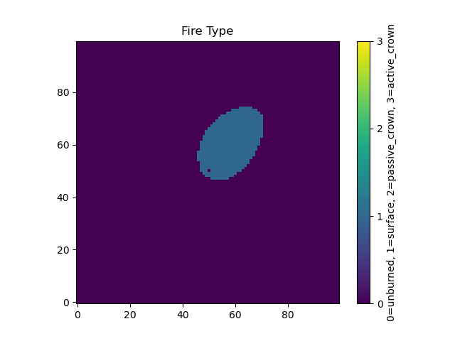
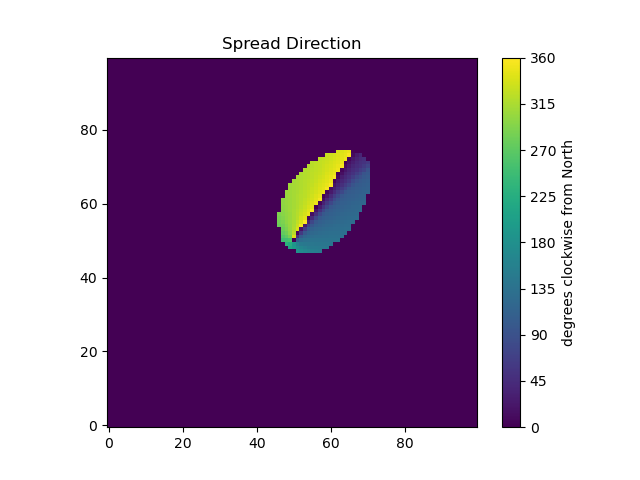
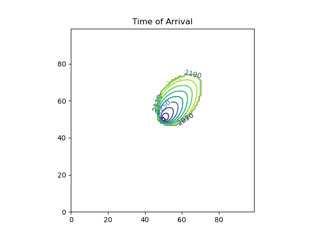
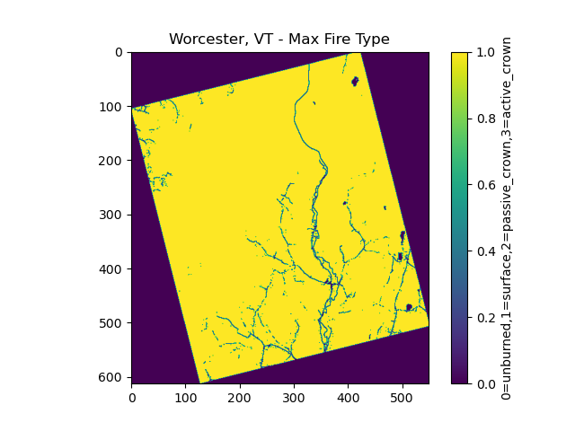

The Pyretechnics Fire Behavior Library
Copyright © 2023-2024 Spatial Informatics Group, LLC
Table of Contents
- 1. Preface
- 2. Data Model
- 3. Loading Data into the 3D Space-Time Cube (pyretechnics.space_time_cube)
- 4. [WIP] Fire Behavior Model
- 5. Fuel Model and Moisture Definitions (pyretechnics.fuel_models)
- 6. Surface Fire Equations (pyretechnics.surface_fire)
- 6.1. For Developers
- 6.1.1. Rothermel's Surface Fire Rate of Spread Equation
- 6.1.2. Surface Fire Spread Rate Functions (No Wind No Slope)
- 6.1.3. Surface Fire Intensity Functions
- 6.1.4. Wind and Slope Factor Functions
- 6.1.5. Surface Fire Behavior Functions (No Wind No Slope)
- 6.1.6. Midflame Wind Speed
- 6.1.7. Combining Wind and Slope Vectors
- 6.1.8. Elliptical Eccentricity
- 6.1.9. Surface Fire Behavior in the Direction of Maximum Spread
- 6.1.10. Surface Fire Behavior in Any Direction
- 6.2. For Users
- 6.2.1. How to Calculate the No-Wind-No-Slope Surface Fire Behavior
- 6.2.2. How to Translate the 10m Wind Speed Vector into the Midflame Wind Speed Vector
- 6.2.3. How to Calculate the Surface Fire Behavior in the Direction of Maximum Spread
- 6.2.4. How to Calculate the Surface Fire Behavior in Any Direction
- 6.1. For Developers
- 7. Crown Fire Equations (pyretechnics.crown_fire)
- 7.1. For Developers
- 7.1.1. Crown Fire Initiation
- 7.1.2. Passive and Active Crown Fire Spread Rate Functions
- 7.1.3. Crown Fire Intensity Functions
- 7.1.4. Elliptical Eccentricity
- 7.1.5. Crown Fire Behavior in the Direction of Maximum Spread
- 7.1.6. Crown Fire Behavior in Any Direction
- 7.1.7. Combining Surface and Crown Fire Behavior
- 7.2. For Users
- 7.2.1. How to Determine Whether a Surface Fire Transitions to a Crown Fire
- 7.2.2. How to Calculate the Crown Fire Behavior in the Direction of Maximum Spread
- 7.2.3. How to Calculate the Crown Fire Behavior in Any Direction
- 7.2.4. How to Calculate the Combined Surface and Crown Fire Behavior in Any Direction
- 7.1. For Developers
- 8. Burning Cells on a Grid (pyretechnics.burn_cells)
- 9. [WIP] Fire Spread Algorithm: Eulerian Level Set Method (pyretechnics.eulerian_level_set)
- 9.1. For Developers
- 9.1.1. The \(\phi\) Field
- 9.1.2. Fire Front Normal Vector
- 9.1.3. Numerical Solution of the \(\phi\) Field Equation
- 9.1.4. Calculate the Surface/Crown Fireline Normal Behavior
- 9.1.5. Burn Cell Normal to the Fire Perimeter
- 9.1.6. Identify Cells Near the Fire Perimeter (\(\phi = 0\))
- 9.1.7. Spread Phi Field
- 9.2. For Users
- 9.1. For Developers
- 10. [WIP] Spot Fire Equations (pyretechnics.spot_fire)
- 11. [WIP] Fire Suppression Algorithms (pyretechnics.suppression)
- 12. [WIP] Urban Spread Algorithms
- 13. [WIP] Fire Spread API
- 14. [WIP] Fire Spread Functions
- 15. Appendices
- 15.1. Units Conversion Functions (pyretechnics.conversion)
- 15.2. Vector Utility Functions (pyretechnics.vector_utils)
- 15.3. SpaceTimeCube and LazySpaceTimeCube Tests (pyretechnics_test.test_space_time_cube)
- 15.4. Loading LANDFIRE Inputs (pyretechnics.load_landfire)
- 15.5. [WIP] Testing pyretechnics.burn_cells on Worcester, VT (pyretechnics_test.test_burn_cells)
- 15.5.1. Loading Topography, Fuel Model, and Tree Canopy Inputs from LANDFIRE GeoTIFFs
- 15.5.2. Adding Constant Wind and Moisture Values
- 15.5.3. Burning a Single Cell in the Dataset as a Head Fire
- 15.5.4. Burning All Cells in the Dataset as a Head Fire
- 15.5.5. Comparing Pyretechnics Outputs with FLAMMAP Outputs
- 15.6. [WIP] Visualizing the Burned Layers
1. Preface
This document is a Literate Program1, containing both the source code of the software it describes as well as the rationale used in each step of its design and implementation. The purpose of this approach is to enable both programmers and non-programmers alike to retrace the author's footsteps as they read through the text and code. By the time they have reached the end of this document, the reader should have just as strong a grasp of the system as the original programmer.
The source code repository containing this document provides a comprehensive reproducible development environment through the use of the open source GNU Guix2 transactional package manager. This tool will automatically install all the software needed to tangle, detangle, weave, test, build, and install this library on your machine without conflicting with the main package manager of your operating system. See README.md for more details.
2. Data Model
2.1. Working in a 3D Space-Time Cube
In Pyretechnics, a fire is viewed as a three-dimensional event occurring within a bounded region of space-time \((T,Y,X)\). In this mental model, the environment in which a fire develops can be visualized as a cube in which space is described in 2D by the \(X\) and \(Y\) dimensions and time projects this 2D world into 3D along the \(T\) dimension.
Note, in particular, that this is not the same thing as a three-dimensional model of fire behavior that incorporates surface elevation as the third dimension. Although terrain data (such as elevation, slope, and aspect) and tree cover characteristics (such as canopy height and canopy base height) are incorporated into the implemented spread equations in order to determine the rate, direction, and mode of fire spread, the outputs of the fire behavior algorithms in Pyretechnics currently only use two dimensions to describe spatial heterogeneity within the simulation environment. The third dimension is instead reserved for temporal variations in the model inputs and outputs.
2.2. Fires as Conical Shapes in Space-Time
All fire events begin from an ignition somewhere in space-time. As combustion and propagation occur in burnable fuels, the burned area (a.k.a "burn scar") of a fire spreads monotonically outward in space. Viewed from the lens of our 3D space-time cube, these monotonically expanding burn scars form conical solids within the simulation environment, with the bottom point of the cone representing the initial ignition point and the upper edge of the cone representing the actively burning fire perimeter. Of course, we only expect idealized fire cones to appear in environments with homogeneous topography, weather, fuels, and fuel moisture. As these inputs become more heterogenous throughout the burned region of space-time, these idealized cones will become distorted in the directions of faster or slower spread and their perimeters may become more finely dissected. However, we use this conical shape description of fire events within the simulated space-time cube to convey both their monotonically increasing spatial area over time as well as to provide the foundation for a more visually intuitive understanding of the effect of temporally varying environmental conditions on the behavior (and thus shape) of fires.
2.3. Support for Input Datasets of Varying Dimensionality
At the beginning of a fire behavior simulation, our 3D space-time cube will be populated with all of the information that describes the environment and will remain effectively static as the fire event unfolds. This includes (but is not limited to) topography, weather, fuels, and fuel moisture. In many common simulation scenarios, we expect that topography and fuels will probably vary in space but not in time, and weather and fuel moisture may vary in both space and time. However, we use "may" in these statements because the data model within Pyretechnics is flexibly designed to allow any of these environmental input variables to take on any of these forms:
- Constant
- Constant in both space and time.
Ex: A single constant foliar moisture value could be used over the simulation area for the entire simulation duration. - Temporal
- Constant in space but variable in time.
Ex: An hourly sequence of spread rate adjustment factors could be used to globally ramp up and down fire spread rates throughout a day/night cycle, creating burn periods of arbitrary length and intensity. - Spatial
- Variable in space but constant in time.
Ex: A raster layer downloaded from LANDFIRE3 can be used to specify the spatial distribution of FBFM40 fuel model values on a landscape. - Spatio-temporal
- Variable in both space and time.
Ex: Hourly RTMA4 weather data can be loaded from a multi-band raster and used to specify the spatio-temporal distribution of wind speed and direction throughout the simulation domain.
This is accomplished by representing each such input value as an abstract datatype with a set of 3D space-time lookup functions for accessing its values within 0D, 1D, 2D, and 3D slices of the space-time cube at the simulation resolution. Such lookups should always be referentially transparent, so as to ensure that subsequent lookups with the same coordinate will always yield the same values. See section 3 for implementation details.
2.4. Support for Input Datasets of Varying Resolution
Even when dimensions are the same between input datasets, they may be provided at different resolutions from one another, provided that the following conditions are met:
- Same Projection
- All spatially varying datasets must share the same projection.
- Same Extent
- All spatial and temporal extents must match.
- Data Resolutions Divide Simulation Resolutions Evenly
- All spatial and temporal resolutions must be exact divisors of the simulation resolution.
The simulated space-time cube will share the same projection and extent as the input datasets, but its resolution may be specified by the user, provided that it meets condition 3 above. The 3D lookup functions for each input will then be responsible for translating the space-time coordinates they receive at the simulation resolution into the correct coordinates for their underlying dataset's native resolution. See section 3 for implementation details.
3. Loading Data into the 3D Space-Time Cube (pyretechnics.space_time_cube)
3.1. For Developers
The following sections define Python classes that construct 3D space-time cubes corresponding to the data model described above for various types of input datasets.
3.1.1. Module Imports
from functools import reduce import numpy as np
3.1.2. Utility Functions
def is_pos_int(x): return isinstance(x, int) and x > 0 def divide_evenly(dividend, divisor): (quotient, remainder) = divmod(dividend, divisor) if remainder == 0: return quotient else: raise ValueError(str(dividend) + " must be an exact multiple of " + str(divisor) + ".") def to_positive_index_range(index_range, axis_length): """ Translate None and negative indices to positive indices. """ (start, stop) = index_range return ( 0 if start == None else axis_length + start if start < 0 else start, axis_length if stop == None else axis_length + stop if stop < 0 else stop ) def maybe_repeat_array(array, axis_repetitions): """ Return a new array that is created by repeating the elements from the input array repetitions times along the specified array axis. Avoid allocating new memory if repetitions == 1 or if the repeated array axis has length 1. """ (axis, repetitions) = axis_repetitions if repetitions == 1: return array else: array_shape = list(np.shape(array)) if array_shape[axis] == 1: array_shape[axis] = repetitions return np.broadcast_to(array, array_shape) else: return np.repeat(array, repetitions, axis)
3.1.3. SpaceTimeCube Class
When an input dataset is already loaded into memory as either a single
scalar value or a 1D, 2D, or 3D array of values, it can be made
available to the various Pyretechnics algorithms by wrapping it in a
SpaceTimeCube object. As described in sections 2.3 and 2.4, this input data can be provided in a variety of
dimensions and resolutions, subject to some simple constraints.
The SpaceTimeCube object will be created with a tuple of
user-specified spatio-temporal resolutions, called the cube shape,
which must be equal to or exact multiples of those of the underlying
data. For memory efficiency, input values are stored within the
SpaceTimeCube object at their native resolution but can be accessed
at any spatio-temporal point or region within the SpaceTimeCube's
extent using coordinates from the cube shape resolution.
The various accessor functions provided by this class receive 3D space-time coordinates at the cube shape resolution and will correctly map them into the corresponding index within the native dataset. Whenever a bounded region of space-time is requested via an accessor function, the underlying data will be expanded to fill a new Numpy array at the cube shape resolution. Whenever possible, Numpy array broadcasting will be used instead of data copying for any constant input dimensions.
class SpaceTimeCube: """ Create an object that represents a 3D array with dimensions (T,Y,X) given by cube_shape. Internally, data is stored as a 3D Numpy array at the resolution of the provided base data. Whenever a point value or contiguous space-time region of values is requested, translate the given cube_shape coordinates into base coordinates, look up the values from the base data, expand them (if necessary) back into the cube_shape resolution, and return the resulting scalar value or array to the caller. """ def __init__(self, cube_shape, base): """ NOTE: The resolutions in cube_shape must be exact multiples of any existing dimensions in the base data. """ # Ensure that cube_shape contains 3 values or throw an error (cube_bands, cube_rows, cube_cols) = cube_shape # Ensure that cube_shape only contains positive integers or throw an error if not(all(map(is_pos_int, cube_shape))): raise ValueError("The cube_shape must only contain positive integers.") # Store the cube metadata for later self.ndim = 3 self.size = cube_bands * cube_rows * cube_cols self.shape = cube_shape self.base = base match np.ndim(base): # 0D: Constant Input case 0: self.t_repetitions = cube_bands self.y_repetitions = cube_rows self.x_repetitions = cube_cols self.data = np.asarray([[[base]]]) # 1D: Time-Series Input case 1: base_bands = len(base) self.t_repetitions = divide_evenly(cube_bands, base_bands) self.y_repetitions = cube_rows self.x_repetitions = cube_cols # Expand (base_bands) -> (base_bands,1,1) self.data = np.expand_dims(base, axis=(1,2)) # 2D: Spatial Input case 2: (base_rows, base_cols) = np.shape(base) self.t_repetitions = cube_bands self.y_repetitions = divide_evenly(cube_rows, base_rows) self.x_repetitions = divide_evenly(cube_cols, base_cols) # Expand (base_rows,base_cols) -> (1,base_rows,base_cols) self.data = np.expand_dims(base, axis=0) # 3D: Spatio-Temporal Input case 3: (base_bands, base_rows, base_cols) = np.shape(base) self.t_repetitions = divide_evenly(cube_bands, base_bands) self.y_repetitions = divide_evenly(cube_rows, base_rows) self.x_repetitions = divide_evenly(cube_cols, base_cols) self.data = np.asarray(base) # 4D+: Invalid Input case _: raise ValueError("Invalid input: base must have 0-3 dimensions.") def get(self, t, y, x): """ Return the scalar value at index (t,y,x) by translating these cube coordinates to base coordinates and looking up the value within the base data. NOTE: Indices may be negative. """ # Select value by spatio-temporal coordinate return self.data[t // self.t_repetitions, y // self.y_repetitions, x // self.x_repetitions] def getTimeSeries(self, t_range, y, x): """ Return the 1D array given by the slice (t_range,y,x) by translating these cube coordinates to base coordinates, looking up the array slice within the base data, and expanding it back to the cube_shape resolution. NOTE: Indices may be negative. NOTE: Range indices may include one or more None values and provide (inclusion, exclusion) semantics like Python array slice notation. """ # Destructure the argument range (t_start, t_stop_exclusive) = to_positive_index_range(t_range, self.shape[0]) t_stop = t_stop_exclusive - 1 # Translate high-res coordinates to low-res coordinates t_start_chunk = t_start // self.t_repetitions t_stop_chunk = t_stop // self.t_repetitions y_chunk = y // self.y_repetitions x_chunk = x // self.x_repetitions # Select the array slice that completely contains all low-res coordinates low_res_time = self.data[t_start_chunk:(t_stop_chunk + 1), y_chunk, x_chunk] # Expand the low-res slice into a high-res slice high_res_time = maybe_repeat_array(low_res_time, (0, self.t_repetitions)) # Translate high-res global coordinates to high-res slice coordinates t_chunk_origin = t_start_chunk * self.t_repetitions t_start_idx = t_start - t_chunk_origin t_stop_idx = t_stop - t_chunk_origin # Select the array slice that matches the high-res slice coordinates return high_res_time[t_start_idx:(t_stop_idx + 1)] def getSpatialPlane(self, t, y_range, x_range): """ Return the 2D array given by the slice (t,y_range,x_range) by translating these cube coordinates to base coordinates, looking up the array slice within the base data, and expanding it back to the cube_shape resolution. NOTE: Indices may be negative. NOTE: Range indices may include one or more None values and provide (inclusion, exclusion) semantics like Python array slice notation. """ # Destructure the argument ranges (y_start, y_stop_exclusive) = to_positive_index_range(y_range, self.shape[1]) (x_start, x_stop_exclusive) = to_positive_index_range(x_range, self.shape[2]) y_stop = y_stop_exclusive - 1 x_stop = x_stop_exclusive - 1 # Translate high-res coordinates to low-res coordinates t_chunk = t // self.t_repetitions y_start_chunk = y_start // self.y_repetitions y_stop_chunk = y_stop // self.y_repetitions x_start_chunk = x_start // self.x_repetitions x_stop_chunk = x_stop // self.x_repetitions # Select the array slice that completely contains all low-res coordinates low_res_space = self.data[t_chunk, y_start_chunk:(y_stop_chunk + 1), x_start_chunk:(x_stop_chunk + 1)] # Expand the low-res slice into a high-res slice high_res_space = reduce(maybe_repeat_array, ((0, self.y_repetitions), (1, self.x_repetitions)), low_res_space) # Translate high-res global coordinates to high-res slice coordinates y_chunk_origin = y_start_chunk * self.y_repetitions x_chunk_origin = x_start_chunk * self.x_repetitions y_start_idx = y_start - y_chunk_origin y_stop_idx = y_stop - y_chunk_origin x_start_idx = x_start - x_chunk_origin x_stop_idx = x_stop - x_chunk_origin # Select the array slice that matches the high-res slice coordinates return high_res_space[y_start_idx:(y_stop_idx + 1), x_start_idx:(x_stop_idx + 1)] def getSubcube(self, t_range, y_range, x_range): """ Return the 3D array given by the slice (t_range,y_range,x_range) by translating these cube coordinates to base coordinates, looking up the array slice within the base data, and expanding it back to the cube_shape resolution. NOTE: Indices may be negative. NOTE: Range indices may include one or more None values and provide (inclusion, exclusion) semantics like Python array slice notation. """ # Destructure the argument ranges (t_start, t_stop_exclusive) = to_positive_index_range(t_range, self.shape[0]) (y_start, y_stop_exclusive) = to_positive_index_range(y_range, self.shape[1]) (x_start, x_stop_exclusive) = to_positive_index_range(x_range, self.shape[2]) t_stop = t_stop_exclusive - 1 y_stop = y_stop_exclusive - 1 x_stop = x_stop_exclusive - 1 # Translate high-res coordinates to low-res coordinates t_start_chunk = t_start // self.t_repetitions t_stop_chunk = t_stop // self.t_repetitions y_start_chunk = y_start // self.y_repetitions y_stop_chunk = y_stop // self.y_repetitions x_start_chunk = x_start // self.x_repetitions x_stop_chunk = x_stop // self.x_repetitions # Select the array slice that completely contains all low-res coordinates low_res_cube = self.data[t_start_chunk:(t_stop_chunk + 1), y_start_chunk:(y_stop_chunk + 1), x_start_chunk:(x_stop_chunk + 1)] # Expand the low-res slice into a high-res slice high_res_cube = reduce(maybe_repeat_array, ((0, self.t_repetitions), (1, self.y_repetitions), (2, self.x_repetitions)), low_res_cube) # Translate high-res global coordinates to high-res slice coordinates t_chunk_origin = t_start_chunk * self.t_repetitions y_chunk_origin = y_start_chunk * self.y_repetitions x_chunk_origin = x_start_chunk * self.x_repetitions t_start_idx = t_start - t_chunk_origin t_stop_idx = t_stop - t_chunk_origin y_start_idx = y_start - y_chunk_origin y_stop_idx = y_stop - y_chunk_origin x_start_idx = x_start - x_chunk_origin x_stop_idx = x_stop - x_chunk_origin # Select the array slice that matches the high-res slice coordinates return high_res_cube[t_start_idx:(t_stop_idx + 1), y_start_idx:(y_stop_idx + 1), x_start_idx:(x_stop_idx + 1)] def __getFullyRealizedCube(self): """ Return the 3D array created by expanding the base data to the cube_shape resolution. Wherever possible, Numpy broadcasting is used to avoid memory allocation along constant array dimensions. """ match np.ndim(self.base): # 0D: Constant Input case 0: # Broadcast (0,0,0) -> (t,y,x) return np.broadcast_to(self.data, self.shape) # 1D: Time-Series Input case 1: # Repeat (t0,1,1) -> (t,1,1) repeated_array = maybe_repeat_array(self.data, (0, self.t_repetitions)) # Broadcast (t,1,1) -> (t,y,x) return np.broadcast_to(repeated_array, self.shape) # 2D: Spatial Input case 2: # Repeat (1,y0,x0) -> (1,y,x) repeated_array = reduce(maybe_repeat_array, ((1, self.y_repetitions), (2, self.x_repetitions)), self.data) # Broadcast (1,y,x) -> (t,y,x) return np.broadcast_to(repeated_array, self.shape) # 3D: Spatio-Temporal Input case 3: # Repeat (t0,y0,x0) -> (t,y,x) return reduce(maybe_repeat_array, ((0, self.t_repetitions), (1, self.y_repetitions), (2, self.x_repetitions)), self.data) def getFullyRealizedCube(self, cache=False): """ Return the 3D array created by expanding the base data to the cube_shape resolution. Wherever possible, Numpy broadcasting is used to avoid memory allocation along constant array dimensions. When cache == True, this expanded 3D array is cached within the SpaceTimeCube object for future immediate retrieval. """ if hasattr(self, "cube"): return self.cube else: cube = self.__getFullyRealizedCube() if cache is True: self.cube = cube return cube def releaseFullyRealizedCube(self): """ Deletes the cached fully realized cube if it exists. """ if hasattr(self, "cube"): delattr(self, "cube")
3.1.4. LazySpaceTimeCube Class
When a dataset is too large to fit easily into memory, it can be
partitioned into a collection of subcubes, which will be lazily loaded
on demand into a 3D cache grid of SpaceTimeCube objects provided by
the LazySpaceTimeCube class.
The LazySpaceTimeCube object will be created with a tuple of
user-specified spatio-temporal resolutions, called the cube shape,
which must be equal to or exact multiples of the subcube shape.
The various accessor functions provided by this class receive 3D
space-time coordinates at the cube shape resolution and will
correctly map them into the corresponding cache and subcube indexes.
Any intersected subcubes that are not already present in the cache
grid will be loaded on demand by calling a user-supplied
load_subcube function and stored in the cache grid for faster
retrieval later. If a bounded region of space-time that spans multiple
subcubes is requested via an accessor function, each of the
intersected subcubes will be loaded and cached, their relevant array
slices will be extracted, and these slices will be merged into a new
array at the cube shape resolution.
Fire spread simulations that use the LazySpaceTimeCube class will
only need to load into memory those subcubes which are intersected by
the expanding conical burn scar (see section 2.2). In simulations of fires that are small relative to the
extent of the full 3D space-time environment, these memory savings may
be substantial and may make it possible to run simulations over larger
extents and/or finer resolutions than have been used previously.
class LazySpaceTimeCube: """ Create an object that represents a 3D array with dimensions (T,Y,X) given by cube_shape. Internally, data is stored as an initially empty 3D array of SpaceTimeCube objects. Whenever a point value or contiguous space-time region of values is requested, identify which SpaceTimeCubes contain the requested coordinates, load them into the cache array by calling load_subcube for any that are not already present, request the values from these SpaceTimeCubes, combine them together if necessary, and return the resulting scalar value or array to the caller. """ def __init__(self, cube_shape, subcube_shape, load_subcube): """ NOTE: The resolutions in cube_shape must be exact multiples of those in subcube_shape. """ # Ensure that cube_shape and subcube_shape both contain 3 values or throw an error (cube_bands, cube_rows, cube_cols) = cube_shape (subcube_bands, subcube_rows, subcube_cols) = subcube_shape # Ensure that cube_shape and subcube_shape only contain positive integers or throw an error if not(all(map(is_pos_int, cube_shape + subcube_shape))): raise ValueError("The cube_shape and subcube_shape must only contain positive integers.") # Ensure that cube_shape is divided evenly by subcube_shape or throw an error cache_bands = divide_evenly(cube_bands, subcube_bands) cache_rows = divide_evenly(cube_rows, subcube_rows) cache_cols = divide_evenly(cube_cols, subcube_cols) # Store the cube metadata, subcube_shape, cache_shape, cache, and load_subcube functions for later self.ndim = 3 self.size = cube_bands * cube_rows * cube_cols self.shape = cube_shape self.subcube_shape = subcube_shape self.cache_shape = (cache_bands, cache_rows, cache_cols) self.cache = np.empty(self.cache_shape, dtype=object) self.load_subcube = load_subcube def __getOrLoadSubcube(self, cache_t, cache_y, cache_x): """ Return the SpaceTimeCube stored at self.cache[cache_t, cache_y, cache_x] if it has already been loaded. Otherwise, call self.load_subcube to load it, store it in self.cache, and return it. """ subcube = self.cache[cache_t, cache_y, cache_x] if subcube: return subcube else: subcube = self.load_subcube((cache_t, cache_y, cache_x), self.subcube_shape) self.cache[cache_t, cache_y, cache_x] = subcube return subcube def get(self, t, y, x): """ Return the scalar value at index (t,y,x) by translating these cube coordinates to cache and subcube coordinates, loading the matching subcube into the cache grid if not already present, and looking up the value within this subcube. NOTE: Indices may be negative provided that your load_subcube function can handle negative indices in its cache_index argument. """ (subcube_bands, subcube_rows, subcube_cols) = self.subcube_shape (cache_t, subcube_t) = divmod(t, subcube_bands) (cache_y, subcube_y) = divmod(y, subcube_rows) (cache_x, subcube_x) = divmod(x, subcube_cols) subcube = self.__getOrLoadSubcube(cache_t, cache_y, cache_x) return subcube.get(subcube_t, subcube_y, subcube_x) def getTimeSeries(self, t_range, y, x): """ Return the 1D array given by the slice (t_range,y,x) by translating these cube coordinates to cache and subcube coordinates, loading the matching subcubes into the cache grid if not already present, looking up the array slices within each subcube, and merging them together into a single 1D array. NOTE: Indices may be negative provided that your load_subcube function can handle negative indices in its cache_index argument. NOTE: Range indices may include one or more None values and provide (inclusion, exclusion) semantics like Python array slice notation. """ # Destructure the argument range (t_start, t_stop_exclusive) = to_positive_index_range(t_range, self.shape[0]) t_stop = t_stop_exclusive - 1 # Translate high-res coordinates to cache and subcube coordinates (subcube_bands, subcube_rows, subcube_cols) = self.subcube_shape (cache_t_start, subcube_t_start) = divmod(t_start, subcube_bands) (cache_t_stop, subcube_t_stop) = divmod(t_stop, subcube_bands) (cache_y, subcube_y) = divmod(y, subcube_rows) (cache_x, subcube_x) = divmod(x, subcube_cols) # Load, expand, and combine subcubes return np.concatenate( [self.__getOrLoadSubcube(cache_t, cache_y, cache_x ).getTimeSeries( (subcube_t_start if cache_t == cache_t_start else 0, subcube_t_stop + 1 if cache_t == cache_t_stop else subcube_bands), subcube_y, subcube_x ) for cache_t in range(cache_t_start, cache_t_stop + 1)] ) def getSpatialPlane(self, t, y_range, x_range): """ Return the 2D array given by the slice (t,y_range,x_range) by translating these cube coordinates to cache and subcube coordinates, loading the matching subcubes into the cache grid if not already present, looking up the array slices within each subcube, and merging them together into a single 2D array. NOTE: Indices may be negative provided that your load_subcube function can handle negative indices in its cache_index argument. NOTE: Range indices may include one or more None values and provide (inclusion, exclusion) semantics like Python array slice notation. """ # Destructure the argument ranges (y_start, y_stop_exclusive) = to_positive_index_range(y_range, self.shape[1]) (x_start, x_stop_exclusive) = to_positive_index_range(x_range, self.shape[2]) y_stop = y_stop_exclusive - 1 x_stop = x_stop_exclusive - 1 # Translate high-res coordinates to cache and subcube coordinates (subcube_bands, subcube_rows, subcube_cols) = self.subcube_shape (cache_t, subcube_t) = divmod(t, subcube_bands) (cache_y_start, subcube_y_start) = divmod(y_start, subcube_rows) (cache_y_stop, subcube_y_stop) = divmod(y_stop, subcube_rows) (cache_x_start, subcube_x_start) = divmod(x_start, subcube_cols) (cache_x_stop, subcube_x_stop) = divmod(x_stop, subcube_cols) # Load, expand, and combine subcubes return np.block( [[self.__getOrLoadSubcube(cache_t, cache_y, cache_x ).getSpatialPlane( subcube_t, (subcube_y_start if cache_y == cache_y_start else 0, subcube_y_stop + 1 if cache_y == cache_y_stop else subcube_rows), (subcube_x_start if cache_x == cache_x_start else 0, subcube_x_stop + 1 if cache_x == cache_x_stop else subcube_cols) ) for cache_x in range(cache_x_start, cache_x_stop + 1)] for cache_y in range(cache_y_start, cache_y_stop + 1)] ) def getSubcube(self, t_range, y_range, x_range): """ Return the 3D array given by the slice (t_range,y_range,x_range) by translating these cube coordinates to cache and subcube coordinates, loading the matching subcubes into the cache grid if not already present, looking up the array slices within each subcube, and merging them together into a single 3D array. NOTE: Indices may be negative provided that your load_subcube function can handle negative indices in its cache_index argument. NOTE: Range indices may include one or more None values and provide (inclusion, exclusion) semantics like Python array slice notation. """ # Destructure the argument ranges (t_start, t_stop_exclusive) = to_positive_index_range(t_range, self.shape[0]) (y_start, y_stop_exclusive) = to_positive_index_range(y_range, self.shape[1]) (x_start, x_stop_exclusive) = to_positive_index_range(x_range, self.shape[2]) t_stop = t_stop_exclusive - 1 y_stop = y_stop_exclusive - 1 x_stop = x_stop_exclusive - 1 # Translate high-res coordinates to cache and subcube coordinates (subcube_bands, subcube_rows, subcube_cols) = self.subcube_shape (cache_t_start, subcube_t_start) = divmod(t_start, subcube_bands) (cache_t_stop, subcube_t_stop) = divmod(t_stop, subcube_bands) (cache_y_start, subcube_y_start) = divmod(y_start, subcube_rows) (cache_y_stop, subcube_y_stop) = divmod(y_stop, subcube_rows) (cache_x_start, subcube_x_start) = divmod(x_start, subcube_cols) (cache_x_stop, subcube_x_stop) = divmod(x_stop, subcube_cols) # Load, expand, and combine subcubes return np.block( [[[self.__getOrLoadSubcube(cache_t, cache_y, cache_x ).getSubcube( (subcube_t_start if cache_t == cache_t_start else 0, subcube_t_stop + 1 if cache_t == cache_t_stop else subcube_bands), (subcube_y_start if cache_y == cache_y_start else 0, subcube_y_stop + 1 if cache_y == cache_y_stop else subcube_rows), (subcube_x_start if cache_x == cache_x_start else 0, subcube_x_stop + 1 if cache_x == cache_x_stop else subcube_cols) ) for cache_x in range(cache_x_start, cache_x_stop + 1)] for cache_y in range(cache_y_start, cache_y_stop + 1)] for cache_t in range(cache_t_start, cache_t_stop + 1)] ) def getFullyRealizedCube(self, cache=False): raise ValueError("getFullyRealizedCube is not implemented for LazySpaceTimeCube.\n" + "You probably don't want to do this anyway.") def releaseFullyRealizedCube(self): raise ValueError("releaseFullyRealizedCube is not implemented for LazySpaceTimeCube.\n" + "You probably don't want to do this anyway.")
3.2. For Users
In the following sections, we will use functions from numpy and the
Python standard library to construct arrays of different resolutions
in memory to use in our SpaceTimeCube and LazySpaceTimeCube
examples. In many real world applications, this array data will
probably be read in from files or databases using Python libraries
such as rasterio or psycopg2. All examples should apply equally well
in either case.
3.2.1. How to Use SpaceTimeCube
- Create a SpaceTimeCube from 0D, 1D, 2D, or 3D Input Data
import numpy as np from pyretechnics.space_time_cube import SpaceTimeCube #============================================================== # Set a Random Seed #============================================================== np.random.seed(0) #============================================================== # Specify the SpaceTimeCube Dimensions #============================================================== cube_shape = ( 240, # bands: 10 days @ 1 hour/band 1000, # rows: 30 km @ 30 meters/row 1000, # cols: 30 km @ 30 meters/col ) #===================================================================================================== # Constant Data: foliar moisture = 70% everywhere #===================================================================================================== foliar_moisture = 0.7 constant_cube = SpaceTimeCube(cube_shape, foliar_moisture) #===================================================================================================== # Temporal Data: 24-hour burn period with ramp up and ramp down for 10 days #===================================================================================================== spread_rate_adjustments = ([0] * 6 + [0.33, 0.66] + [1] * 12 + [0.66, 0.33] + [0] * 2) * 10 time_series_cube = SpaceTimeCube(cube_shape, spread_rate_adjustments) #===================================================================================================== # Spatial Data: 2D elevation raster with 1000 (30m) x 1000 (30m) cells #===================================================================================================== elevation_raster = np.random.normal(500, 100, 1000000).astype("int").reshape(1000,1000) spatial_cube = SpaceTimeCube(cube_shape, elevation_raster) #===================================================================================================== # Spatio-Temporal Data: 3D daily max wind speed raster with 10 (days) x 100 (300m) x 100 (300m) cells #===================================================================================================== wind_speed_raster = np.random.normal(30, 5, 100000).astype("int").reshape(10,100,100) spatiotemporal_cube = SpaceTimeCube(cube_shape, wind_speed_raster)
- Retrieve a Scalar Value at a Space-Time Coordinate
# Space-Time Coordinate band = 12 row = 100 col = 100 print("Value from Constant Data: Foliar Moisture") print(constant_cube.get(band, row, col), "\n") print("Value from Time Series Data: Spread Rate Adjustment") print(time_series_cube.get(band, row, col), "\n") print("Value from Spatial Data: Elevation") print(spatial_cube.get(band, row, col), "\n") print("Value from Spatio-Temporal Data: Wind Speed") print(spatiotemporal_cube.get(band, row, col))
Value from Constant Data: Foliar Moisture 0.7 Value from Time Series Data: Spread Rate Adjustment 1.0 Value from Spatial Data: Elevation 564 Value from Spatio-Temporal Data: Wind Speed 32
- Retrieve a Time Series at a Spatial Coordinate
# Space-Time Coordinates band_range = (18,30) row = 100 col = 100 print("Time Series from Constant Data: Foliar Moisture") print(constant_cube.getTimeSeries(band_range, row, col), "\n") print("Time Series from Time Series Data: Spread Rate Adjustment") print(time_series_cube.getTimeSeries(band_range, row, col), "\n") print("Time Series from Spatial Data: Elevation") print(spatial_cube.getTimeSeries(band_range, row, col), "\n") print("Time Series from Spatio-Temporal Data: Wind Speed") print(spatiotemporal_cube.getTimeSeries(band_range, row, col))
Time Series from Constant Data: Foliar Moisture [0.7 0.7 0.7 0.7 0.7 0.7 0.7 0.7 0.7 0.7 0.7 0.7] Time Series from Time Series Data: Spread Rate Adjustment [1. 1. 0.66 0.33 0. 0. 0. 0. 0. 0. 0. 0. ] Time Series from Spatial Data: Elevation [564 564 564 564 564 564 564 564 564 564 564 564] Time Series from Spatio-Temporal Data: Wind Speed [32 32 32 32 32 32 37 37 37 37 37 37]
- Retrieve a Spatial Plane at a Temporal Coordinate
# Space-Time Coordinates band = 12 row_range = (95,105) col_range = (95,105) print("Spatial Plane from Constant Data: Foliar Moisture") print(constant_cube.getSpatialPlane(band, row_range, col_range), "\n") print("Spatial Plane from Time Series Data: Spread Rate Adjustment") print(time_series_cube.getSpatialPlane(band, row_range, col_range), "\n") print("Spatial Plane from Spatial Data: Elevation") print(spatial_cube.getSpatialPlane(band, row_range, col_range), "\n") print("Spatial Plane from Spatio-Temporal Data: Wind Speed") print(spatiotemporal_cube.getSpatialPlane(band, row_range, col_range))
Spatial Plane from Constant Data: Foliar Moisture [[0.7 0.7 0.7 0.7 0.7 0.7 0.7 0.7 0.7 0.7] [0.7 0.7 0.7 0.7 0.7 0.7 0.7 0.7 0.7 0.7] [0.7 0.7 0.7 0.7 0.7 0.7 0.7 0.7 0.7 0.7] [0.7 0.7 0.7 0.7 0.7 0.7 0.7 0.7 0.7 0.7] [0.7 0.7 0.7 0.7 0.7 0.7 0.7 0.7 0.7 0.7] [0.7 0.7 0.7 0.7 0.7 0.7 0.7 0.7 0.7 0.7] [0.7 0.7 0.7 0.7 0.7 0.7 0.7 0.7 0.7 0.7] [0.7 0.7 0.7 0.7 0.7 0.7 0.7 0.7 0.7 0.7] [0.7 0.7 0.7 0.7 0.7 0.7 0.7 0.7 0.7 0.7] [0.7 0.7 0.7 0.7 0.7 0.7 0.7 0.7 0.7 0.7]] Spatial Plane from Time Series Data: Spread Rate Adjustment [[1. 1. 1. 1. 1. 1. 1. 1. 1. 1.] [1. 1. 1. 1. 1. 1. 1. 1. 1. 1.] [1. 1. 1. 1. 1. 1. 1. 1. 1. 1.] [1. 1. 1. 1. 1. 1. 1. 1. 1. 1.] [1. 1. 1. 1. 1. 1. 1. 1. 1. 1.] [1. 1. 1. 1. 1. 1. 1. 1. 1. 1.] [1. 1. 1. 1. 1. 1. 1. 1. 1. 1.] [1. 1. 1. 1. 1. 1. 1. 1. 1. 1.] [1. 1. 1. 1. 1. 1. 1. 1. 1. 1.] [1. 1. 1. 1. 1. 1. 1. 1. 1. 1.]] Spatial Plane from Spatial Data: Elevation [[574 369 544 310 517 488 565 549 450 470] [443 551 480 476 432 561 578 361 468 480] [520 712 396 393 584 292 424 391 494 586] [707 534 246 423 521 500 426 340 288 482] [542 285 607 555 645 559 461 603 330 452] [498 497 664 445 518 564 461 508 600 380] [454 500 276 487 447 591 413 378 458 508] [573 890 485 501 357 413 356 635 374 618] [535 558 491 482 539 572 598 703 463 329] [487 555 580 492 462 484 495 396 711 356]] Spatial Plane from Spatio-Temporal Data: Wind Speed [[31 31 31 31 31 31 31 31 31 31] [31 31 31 31 31 31 31 31 31 31] [31 31 31 31 31 31 31 31 31 31] [31 31 31 31 31 31 31 31 31 31] [31 31 31 31 31 31 31 31 31 31] [26 26 26 26 26 32 32 32 32 32] [26 26 26 26 26 32 32 32 32 32] [26 26 26 26 26 32 32 32 32 32] [26 26 26 26 26 32 32 32 32 32] [26 26 26 26 26 32 32 32 32 32]]
- Retrieve a Subcube within a Space-Time Region
# Space-Time Coordinates band_range = (23,25) row_range = (95,105) col_range = (95,105) print("Subcube from Constant Data: Foliar Moisture") print(constant_cube.getSubcube(band_range, row_range, col_range), "\n") print("Subcube from Time Series Data: Spread Rate Adjustment") print(time_series_cube.getSubcube(band_range, row_range, col_range), "\n") print("Subcube from Spatial Data: Elevation") print(spatial_cube.getSubcube(band_range, row_range, col_range), "\n") print("Subcube from Spatio-Temporal Data: Wind Speed") print(spatiotemporal_cube.getSubcube(band_range, row_range, col_range))
Subcube from Constant Data: Foliar Moisture [[[0.7 0.7 0.7 0.7 0.7 0.7 0.7 0.7 0.7 0.7] [0.7 0.7 0.7 0.7 0.7 0.7 0.7 0.7 0.7 0.7] [0.7 0.7 0.7 0.7 0.7 0.7 0.7 0.7 0.7 0.7] [0.7 0.7 0.7 0.7 0.7 0.7 0.7 0.7 0.7 0.7] [0.7 0.7 0.7 0.7 0.7 0.7 0.7 0.7 0.7 0.7] [0.7 0.7 0.7 0.7 0.7 0.7 0.7 0.7 0.7 0.7] [0.7 0.7 0.7 0.7 0.7 0.7 0.7 0.7 0.7 0.7] [0.7 0.7 0.7 0.7 0.7 0.7 0.7 0.7 0.7 0.7] [0.7 0.7 0.7 0.7 0.7 0.7 0.7 0.7 0.7 0.7] [0.7 0.7 0.7 0.7 0.7 0.7 0.7 0.7 0.7 0.7]] [[0.7 0.7 0.7 0.7 0.7 0.7 0.7 0.7 0.7 0.7] [0.7 0.7 0.7 0.7 0.7 0.7 0.7 0.7 0.7 0.7] [0.7 0.7 0.7 0.7 0.7 0.7 0.7 0.7 0.7 0.7] [0.7 0.7 0.7 0.7 0.7 0.7 0.7 0.7 0.7 0.7] [0.7 0.7 0.7 0.7 0.7 0.7 0.7 0.7 0.7 0.7] [0.7 0.7 0.7 0.7 0.7 0.7 0.7 0.7 0.7 0.7] [0.7 0.7 0.7 0.7 0.7 0.7 0.7 0.7 0.7 0.7] [0.7 0.7 0.7 0.7 0.7 0.7 0.7 0.7 0.7 0.7] [0.7 0.7 0.7 0.7 0.7 0.7 0.7 0.7 0.7 0.7] [0.7 0.7 0.7 0.7 0.7 0.7 0.7 0.7 0.7 0.7]]] Subcube from Time Series Data: Spread Rate Adjustment [[[0. 0. 0. 0. 0. 0. 0. 0. 0. 0.] [0. 0. 0. 0. 0. 0. 0. 0. 0. 0.] [0. 0. 0. 0. 0. 0. 0. 0. 0. 0.] [0. 0. 0. 0. 0. 0. 0. 0. 0. 0.] [0. 0. 0. 0. 0. 0. 0. 0. 0. 0.] [0. 0. 0. 0. 0. 0. 0. 0. 0. 0.] [0. 0. 0. 0. 0. 0. 0. 0. 0. 0.] [0. 0. 0. 0. 0. 0. 0. 0. 0. 0.] [0. 0. 0. 0. 0. 0. 0. 0. 0. 0.] [0. 0. 0. 0. 0. 0. 0. 0. 0. 0.]] [[0. 0. 0. 0. 0. 0. 0. 0. 0. 0.] [0. 0. 0. 0. 0. 0. 0. 0. 0. 0.] [0. 0. 0. 0. 0. 0. 0. 0. 0. 0.] [0. 0. 0. 0. 0. 0. 0. 0. 0. 0.] [0. 0. 0. 0. 0. 0. 0. 0. 0. 0.] [0. 0. 0. 0. 0. 0. 0. 0. 0. 0.] [0. 0. 0. 0. 0. 0. 0. 0. 0. 0.] [0. 0. 0. 0. 0. 0. 0. 0. 0. 0.] [0. 0. 0. 0. 0. 0. 0. 0. 0. 0.] [0. 0. 0. 0. 0. 0. 0. 0. 0. 0.]]] Subcube from Spatial Data: Elevation [[[574 369 544 310 517 488 565 549 450 470] [443 551 480 476 432 561 578 361 468 480] [520 712 396 393 584 292 424 391 494 586] [707 534 246 423 521 500 426 340 288 482] [542 285 607 555 645 559 461 603 330 452] [498 497 664 445 518 564 461 508 600 380] [454 500 276 487 447 591 413 378 458 508] [573 890 485 501 357 413 356 635 374 618] [535 558 491 482 539 572 598 703 463 329] [487 555 580 492 462 484 495 396 711 356]] [[574 369 544 310 517 488 565 549 450 470] [443 551 480 476 432 561 578 361 468 480] [520 712 396 393 584 292 424 391 494 586] [707 534 246 423 521 500 426 340 288 482] [542 285 607 555 645 559 461 603 330 452] [498 497 664 445 518 564 461 508 600 380] [454 500 276 487 447 591 413 378 458 508] [573 890 485 501 357 413 356 635 374 618] [535 558 491 482 539 572 598 703 463 329] [487 555 580 492 462 484 495 396 711 356]]] Subcube from Spatio-Temporal Data: Wind Speed [[[31 31 31 31 31 31 31 31 31 31] [31 31 31 31 31 31 31 31 31 31] [31 31 31 31 31 31 31 31 31 31] [31 31 31 31 31 31 31 31 31 31] [31 31 31 31 31 31 31 31 31 31] [26 26 26 26 26 32 32 32 32 32] [26 26 26 26 26 32 32 32 32 32] [26 26 26 26 26 32 32 32 32 32] [26 26 26 26 26 32 32 32 32 32] [26 26 26 26 26 32 32 32 32 32]] [[30 30 30 30 30 36 36 36 36 36] [30 30 30 30 30 36 36 36 36 36] [30 30 30 30 30 36 36 36 36 36] [30 30 30 30 30 36 36 36 36 36] [30 30 30 30 30 36 36 36 36 36] [34 34 34 34 34 37 37 37 37 37] [34 34 34 34 34 37 37 37 37 37] [34 34 34 34 34 37 37 37 37 37] [34 34 34 34 34 37 37 37 37 37] [34 34 34 34 34 37 37 37 37 37]]]
3.2.2. How to Use LazySpaceTimeCube
- Create a LazySpaceTimeCube from 0D, 1D, 2D, or 3D Input Data
import numpy as np from pyretechnics.space_time_cube import SpaceTimeCube, LazySpaceTimeCube #============================================================== # Set a Random Seed #============================================================== np.random.seed(0) #============================================================== # Specify the SpaceTimeCube Dimensions #============================================================== cube_shape = ( 240, # bands: 10 days @ 1 hour/band 1000, # rows: 30 km @ 30 meters/row 1000, # cols: 30 km @ 30 meters/col ) #===================================================================================================== # Constant Data: foliar moisture = 70% everywhere #===================================================================================================== foliar_moisture = 0.7 foliar_moisture_subcube_shape = cube_shape # Only 1 subcube necessary def foliar_moisture_load_subcube(_, subcube_shape): return SpaceTimeCube(subcube_shape, foliar_moisture) constant_cube = LazySpaceTimeCube(cube_shape, foliar_moisture_subcube_shape, foliar_moisture_load_subcube) #===================================================================================================== # Temporal Data: 24-hour burn period with ramp up and ramp down for 10 days #===================================================================================================== spread_rate_adjustments = ([0] * 6 + [0.33, 0.66] + [1] * 12 + [0.66, 0.33] + [0] * 2) * 10 spread_rate_adjustments_subcube_shape = (24, 1000, 1000) # 1 subcube per day (10 total) def spread_rate_adjustments_load_subcube(cache_index, subcube_shape): (cache_t, _, _) = cache_index t_start = 24 * cache_t t_stop = 24 * (cache_t + 1) return SpaceTimeCube(subcube_shape, spread_rate_adjustments[t_start:t_stop]) time_series_cube = LazySpaceTimeCube(cube_shape, spread_rate_adjustments_subcube_shape, spread_rate_adjustments_load_subcube) #===================================================================================================== # Spatial Data: 2D elevation raster with 1000 (30m) x 1000 (30m) cells #===================================================================================================== elevation_raster = np.random.normal(500, 100, 1000000).astype("int").reshape(1000,1000) elevation_raster_subcube_shape = (240, 100, 100) # 1 subcube per 100x100 cell region (10x10 = 100 total) def elevation_raster_load_subcube(cache_index, subcube_shape): (_, cache_y, cache_x) = cache_index y_start = 100 * cache_y y_stop = 100 * (cache_y + 1) x_start = 100 * cache_x x_stop = 100 * (cache_x + 1) return SpaceTimeCube(subcube_shape, elevation_raster[y_start:y_stop, x_start:x_stop]) spatial_cube = LazySpaceTimeCube(cube_shape, elevation_raster_subcube_shape, elevation_raster_load_subcube) #===================================================================================================== # Spatio-Temporal Data: 3D daily max wind speed raster with 10 (days) x 100 (300m) x 100 (300m) cells #===================================================================================================== wind_speed_raster = np.random.normal(30, 5, 100000).astype("int").reshape(10,100,100) wind_speed_raster_subcube_shape = (24, 100, 100) # 1 subcube per day per 100x100 cell region (10x10x10 = 1000 total) def wind_speed_raster_load_subcube(cache_index, subcube_shape): (cache_t, cache_y, cache_x) = cache_index t_start = cache_t t_stop = cache_t + 1 y_start = 10 * cache_y y_stop = 10 * (cache_y + 1) x_start = 10 * cache_x x_stop = 10 * (cache_x + 1) return SpaceTimeCube(subcube_shape, wind_speed_raster[t_start:t_stop, y_start:y_stop, x_start:x_stop]) spatiotemporal_cube = LazySpaceTimeCube(cube_shape, wind_speed_raster_subcube_shape, wind_speed_raster_load_subcube)
- Retrieve a Scalar Value at a Space-Time Coordinate
# Space-Time Coordinate band = 12 row = 100 col = 100 print("Value from Constant Data: Foliar Moisture") print(constant_cube.get(band, row, col), "\n") print("Value from Time Series Data: Spread Rate Adjustment") print(time_series_cube.get(band, row, col), "\n") print("Value from Spatial Data: Elevation") print(spatial_cube.get(band, row, col), "\n") print("Value from Spatio-Temporal Data: Wind Speed") print(spatiotemporal_cube.get(band, row, col))
Value from Constant Data: Foliar Moisture 0.7 Value from Time Series Data: Spread Rate Adjustment 1.0 Value from Spatial Data: Elevation 564 Value from Spatio-Temporal Data: Wind Speed 32
- Retrieve a Time Series at a Spatial Coordinate
# Space-Time Coordinates band_range = (18,30) row = 100 col = 100 print("Time Series from Constant Data: Foliar Moisture") print(constant_cube.getTimeSeries(band_range, row, col), "\n") print("Time Series from Time Series Data: Spread Rate Adjustment") print(time_series_cube.getTimeSeries(band_range, row, col), "\n") print("Time Series from Spatial Data: Elevation") print(spatial_cube.getTimeSeries(band_range, row, col), "\n") print("Time Series from Spatio-Temporal Data: Wind Speed") print(spatiotemporal_cube.getTimeSeries(band_range, row, col))
Time Series from Constant Data: Foliar Moisture [0.7 0.7 0.7 0.7 0.7 0.7 0.7 0.7 0.7 0.7 0.7 0.7] Time Series from Time Series Data: Spread Rate Adjustment [1. 1. 0.66 0.33 0. 0. 0. 0. 0. 0. 0. 0. ] Time Series from Spatial Data: Elevation [564 564 564 564 564 564 564 564 564 564 564 564] Time Series from Spatio-Temporal Data: Wind Speed [32 32 32 32 32 32 37 37 37 37 37 37]
- Retrieve a Spatial Plane at a Temporal Coordinate
# Space-Time Coordinates band = 12 row_range = (95,105) col_range = (95,105) print("Spatial Plane from Constant Data: Foliar Moisture") print(constant_cube.getSpatialPlane(band, row_range, col_range), "\n") print("Spatial Plane from Time Series Data: Spread Rate Adjustment") print(time_series_cube.getSpatialPlane(band, row_range, col_range), "\n") print("Spatial Plane from Spatial Data: Elevation") print(spatial_cube.getSpatialPlane(band, row_range, col_range), "\n") print("Spatial Plane from Spatio-Temporal Data: Wind Speed") print(spatiotemporal_cube.getSpatialPlane(band, row_range, col_range))
Spatial Plane from Constant Data: Foliar Moisture [[0.7 0.7 0.7 0.7 0.7 0.7 0.7 0.7 0.7 0.7] [0.7 0.7 0.7 0.7 0.7 0.7 0.7 0.7 0.7 0.7] [0.7 0.7 0.7 0.7 0.7 0.7 0.7 0.7 0.7 0.7] [0.7 0.7 0.7 0.7 0.7 0.7 0.7 0.7 0.7 0.7] [0.7 0.7 0.7 0.7 0.7 0.7 0.7 0.7 0.7 0.7] [0.7 0.7 0.7 0.7 0.7 0.7 0.7 0.7 0.7 0.7] [0.7 0.7 0.7 0.7 0.7 0.7 0.7 0.7 0.7 0.7] [0.7 0.7 0.7 0.7 0.7 0.7 0.7 0.7 0.7 0.7] [0.7 0.7 0.7 0.7 0.7 0.7 0.7 0.7 0.7 0.7] [0.7 0.7 0.7 0.7 0.7 0.7 0.7 0.7 0.7 0.7]] Spatial Plane from Time Series Data: Spread Rate Adjustment [[1. 1. 1. 1. 1. 1. 1. 1. 1. 1.] [1. 1. 1. 1. 1. 1. 1. 1. 1. 1.] [1. 1. 1. 1. 1. 1. 1. 1. 1. 1.] [1. 1. 1. 1. 1. 1. 1. 1. 1. 1.] [1. 1. 1. 1. 1. 1. 1. 1. 1. 1.] [1. 1. 1. 1. 1. 1. 1. 1. 1. 1.] [1. 1. 1. 1. 1. 1. 1. 1. 1. 1.] [1. 1. 1. 1. 1. 1. 1. 1. 1. 1.] [1. 1. 1. 1. 1. 1. 1. 1. 1. 1.] [1. 1. 1. 1. 1. 1. 1. 1. 1. 1.]] Spatial Plane from Spatial Data: Elevation [[574 369 544 310 517 488 565 549 450 470] [443 551 480 476 432 561 578 361 468 480] [520 712 396 393 584 292 424 391 494 586] [707 534 246 423 521 500 426 340 288 482] [542 285 607 555 645 559 461 603 330 452] [498 497 664 445 518 564 461 508 600 380] [454 500 276 487 447 591 413 378 458 508] [573 890 485 501 357 413 356 635 374 618] [535 558 491 482 539 572 598 703 463 329] [487 555 580 492 462 484 495 396 711 356]] Spatial Plane from Spatio-Temporal Data: Wind Speed [[31 31 31 31 31 31 31 31 31 31] [31 31 31 31 31 31 31 31 31 31] [31 31 31 31 31 31 31 31 31 31] [31 31 31 31 31 31 31 31 31 31] [31 31 31 31 31 31 31 31 31 31] [26 26 26 26 26 32 32 32 32 32] [26 26 26 26 26 32 32 32 32 32] [26 26 26 26 26 32 32 32 32 32] [26 26 26 26 26 32 32 32 32 32] [26 26 26 26 26 32 32 32 32 32]]
- Retrieve a Subcube within a Space-Time Region
# Space-Time Coordinates band_range = (23,25) row_range = (95,105) col_range = (95,105) print("Subcube from Constant Data: Foliar Moisture") print(constant_cube.getSubcube(band_range, row_range, col_range), "\n") print("Subcube from Time Series Data: Spread Rate Adjustment") print(time_series_cube.getSubcube(band_range, row_range, col_range), "\n") print("Subcube from Spatial Data: Elevation") print(spatial_cube.getSubcube(band_range, row_range, col_range), "\n") print("Subcube from Spatio-Temporal Data: Wind Speed") print(spatiotemporal_cube.getSubcube(band_range, row_range, col_range))
Subcube from Constant Data: Foliar Moisture [[[0.7 0.7 0.7 0.7 0.7 0.7 0.7 0.7 0.7 0.7] [0.7 0.7 0.7 0.7 0.7 0.7 0.7 0.7 0.7 0.7] [0.7 0.7 0.7 0.7 0.7 0.7 0.7 0.7 0.7 0.7] [0.7 0.7 0.7 0.7 0.7 0.7 0.7 0.7 0.7 0.7] [0.7 0.7 0.7 0.7 0.7 0.7 0.7 0.7 0.7 0.7] [0.7 0.7 0.7 0.7 0.7 0.7 0.7 0.7 0.7 0.7] [0.7 0.7 0.7 0.7 0.7 0.7 0.7 0.7 0.7 0.7] [0.7 0.7 0.7 0.7 0.7 0.7 0.7 0.7 0.7 0.7] [0.7 0.7 0.7 0.7 0.7 0.7 0.7 0.7 0.7 0.7] [0.7 0.7 0.7 0.7 0.7 0.7 0.7 0.7 0.7 0.7]] [[0.7 0.7 0.7 0.7 0.7 0.7 0.7 0.7 0.7 0.7] [0.7 0.7 0.7 0.7 0.7 0.7 0.7 0.7 0.7 0.7] [0.7 0.7 0.7 0.7 0.7 0.7 0.7 0.7 0.7 0.7] [0.7 0.7 0.7 0.7 0.7 0.7 0.7 0.7 0.7 0.7] [0.7 0.7 0.7 0.7 0.7 0.7 0.7 0.7 0.7 0.7] [0.7 0.7 0.7 0.7 0.7 0.7 0.7 0.7 0.7 0.7] [0.7 0.7 0.7 0.7 0.7 0.7 0.7 0.7 0.7 0.7] [0.7 0.7 0.7 0.7 0.7 0.7 0.7 0.7 0.7 0.7] [0.7 0.7 0.7 0.7 0.7 0.7 0.7 0.7 0.7 0.7] [0.7 0.7 0.7 0.7 0.7 0.7 0.7 0.7 0.7 0.7]]] Subcube from Time Series Data: Spread Rate Adjustment [[[0. 0. 0. 0. 0. 0. 0. 0. 0. 0.] [0. 0. 0. 0. 0. 0. 0. 0. 0. 0.] [0. 0. 0. 0. 0. 0. 0. 0. 0. 0.] [0. 0. 0. 0. 0. 0. 0. 0. 0. 0.] [0. 0. 0. 0. 0. 0. 0. 0. 0. 0.] [0. 0. 0. 0. 0. 0. 0. 0. 0. 0.] [0. 0. 0. 0. 0. 0. 0. 0. 0. 0.] [0. 0. 0. 0. 0. 0. 0. 0. 0. 0.] [0. 0. 0. 0. 0. 0. 0. 0. 0. 0.] [0. 0. 0. 0. 0. 0. 0. 0. 0. 0.]] [[0. 0. 0. 0. 0. 0. 0. 0. 0. 0.] [0. 0. 0. 0. 0. 0. 0. 0. 0. 0.] [0. 0. 0. 0. 0. 0. 0. 0. 0. 0.] [0. 0. 0. 0. 0. 0. 0. 0. 0. 0.] [0. 0. 0. 0. 0. 0. 0. 0. 0. 0.] [0. 0. 0. 0. 0. 0. 0. 0. 0. 0.] [0. 0. 0. 0. 0. 0. 0. 0. 0. 0.] [0. 0. 0. 0. 0. 0. 0. 0. 0. 0.] [0. 0. 0. 0. 0. 0. 0. 0. 0. 0.] [0. 0. 0. 0. 0. 0. 0. 0. 0. 0.]]] Subcube from Spatial Data: Elevation [[[574 369 544 310 517 488 565 549 450 470] [443 551 480 476 432 561 578 361 468 480] [520 712 396 393 584 292 424 391 494 586] [707 534 246 423 521 500 426 340 288 482] [542 285 607 555 645 559 461 603 330 452] [498 497 664 445 518 564 461 508 600 380] [454 500 276 487 447 591 413 378 458 508] [573 890 485 501 357 413 356 635 374 618] [535 558 491 482 539 572 598 703 463 329] [487 555 580 492 462 484 495 396 711 356]] [[574 369 544 310 517 488 565 549 450 470] [443 551 480 476 432 561 578 361 468 480] [520 712 396 393 584 292 424 391 494 586] [707 534 246 423 521 500 426 340 288 482] [542 285 607 555 645 559 461 603 330 452] [498 497 664 445 518 564 461 508 600 380] [454 500 276 487 447 591 413 378 458 508] [573 890 485 501 357 413 356 635 374 618] [535 558 491 482 539 572 598 703 463 329] [487 555 580 492 462 484 495 396 711 356]]] Subcube from Spatio-Temporal Data: Wind Speed [[[31 31 31 31 31 31 31 31 31 31] [31 31 31 31 31 31 31 31 31 31] [31 31 31 31 31 31 31 31 31 31] [31 31 31 31 31 31 31 31 31 31] [31 31 31 31 31 31 31 31 31 31] [26 26 26 26 26 32 32 32 32 32] [26 26 26 26 26 32 32 32 32 32] [26 26 26 26 26 32 32 32 32 32] [26 26 26 26 26 32 32 32 32 32] [26 26 26 26 26 32 32 32 32 32]] [[30 30 30 30 30 36 36 36 36 36] [30 30 30 30 30 36 36 36 36 36] [30 30 30 30 30 36 36 36 36 36] [30 30 30 30 30 36 36 36 36 36] [30 30 30 30 30 36 36 36 36 36] [34 34 34 34 34 37 37 37 37 37] [34 34 34 34 34 37 37 37 37 37] [34 34 34 34 34 37 37 37 37 37] [34 34 34 34 34 37 37 37 37 37] [34 34 34 34 34 37 37 37 37 37]]]
4. [WIP] Fire Behavior Model
Pyretechnics implements the following fire behavior formulas from the fire science literature:
- Surface Fire Spread: Rothermel 1972 with FIREMODS adjustments from Albini 1976
- Crown Fire Initiation: Van Wagner 1977
- Passive/Active Crown Fire Spread: Cruz 2005
- Flame Length and Fireline Intensity: Byram 1959
- Midflame Wind Adjustment Factor: Albini & Baughman 1979 parameterized as in BehavePlus, FARSITE, FlamMap, FSPro, and FPA according to Andrews 2012
- Fire Spread on a Raster Grid: Morais 2001 (method of adaptive timesteps and fractional distances)
- Spot Fire: Perryman 2013
The following fuel models are supported:
- Anderson 13: no dynamic loading
- Scott & Burgan 40: dynamic loading implemented according to Scott & Burgan 2005
As a library, Pyretechnics has the flexibility to implement more than one such algorithm for the purposes of comparison in both performance and accuracy. The following sections will introduce the spread algorithms implemented thus far.
5. Fuel Model and Moisture Definitions (pyretechnics.fuel_models)
5.1. For Developers
The following sections encode various fire behavior fuel models as Python dictionaries and then provide functions to augment their static properties with additional information that is dependent upon fuel moisture. This combination of fuel models and moisture form the basis of many fire behavior analyses.
5.1.1. Fuel Model Properties
All fires ignite and travel through some form of burnable fuel. Although the effects of wind and slope on the rate of fire spread can be quite pronounced, its fundamental thermodynamic characteristics are largely determined by the fuel type in which it is sustained. For wildfires, these fuels are predominantly herbaceous and woody vegetation (both alive and dead) as well as decomposing elements of dead vegetation, such as duff or leaf litter. To estimate the heat output and rate of spread of a fire burning through any of these fuels, we must determine those physical properties that affect heat absorption and release.
Of course, measuring these fuel properties for every kind of vegetation that may be burned in a wildfire is an intractable task. To cope with this, fuels are classified into categories called "fuel models" which share similar burning characteristics. Each fuel model is then assigned a set of representative values for each of the thermally relevant physical properties shown in Table 1.
| Property | Description | Units |
|---|---|---|
| \(\delta\) | fuel depth | \(\text{ft}\) |
| \(w_o\) | ovendry fuel loading | \(\text{lb}/\text{ft}^2\) |
| \(\rho_p\) | ovendry particle density | \(\text{lb}/\text{ft}^3\) |
| \(\sigma\) | fuel particle surface-area-to-volume ratio | \(\text{ft}^2/\text{ft}^3\) |
| \(h\) | fuel particle low heat content | \(\text{Btu}/\text{lb}\) |
| \(S_T\) | fuel particle total mineral content | \(\text{lb minerals}/\text{lb ovendry weight}\) |
| \(S_e\) | fuel particle effective mineral content | \(\text{lb silica-free minerals}/\text{lb ovendry weight}\) |
| \(M_x\) | fuel particle moisture of extinction | \(\text{lb moisture}/\text{lb ovendry weight}\) |
| \(M_f\) | fuel particle moisture content | \(\text{lb moisture}/\text{lb ovendry weight}\) |
While \(M_f\) is not, in fact, directly assigned to any of these fuel models, their definitions remain incomplete for the purposes of fire spread modelling (particularly those reliant on the curing formulas of dynamic fuel loading) until it is provided as a characteristic of local weather conditions.
Although most fuel model properties are static with respect to environmental conditions, the fuel moisture content can have two significant impacts on a fuel model's burning potential:
- Dynamic fuel loading
- Live moisture of extinction
5.1.2. Fuel Model Definitions
The fuel models supported by Pyretechnics include the standard 13 fuel models of Rothermel, Albini, and Anderson5 and the additional 40 fuel models defined by Scott and Burgan6. These are all concisely encoded in an internal data structure, which may be updated to include additional custom fuel models desired by the user.
# Lookup table including entries for each of the Anderson 13 and Scott & Burgan 40 fuel models. # # The fields have the following meanings: # {fuel-model-number : [name, delta, M_x-dead, h, w_o, sigma]} # # where: # w_o = [ w_o-dead-1hr, w_o-dead-10hr, w_o-dead-100hr, w_o-live-herbaceous, w_o-live-woody] # sigma = [sigma-dead-1hr, sigma-dead-10hr, sigma-dead-100hr, sigma-live-herbaceous, sigma-live-woody] fuel_model_compact_table = { # Anderson 13: # Grass and Grass-dominated (short-grass,timber-grass-and-understory,tall-grass) 1 : ["R01", 1.0, 12, 8, [0.0340, 0.0000, 0.0000, 0.0000, 0.0000], [3500.0, 0.0, 0.0, 0.0, 0.0]], 2 : ["R02", 1.0, 15, 8, [0.0920, 0.0460, 0.0230, 0.0230, 0.0000], [3000.0, 109.0, 30.0, 1500.0, 0.0]], 3 : ["R03", 2.5, 25, 8, [0.1380, 0.0000, 0.0000, 0.0000, 0.0000], [1500.0, 0.0, 0.0, 0.0, 0.0]], # Chaparral and Shrubfields (chaparral,brush,dormant-brush-hardwood-slash,southern-rough) 4 : ["R04", 6.0, 20, 8, [0.2300, 0.1840, 0.0920, 0.2300, 0.0000], [2000.0, 109.0, 30.0, 1500.0, 0.0]], 5 : ["R05", 2.0, 20, 8, [0.0460, 0.0230, 0.0000, 0.0920, 0.0000], [2000.0, 109.0, 0.0, 1500.0, 0.0]], 6 : ["R06", 2.5, 25, 8, [0.0690, 0.1150, 0.0920, 0.0000, 0.0000], [1750.0, 109.0, 30.0, 0.0, 0.0]], 7 : ["R07", 2.5, 40, 8, [0.0520, 0.0860, 0.0690, 0.0170, 0.0000], [1750.0, 109.0, 30.0, 1550.0, 0.0]], # Timber Litter (closed-timber-litter,hardwood-litter,timber-litter-and-understory) 8 : ["R08", 0.2, 30, 8, [0.0690, 0.0460, 0.1150, 0.0000, 0.0000], [2000.0, 109.0, 30.0, 0.0, 0.0]], 9 : ["R09", 0.2, 25, 8, [0.1340, 0.0190, 0.0070, 0.0000, 0.0000], [2500.0, 109.0, 30.0, 0.0, 0.0]], 10 : ["R10", 1.0, 25, 8, [0.1380, 0.0920, 0.2300, 0.0920, 0.0000], [2000.0, 109.0, 30.0, 1500.0, 0.0]], # Logging Slash (light-logging-slash,medium-logging-slash,heavy-logging-slash) 11 : ["R11", 1.0, 15, 8, [0.0690, 0.2070, 0.2530, 0.0000, 0.0000], [1500.0, 109.0, 30.0, 0.0, 0.0]], 12 : ["R12", 2.3, 20, 8, [0.1840, 0.6440, 0.7590, 0.0000, 0.0000], [1500.0, 109.0, 30.0, 0.0, 0.0]], 13 : ["R13", 3.0, 25, 8, [0.3220, 1.0580, 1.2880, 0.0000, 0.0000], [1500.0, 109.0, 30.0, 0.0, 0.0]], # Nonburnable (NB) 91 : ["NB1", 0.0, 0, 0, [0.0000, 0.0000, 0.0000, 0.0000, 0.0000], [ 0.0, 0.0, 0.0, 0.0, 0.0]], 92 : ["NB2", 0.0, 0, 0, [0.0000, 0.0000, 0.0000, 0.0000, 0.0000], [ 0.0, 0.0, 0.0, 0.0, 0.0]], 93 : ["NB3", 0.0, 0, 0, [0.0000, 0.0000, 0.0000, 0.0000, 0.0000], [ 0.0, 0.0, 0.0, 0.0, 0.0]], 98 : ["NB4", 0.0, 0, 0, [0.0000, 0.0000, 0.0000, 0.0000, 0.0000], [ 0.0, 0.0, 0.0, 0.0, 0.0]], 99 : ["NB5", 0.0, 0, 0, [0.0000, 0.0000, 0.0000, 0.0000, 0.0000], [ 0.0, 0.0, 0.0, 0.0, 0.0]], # Scott & Burgan 40: # Grass (GR) 101 : ["GR1", 0.4, 15, 8, [0.0046, 0.0000, 0.0000, 0.0138, 0.0000], [2200.0, 109.0, 30.0, 2000.0, 0.0]], 102 : ["GR2", 1.0, 15, 8, [0.0046, 0.0000, 0.0000, 0.0459, 0.0000], [2000.0, 109.0, 30.0, 1800.0, 0.0]], 103 : ["GR3", 2.0, 30, 8, [0.0046, 0.0184, 0.0000, 0.0689, 0.0000], [1500.0, 109.0, 30.0, 1300.0, 0.0]], 104 : ["GR4", 2.0, 15, 8, [0.0115, 0.0000, 0.0000, 0.0872, 0.0000], [2000.0, 109.0, 30.0, 1800.0, 0.0]], 105 : ["GR5", 1.5, 40, 8, [0.0184, 0.0000, 0.0000, 0.1148, 0.0000], [1800.0, 109.0, 30.0, 1600.0, 0.0]], 106 : ["GR6", 1.5, 40, 9, [0.0046, 0.0000, 0.0000, 0.1561, 0.0000], [2200.0, 109.0, 30.0, 2000.0, 0.0]], 107 : ["GR7", 3.0, 15, 8, [0.0459, 0.0000, 0.0000, 0.2479, 0.0000], [2000.0, 109.0, 30.0, 1800.0, 0.0]], 108 : ["GR8", 4.0, 30, 8, [0.0230, 0.0459, 0.0000, 0.3352, 0.0000], [1500.0, 109.0, 30.0, 1300.0, 0.0]], 109 : ["GR9", 5.0, 40, 8, [0.0459, 0.0459, 0.0000, 0.4132, 0.0000], [1800.0, 109.0, 30.0, 1600.0, 0.0]], # Grass-Shrub (GS) 121 : ["GS1", 0.9, 15, 8, [0.0092, 0.0000, 0.0000, 0.0230, 0.0298], [2000.0, 109.0, 30.0, 1800.0, 1800.0]], 122 : ["GS2", 1.5, 15, 8, [0.0230, 0.0230, 0.0000, 0.0275, 0.0459], [2000.0, 109.0, 30.0, 1800.0, 1800.0]], 123 : ["GS3", 1.8, 40, 8, [0.0138, 0.0115, 0.0000, 0.0666, 0.0574], [1800.0, 109.0, 30.0, 1600.0, 1600.0]], 124 : ["GS4", 2.1, 40, 8, [0.0872, 0.0138, 0.0046, 0.1561, 0.3260], [1800.0, 109.0, 30.0, 1600.0, 1600.0]], # Shrub (SH) 141 : ["SH1", 1.0, 15, 8, [0.0115, 0.0115, 0.0000, 0.0069, 0.0597], [2000.0, 109.0, 30.0, 1800.0, 1600.0]], 142 : ["SH2", 1.0, 15, 8, [0.0620, 0.1102, 0.0344, 0.0000, 0.1768], [2000.0, 109.0, 30.0, 0.0, 1600.0]], 143 : ["SH3", 2.4, 40, 8, [0.0207, 0.1377, 0.0000, 0.0000, 0.2847], [1600.0, 109.0, 30.0, 0.0, 1400.0]], 144 : ["SH4", 3.0, 30, 8, [0.0390, 0.0528, 0.0092, 0.0000, 0.1171], [2000.0, 109.0, 30.0, 1800.0, 1600.0]], 145 : ["SH5", 6.0, 15, 8, [0.1653, 0.0964, 0.0000, 0.0000, 0.1331], [ 750.0, 109.0, 30.0, 0.0, 1600.0]], 146 : ["SH6", 2.0, 30, 8, [0.1331, 0.0666, 0.0000, 0.0000, 0.0643], [ 750.0, 109.0, 30.0, 0.0, 1600.0]], 147 : ["SH7", 6.0, 15, 8, [0.1607, 0.2433, 0.1010, 0.0000, 0.1561], [ 750.0, 109.0, 30.0, 0.0, 1600.0]], 148 : ["SH8", 3.0, 40, 8, [0.0941, 0.1561, 0.0390, 0.0000, 0.1997], [ 750.0, 109.0, 30.0, 0.0, 1600.0]], 149 : ["SH9", 4.4, 40, 8, [0.2066, 0.1125, 0.0000, 0.0712, 0.3214], [ 750.0, 109.0, 30.0, 1800.0, 1500.0]], # Timber-Understory (TU) 161 : ["TU1", 0.6, 20, 8, [0.0092, 0.0413, 0.0689, 0.0092, 0.0413], [2000.0, 109.0, 30.0, 1800.0, 1600.0]], 162 : ["TU2", 1.0, 30, 8, [0.0436, 0.0826, 0.0574, 0.0000, 0.0092], [2000.0, 109.0, 30.0, 0.0, 1600.0]], 163 : ["TU3", 1.3, 30, 8, [0.0505, 0.0069, 0.0115, 0.0298, 0.0505], [1800.0, 109.0, 30.0, 1600.0, 1400.0]], 164 : ["TU4", 0.5, 12, 8, [0.2066, 0.0000, 0.0000, 0.0000, 0.0918], [2300.0, 109.0, 30.0, 0.0, 2000.0]], 165 : ["TU5", 1.0, 25, 8, [0.1837, 0.1837, 0.1377, 0.0000, 0.1377], [1500.0, 109.0, 30.0, 0.0, 750.0]], # Timber Litter (TL) 181 : ["TL1", 0.2, 30, 8, [0.0459, 0.1010, 0.1653, 0.0000, 0.0000], [2000.0, 109.0, 30.0, 0.0, 0.0]], 182 : ["TL2", 0.2, 25, 8, [0.0643, 0.1056, 0.1010, 0.0000, 0.0000], [2000.0, 109.0, 30.0, 0.0, 0.0]], 183 : ["TL3", 0.3, 20, 8, [0.0230, 0.1010, 0.1286, 0.0000, 0.0000], [2000.0, 109.0, 30.0, 0.0, 0.0]], 184 : ["TL4", 0.4, 25, 8, [0.0230, 0.0689, 0.1928, 0.0000, 0.0000], [2000.0, 109.0, 30.0, 0.0, 0.0]], 185 : ["TL5", 0.6, 25, 8, [0.0528, 0.1148, 0.2020, 0.0000, 0.0000], [2000.0, 109.0, 30.0, 0.0, 1600.0]], 186 : ["TL6", 0.3, 25, 8, [0.1102, 0.0551, 0.0551, 0.0000, 0.0000], [2000.0, 109.0, 30.0, 0.0, 0.0]], 187 : ["TL7", 0.4, 25, 8, [0.0138, 0.0643, 0.3719, 0.0000, 0.0000], [2000.0, 109.0, 30.0, 0.0, 0.0]], 188 : ["TL8", 0.3, 35, 8, [0.2663, 0.0643, 0.0505, 0.0000, 0.0000], [1800.0, 109.0, 30.0, 0.0, 0.0]], 189 : ["TL9", 0.6, 35, 8, [0.3053, 0.1515, 0.1905, 0.0000, 0.0000], [1800.0, 109.0, 30.0, 0.0, 1600.0]], # Slash-Blowdown (SB) 201 : ["SB1", 1.0, 25, 8, [0.0689, 0.1377, 0.5051, 0.0000, 0.0000], [2000.0, 109.0, 30.0, 0.0, 0.0]], 202 : ["SB2", 1.0, 25, 8, [0.2066, 0.1951, 0.1837, 0.0000, 0.0000], [2000.0, 109.0, 30.0, 0.0, 0.0]], 203 : ["SB3", 1.2, 25, 8, [0.2525, 0.1263, 0.1377, 0.0000, 0.0000], [2000.0, 109.0, 30.0, 0.0, 0.0]], 204 : ["SB4", 2.7, 25, 8, [0.2410, 0.1607, 0.2410, 0.0000, 0.0000], [2000.0, 109.0, 30.0, 0.0, 0.0]], }
Although this compact data structure contains all the properties that vary by fuel model (i.e., \(\delta\), \(w_o\), \(\sigma\), \(M_{x-\text{dead}}\), \(h\)), several of their values need to be multiplied by a coefficient to make their units match those listed in Table 1. We also need to add in the missing \(\rho_p\), \(S_T\), and \(S_e\) values, which are constant across all of these fuel models, and to expand those properties whose values may vary by size class into lists with the following encoding:
[dead_1hr dead_10hr dead_100hr dead_herbaceous live_herbaceous live_woody]
As a performance optimization, we set the dead herbaceous values that
don't depend on fuel moisture for the dynamic Scott & Burgan 40 fuel
models. Finally, we add two boolean properties (dynamic and
burnable) to each fuel model for reference in later calculations.
def expand_compact_fuel_model(fuel_model_number): [name, delta, M_x_dead, h, w_o, sigma] = fuel_model_compact_table[fuel_model_number] [w_o_dead_1hr, w_o_dead_10hr, w_o_dead_100hr, w_o_live_herbaceous, w_o_live_woody] = w_o [sigma_dead_1hr, sigma_dead_10hr, sigma_dead_100hr, sigma_live_herbaceous, sigma_live_woody] = sigma M_x_dead = M_x_dead * 0.01 h = h * 1000.0 # Conditionally set dead_herbaceous values dynamic = fuel_model_number > 100 and w_o_live_herbaceous > 0.0 M_x_dead_herbaceous = M_x_dead if dynamic else 0.0 sigma_dead_herbaceous = sigma_live_herbaceous if dynamic else 0.0 return { "name" : name, "number" : fuel_model_number, "delta" : delta, "M_x" : [M_x_dead, M_x_dead, M_x_dead, M_x_dead_herbaceous, 0.0, 0.0], "w_o" : [w_o_dead_1hr, w_o_dead_10hr, w_o_dead_100hr, 0.0, w_o_live_herbaceous, w_o_live_woody], "sigma" : [sigma_dead_1hr, sigma_dead_10hr, sigma_dead_100hr, sigma_dead_herbaceous, sigma_live_herbaceous, sigma_live_woody], "h" : 6 * [h], "rho_p" : 6 * [32.0], "S_T" : 6 * [0.0555], "S_e" : 6 * [0.01], "dynamic" : dynamic, "burnable": not (91 <= fuel_model_number <= 99), } fuel_model_table = {k: expand_compact_fuel_model(k) for k in fuel_model_compact_table.keys()}
5.1.3. Fuel Categories and Size Classes
Each fuel model applies to a collection of burnable material that may be live or dead and whose constituent elements may vary in size considerably.
The two terms category and size class are used to describe this heterogeneity within each fuel model.
In Pyretechnics, when we refer to a fuel category, we mean one of these two values:
- Dead
- Live
When we refer to a fuel size class, we mean one of these six values:
- Dead 1 hour (< 1/4" diameter)
- Dead 10 hour (1/4"-1" diameter)
- Dead 100 hour (1"-3" diameter)
- Dead herbaceous (dynamic fuel models only)
- Live herbaceous
- Live woody
In order to more easily encode mathematical operations over these fuel categories and size classes, we define a collection of utility functions that will later be used in both the fuel moisture and surface fire equations.
def map_category(f): return [f(0), f(1)] def map_size_class(f): return [f(0), f(1), f(2), f(3), f(4), f(5)] def category_sum(f): return f(0) + f(1) def size_class_sum(f): return [f(0) + f(1) + f(2) + f(3), f(4) + f(5)]
5.1.4. Dynamic Fuel Loading
All of the Scott & Burgan 40 fuel models with a live herbaceous component are considered dynamic. In these models, a fraction of the live herbaceous load is transferred to a new dead herbaceous category as a function of live herbaceous moisture content (see equation below).7 The dead herbaceous size class uses the dead 1 hour moisture content, dead moisture of extinction, and live herbaceous surface-area-to-volume-ratio. In the following formula, \(M_f^{lh}\) is the live herbaceous moisture content.
\begin{align} \text{FractionGreen} &= \left\{ \begin{array}{lr} 0 & M_f^{lh} \le 0.3 \\ 1 & M_f^{lh} \ge 1.2 \\ M_f^{lh} / 0.9 - 1/3 & \text{else} \end{array} \right. \\ \nonumber \\ \text{FractionCured} &= 1 - \text{FractionGreen} \end{align}def add_dynamic_fuel_loading(fuel_model, M_f): if fuel_model["dynamic"]: # dynamic fuel model w_o = fuel_model["w_o"] live_herbaceous_load = w_o[4] live_herbaceous_moisture = M_f[4] fraction_green = max(0.0, min(1.0, (live_herbaceous_moisture / 0.9) - 0.3333333333333333)) fraction_cured = 1.0 - fraction_green dynamic_fuel_model = fuel_model.copy() # shallow copy dynamic_fuel_model["M_f"] = [ M_f[0], M_f[1], M_f[2], M_f[0], # set dead_herbaceous to dead_1hr M_f[4], M_f[5], ] dynamic_fuel_model["w_o"] = [ w_o[0], w_o[1], w_o[2], live_herbaceous_load * fraction_cured, # dead_herbaceous live_herbaceous_load * fraction_green, # live_herbaceous w_o[5], ] return dynamic_fuel_model else: # static fuel model static_fuel_model = fuel_model.copy() # shallow copy static_fuel_model["M_f"] = M_f return static_fuel_model
5.1.5. Size Class Weighting Factors
Once the dynamic fuel loading is applied, we can compute the size class weighting factors expressed in equations 53-57 in Rothermel 19728. For brevity, these formulas are elided from this text.
def add_weighting_factors(fuel_model): w_o = fuel_model["w_o"] sigma = fuel_model["sigma"] rho_p = fuel_model["rho_p"] A_ij = map_size_class(lambda i: (sigma[i] * w_o[i]) / rho_p[i]) A_i = size_class_sum(lambda i: A_ij[i]) A_T = category_sum(lambda i: A_i[i]) f_ij = map_size_class(lambda i: (lambda A: (A_ij[i] / A) if A > 0.0 else 0.0)(A_i[i//4])) f_i = map_category(lambda i: (A_i[i] / A_T) if A_T > 0.0 else 0.0) firemod_size_classes = map_size_class(lambda i: (lambda s: 1 if (s >= 1200.0) else 2 if (s >= 192.0) else 3 if (s >= 96.0) else 4 if (s >= 48.0) else 5 if (s >= 16.0) else 6 )(sigma[i])) g_ij = map_size_class(lambda i: (lambda c: ((f_ij[0] if (c == firemod_size_classes[0]) else 0.0) + (f_ij[1] if (c == firemod_size_classes[1]) else 0.0) + (f_ij[2] if (c == firemod_size_classes[2]) else 0.0) + (f_ij[3] if (c == firemod_size_classes[3]) else 0.0)) if (i < 4) else ((f_ij[4] if (c == firemod_size_classes[4]) else 0.0) + (f_ij[5] if (c == firemod_size_classes[5]) else 0.0)) )(firemod_size_classes[i])) weighted_fuel_model = fuel_model.copy() # shallow copy weighted_fuel_model["f_ij"] = f_ij weighted_fuel_model["f_i"] = f_i weighted_fuel_model["g_ij"] = g_ij return weighted_fuel_model
5.1.6. Live Moisture of Extinction
The live moisture of extinction for each fuel model is determined from the dead fuel moisture content, the dead moisture of extinction, and the ratio of dead fuel loading to live fuel loading using Equation 88 from Rothermel 1972, adjusted according to Albini 1976 Appendix III to match the behavior of Albini's original FIREMODS library.9, 10 Whenever the fuel moisture content becomes greater than or equal to the moisture of extinction, a fire will no longer spread through that fuel. Here are the formulas referenced above:
\begin{align} M_x^l &= \max(M_x^d, 2.9 \, W' \, (1 - M_f^d / M_x^d) - 0.226) \\ \nonumber \\ W' &= \frac{\sum_{c \in D}{w_o^c \> e^{-138/\sigma^c}}}{\sum_{c \in L}{w_o^c \> e^{-500/\sigma^c}}} \\ \nonumber \\ M_f^d &= \frac{\sum_{c \in D}{w_o^c \> M_f^c \> e^{-138/\sigma^c}}}{\sum_{c \in D}{w_o^c \> e^{-138/\sigma^c}}} \end{align}where \(M_{x}^{l}\) is the live moisture of extinction, \(M_{x}^{d}\) is the dead moisture of extinction, \(D\) is the set of dead fuel size classes (1hr, 10hr, 100hr, herbaceous), \(L\) is the set of live fuel size classes (herbaceous, woody), \(w_{o}^{c}\) is the dry weight loading of size class \(c\), \(\sigma^{c}\) is the surface area to volume ratio of size class \(c\), and \(M_{f}^{c}\) is the moisture content of size class \(c\).
from math import exp def add_live_moisture_of_extinction(fuel_model): """ Equation 88 from Rothermel 1972 adjusted by Albini 1976 Appendix III. """ w_o = fuel_model["w_o"] sigma = fuel_model["sigma"] M_f = fuel_model["M_f"] M_x = fuel_model["M_x"] loading_factors = map_size_class(lambda i: (lambda sigma_ij, A: w_o[i] * exp(A / sigma_ij) if (sigma_ij > 0.0) else 0.0 )(sigma[i], -138.0 if (i < 4) else -500.0)) [dead_loading_factor, live_loading_factor] = size_class_sum(lambda i: loading_factors[i]) [dead_moisture_factor, _] = size_class_sum(lambda i: M_f[i] * loading_factors[i]) dead_to_live_ratio = (dead_loading_factor / live_loading_factor) if (live_loading_factor > 0.0) else None dead_fuel_moisture = (dead_moisture_factor / dead_loading_factor) if (dead_loading_factor > 0.0) else 0.0 M_x_dead = M_x[0] M_x_live = max(M_x_dead, (2.9 * dead_to_live_ratio * (1.0 - (dead_fuel_moisture / M_x_dead))) - 0.226 ) if (live_loading_factor > 0.0) else M_x_dead moisturized_fuel_model = fuel_model.copy() # shallow copy moisturized_fuel_model["M_x"] = [ M_x[0], M_x[1], M_x[2], M_x[3], M_x_live, M_x_live, ] return moisturized_fuel_model
5.1.7. Applying Fuel Moisture to a Fuel Model
The preceding sections augmented the baseline fuel models by adding
dynamic fuel loading (section 5.1.4), size class
weighting factors (section 5.1.5), and live
moisture of extinction (section 5.1.6). In
typical usage, we will want to carry out all three of these steps when
applying fuel moisture to a fuel model. To simplify this task,
Pyretechnics provides the moisturize utility function.
# TODO: If these functions aren't called anywhere else, create a copy # of the fuel model here and mutate it in the called functions. def moisturize(fuel_model, fuel_moisture): dynamic_fuel_model = add_dynamic_fuel_loading(fuel_model, fuel_moisture) weighted_fuel_model = add_weighting_factors(dynamic_fuel_model) moisturized_fuel_model = add_live_moisture_of_extinction(weighted_fuel_model) return moisturized_fuel_model
This concludes our coverage of fuel models and fuel moisture.
5.2. For Users
In the following sections, we will demonstrate how to access fuel model properties by fuel model number both alone and combined with fuel moisture.
5.2.1. How to Look Up a Fuel Model's Properties
from pprint import pprint from pyretechnics.fuel_models import fuel_model_table static_fuel_model_number = 1 # R01 dynamic_fuel_model_number = 101 # GR1 static_fuel_model = fuel_model_table.get(static_fuel_model_number) dynamic_fuel_model = fuel_model_table.get(dynamic_fuel_model_number) print("Static Fuel Model: R01") pprint(static_fuel_model) print("\nDynamic Fuel Model: GR1") pprint(dynamic_fuel_model)
Static Fuel Model: R01
{'M_x': [0.12, 0.12, 0.12, 0.0, 0.0, 0.0],
'S_T': [0.0555, 0.0555, 0.0555, 0.0555, 0.0555, 0.0555],
'S_e': [0.01, 0.01, 0.01, 0.01, 0.01, 0.01],
'burnable': True,
'delta': 1.0,
'dynamic': False,
'h': [8000.0, 8000.0, 8000.0, 8000.0, 8000.0, 8000.0],
'name': 'R01',
'number': 1,
'rho_p': [32.0, 32.0, 32.0, 32.0, 32.0, 32.0],
'sigma': [3500.0, 0.0, 0.0, 0.0, 0.0, 0.0],
'w_o': [0.034, 0.0, 0.0, 0.0, 0.0, 0.0]}
Dynamic Fuel Model: GR1
{'M_x': [0.15, 0.15, 0.15, 0.15, 0.0, 0.0],
'S_T': [0.0555, 0.0555, 0.0555, 0.0555, 0.0555, 0.0555],
'S_e': [0.01, 0.01, 0.01, 0.01, 0.01, 0.01],
'burnable': True,
'delta': 0.4,
'dynamic': True,
'h': [8000.0, 8000.0, 8000.0, 8000.0, 8000.0, 8000.0],
'name': 'GR1',
'number': 101,
'rho_p': [32.0, 32.0, 32.0, 32.0, 32.0, 32.0],
'sigma': [2200.0, 109.0, 30.0, 2000.0, 2000.0, 0.0],
'w_o': [0.0046, 0.0, 0.0, 0.0, 0.0138, 0.0]}
5.2.2. How to Apply Fuel Moisture to a Fuel Model
from pprint import pprint from pyretechnics.fuel_models import fuel_model_table, moisturize static_fuel_model_number = 1 # R01 dynamic_fuel_model_number = 101 # GR1 static_fuel_model = fuel_model_table.get(static_fuel_model_number) dynamic_fuel_model = fuel_model_table.get(dynamic_fuel_model_number) fuel_moisture = [ 0.05, # dead_1hr 0.10, # dead_10hr 0.15, # dead_100hr 0.00, # dead_herbaceous (will be set by moisturize for dynamic fuel models) 0.30, # live_herbaceous 0.50, # live_woody ] print("Moisturized Static Fuel Model: R01") pprint(moisturize(static_fuel_model, fuel_moisture)) print("\nMoisturized Dynamic Fuel Model: GR1") pprint(moisturize(dynamic_fuel_model, fuel_moisture))
Moisturized Static Fuel Model: R01
{'M_f': [0.05, 0.1, 0.15, 0.0, 0.3, 0.5],
'M_x': [0.12, 0.12, 0.12, 0.0, 0.12, 0.12],
'S_T': [0.0555, 0.0555, 0.0555, 0.0555, 0.0555, 0.0555],
'S_e': [0.01, 0.01, 0.01, 0.01, 0.01, 0.01],
'burnable': True,
'delta': 1.0,
'dynamic': False,
'f_i': [1.0, 0.0],
'f_ij': [1.0, 0.0, 0.0, 0.0, 0.0, 0.0],
'g_ij': [1.0, 0.0, 0.0, 0.0, 0.0, 0.0],
'h': [8000.0, 8000.0, 8000.0, 8000.0, 8000.0, 8000.0],
'name': 'R01',
'number': 1,
'rho_p': [32.0, 32.0, 32.0, 32.0, 32.0, 32.0],
'sigma': [3500.0, 0.0, 0.0, 0.0, 0.0, 0.0],
'w_o': [0.034, 0.0, 0.0, 0.0, 0.0, 0.0]}
Moisturized Dynamic Fuel Model: GR1
{'M_f': [0.05, 0.1, 0.15, 0.05, 0.3, 0.5],
'M_x': [0.15, 0.15, 0.15, 0.15, 0.15, 0.15],
'S_T': [0.0555, 0.0555, 0.0555, 0.0555, 0.0555, 0.0555],
'S_e': [0.01, 0.01, 0.01, 0.01, 0.01, 0.01],
'burnable': True,
'delta': 0.4,
'dynamic': True,
'f_i': [1.0, 0.0],
'f_ij': [0.26829268292682923, 0.0, 0.0, 0.7317073170731707, 0.0, 0.0],
'g_ij': [1.0, 0.0, 0.0, 1.0, 0.0, 0.0],
'h': [8000.0, 8000.0, 8000.0, 8000.0, 8000.0, 8000.0],
'name': 'GR1',
'number': 101,
'rho_p': [32.0, 32.0, 32.0, 32.0, 32.0, 32.0],
'sigma': [2200.0, 109.0, 30.0, 2000.0, 2000.0, 0.0],
'w_o': [0.0046, 0.0, 0.0, 0.0138, 0.0, 0.0]}
6. Surface Fire Equations (pyretechnics.surface_fire)
6.1. For Developers
The following sections define functions that calculate the spread rate and intensity of a fire burning through surface fuels. These functions combine fuel models and fuel moisture values (as defined in section 5) with wind and topography inputs to determine the maximum spread rate and direction of a surface fire as well as its fireline intensity and flame length.
6.1.1. Rothermel's Surface Fire Rate of Spread Equation
To simulate fire behavior in as similar a way as possible to the US government-sponsored fire models (e.g., FARSITE, FlamMap, FPA, BehavePlus), Pyretechnics adopts the surface fire spread and reaction intensity formulas from Rothermel's 1972 publication "A Mathematical Model for Predicting Fire Spread in Wildland Fuels", adjusted according to Albini 1976 Appendix III to match the behavior of Albini's original FIREMODS library.11, 12 This should align with the updated description provided in Patricia Andrews' 2018 publication "The Rothermel Surface Fire Spread Model and Associated Developments: A Comprehensive Explanation".13
Very briefly, the surface rate of spread of a fire's leading edge \(R\) is described by the following formula:
\begin{align} R = \frac{I_R \, \xi \, (1 + \phi_W + \phi_S)}{\rho_b \, \epsilon \, Q_{ig}} \end{align}where these terms have the meanings shown in Table 2.
| Term | Description | Units |
|---|---|---|
| \(R\) | surface fire spread rate | \(\text{ft}/\min\) |
| \(I_R\) | reaction intensity | \(\text{Btu}/\text{ft}^2/\min\) |
| \(\xi\) | propagating flux ratio | \(\text{unitless}\) |
| \(\phi_W\) | wind factor | \(\text{unitless}\) |
| \(\phi_S\) | slope factor | \(\text{unitless}\) |
| \(\rho_b\) | oven-dry fuel bed bulk density | \(\text{lb}/\text{ft}^3\) |
| \(\epsilon\) | effective heating number | \(\text{unitless}\) |
| \(Q_{ig}\) | heat of preignition | \(\text{Btu}/\text{lb}\) |
6.1.2. Surface Fire Spread Rate Functions (No Wind No Slope)
In this section, Rothermel's surface fire spread rate equation will be computed without introducing the effects of wind or slope (i.e., \(\phi_W = \phi_S = 0\)). In this case, the only necessary input is a moisturized fuel model (as created in section 5.1.7). Thus, the functions below will focus on the no-wind-no-slope term \(R_0\) defined as follows:
\begin{align} R_0 &= \frac{I_R \, \xi}{\rho_b \, \epsilon \, Q_{ig}} \\ \nonumber \\ R &= R_0 \, (1 + \phi_W + \phi_S) \end{align}Each term will be defined in its own section, and finally they will be combined together in a single function that computes \(R_0\).
- Module Imports
from math import exp from pyretechnics.fuel_models import map_category, map_size_class, category_sum, size_class_sum
- Common Intermediate Calculations: \(\sigma', \beta, \beta_{op}\)
def calc_surface_area_to_volume_ratio(f_i, f_ij, sigma): sigma_prime_i = size_class_sum(lambda i: f_ij[i] * sigma[i]) return category_sum(lambda i: f_i[i] * sigma_prime_i[i]) def calc_packing_ratio(w_o, rho_p, delta): if (delta > 0.0): beta_i = size_class_sum(lambda i: w_o[i] / rho_p[i]) return category_sum(lambda i: beta_i[i]) / delta else: return 0.0 def calc_optimum_packing_ratio(sigma_prime): return (3.348 / sigma_prime ** 0.8189) if (sigma_prime > 0.0) else 1.0
- Reaction Intensity: \(I_R\)
def calc_mineral_damping_coefficients(f_ij, S_e): S_e_i = size_class_sum(lambda i: f_ij[i] * S_e[i]) return map_category(lambda i: (lambda S_e_i: 0.174 / (S_e_i ** 0.19) if (S_e_i > 0.0) else 1.0 )(S_e_i[i])) def calc_moisture_damping_coefficients(f_ij, M_f, M_x): M_f_i = size_class_sum(lambda i: f_ij[i] * M_f[i]) M_x_i = size_class_sum(lambda i: f_ij[i] * M_x[i]) return map_category(lambda i: (lambda M_f, M_x: (lambda r_M: 1.0 - 2.59 * r_M + 5.11 * r_M ** 2.0 - 3.52 * r_M ** 3.0 )(min(1.0, M_f / M_x) if (M_x > 0.0) else 1.0) )(M_f_i[i], M_x_i[i])) def calc_low_heat_content(f_ij, h): return size_class_sum(lambda i: f_ij[i] * h[i]) def calc_net_fuel_loading(g_ij, w_o, S_T): return size_class_sum(lambda i: (lambda g_ij, w_o, S_T: g_ij * w_o * (1.0 - S_T) )(g_ij[i], w_o[i], S_T[i])) def calc_heat_per_unit_area(eta_S_i, eta_M_i, h_i, W_n_i): return category_sum(lambda i: W_n_i[i] * h_i[i] * eta_M_i[i] * eta_S_i[i]) def calc_optimum_reaction_velocity(sigma_prime, beta, beta_op): # Albini 1976 replaces 1 / (4.774 * (sigma_prime ** 0.1) - 7.27) A = (133.0 / sigma_prime ** 0.7913) if (sigma_prime > 0.0) else 0.0 B = sigma_prime ** 1.5 C = beta / beta_op # Maximum reaction velocity (1/min) Gamma_prime_max = B / (495.0 + 0.0594 * B) # Optimum reaction velocity (1/min) return Gamma_prime_max * (C ** A) * exp(A * (1.0 - C)) def calc_reaction_intensity(moisturized_fuel_model, sigma_prime, beta, beta_op): w_o = moisturized_fuel_model["w_o"] h = moisturized_fuel_model["h"] S_T = moisturized_fuel_model["S_T"] S_e = moisturized_fuel_model["S_e"] M_x = moisturized_fuel_model["M_x"] M_f = moisturized_fuel_model["M_f"] f_ij = moisturized_fuel_model["f_ij"] g_ij = moisturized_fuel_model["g_ij"] eta_S_i = calc_mineral_damping_coefficients(f_ij, S_e) eta_M_i = calc_moisture_damping_coefficients(f_ij, M_f, M_x) h_i = calc_low_heat_content(f_ij, h) # (Btu/lb) W_n_i = calc_net_fuel_loading(g_ij, w_o, S_T) # (lb/ft^2) Btus = calc_heat_per_unit_area(eta_S_i, eta_M_i, h_i, W_n_i) # (Btu/ft^2) Gamma_prime = calc_optimum_reaction_velocity(sigma_prime, beta, beta_op) # (1/min) return Btus * Gamma_prime # (Btu/ft^2/min)
- Propagating Flux Ratio: \(\xi\)
def calc_propagating_flux_ratio(sigma_prime, beta): return exp((0.792 + 0.681 * (sigma_prime ** 0.5)) * (beta + 0.1)) / (192.0 + 0.2595 * sigma_prime)
- Heat Source (No Wind No Slope): \(I_R \, \xi\)
def calc_heat_source(I_R, xi): return I_R * xi
- Oven-Dry Fuel Bed Bulk Density: \(\rho_b\)
def calc_ovendry_bulk_density(w_o, delta): if (delta > 0.0): rho_b_i = size_class_sum(lambda i: w_o[i]) return category_sum(lambda i: rho_b_i[i]) / delta else: return 0.0
- Effective Heating Number Distribution: \(\epsilon_{ij}\)
def calc_effective_heating_number_distribution(sigma): return map_size_class(lambda i: (lambda sigma: exp(-138.0 / sigma) if (sigma > 0.0) else 0.0 )(sigma[i]))
- Heat of Preignition Distribution: \((Q_{ig})_{ij}\)
def calc_heat_of_preignition_distribution(M_f): return map_size_class(lambda i: 250.0 + 1116.0 * M_f[i])
- Heat Sink: \(\rho_b \, \epsilon \, Q_{ig}\)
def calc_heat_sink(f_i, f_ij, rho_b, epsilon_ij, Q_ig_ij): effective_heat_of_preignition_i = size_class_sum(lambda i: f_ij[i] * epsilon_ij[i] * Q_ig_ij[i]) effective_heat_of_preignition = category_sum(lambda i: f_i[i] * effective_heat_of_preignition_i[i]) return rho_b * effective_heat_of_preignition
- Spread Rate (No Wind No Slope): \(R_0\)
def calc_spread_rate(heat_source, heat_sink): return heat_source / heat_sink if (heat_sink > 0.0) else 0.0
6.1.3. Surface Fire Intensity Functions
Using these surface fire spread rate and reaction intensity values, we can now calculate surface fire intensity values by applying Anderson's flame depth formula and Byram's fireline intensity and flame length equations as described below.14, 15
\begin{align} t_{\text{res}} &= \frac{384}{\sigma'} \\ \nonumber \\ D_A &= R \, t_{\text{res}} \\ \nonumber \\ I_s &= \frac{I_R \, D_A}{60} \\ \nonumber \\ L_s &= 0.45(I_s)^{0.46} \end{align}where \(\sigma'\) is the weighted sum by size class of the fuel model's surface area to volume ratio in \(\text{ft}^2/\text{ft}^3\), \(t_{\text{res}}\) is the residence time in \(\text{minutes}\), \(R\) is the surface fire spread rate in \(\text{ft}/\min\), \(D_A\) is the flame depth in \(\text{ft}\), \(I_R\) is the reaction intensity in \(\text{Btu}/\text{ft}^2/\min\), \(I_s\) is the fireline intensity in \(\text{Btu}/\text{ft}/\text{s}\), and \(L_s\) is the flame length in \(\text{ft}\).
import pyretechnics.conversion as conv def calc_residence_time(sigma_prime): return 384.0 / sigma_prime def calc_flame_depth(spread_rate, residence_time): """ Returns the depth, or front-to-back distance, of the actively flaming zone of a free-spreading fire in ft given: - spread_rate (ft/min) orthogonal to the fireline. - residence_time (min) """ return spread_rate * residence_time def calc_fireline_intensity(reaction_intensity, flame_depth): """ Returns the rate of heat release per unit of fire edge in Btu/ft/s given: - reaction_intensity (Btu/ft^2/min) - flame_depth (ft) """ return (reaction_intensity * flame_depth) / 60.0 def calc_flame_length(fireline_intensity): """ Returns the average flame length (m) given: - fireline_intensity :: kW/m """ return conv.ft_to_m(0.45 * (conv.kW_m_to_Btu_ft_s(fireline_intensity) ** 0.46))
Because of the linear relationship between spread rate, flame depth, and fireline intensity, once we have calculated the no wind, no slope fireline intensity, we can simply multiply it by the same combined wind and slope factor that is applied to the no wind, no slope spread rate in order to derive the maximum fireline intensity.
Since flame length's relationship to fireline intensity is non-linear, we will need to wait until after any transformations are applied to fireline intensity before calculating the associated flame length.
6.1.4. Wind and Slope Factor Functions
In order to compute the maximum spread rate, direction, and intensity of the surface fire front, we will need to incorporate the effects of wind and slope on the fire. However, we can precompute several intermediate values and functions needed for this step based solely on the fuel bed characteristics already available to us with just a moisturized fuel model (see section 5.1.7).
- Max Effective Wind Speed: \(U_{\text{eff}}^{\max}\)
The midflame wind speed that would be required to produce the combined spread rate in a no-slope scenario is termed the effective windspeed \(U_{\text{eff}}\). Following the recommendations given in Appendix III of Albini 1976, these midflame wind speeds are all limited by the reaction intensity \(I_R\) as follows:16
\begin{align} U_{\text{eff}}^{\max} = 0.9 \, I_R \end{align}where \(I_R\) is the reaction intensity in \(\text{Btu}/\text{ft}^2/\min\) and \(U_{\text{eff}}^{\max}\) is the maximum effective wind speed in \(\text{ft}/\min\)
def calc_max_effective_wind_speed(reaction_intensity): return 0.9 * reaction_intensity
- Slope Factor Function: \(\tan(\theta_S) \mapsto \phi_S\)
def get_phi_S_fn(beta): if (beta > 0.0): G = 5.275 * beta ** -0.3 return lambda slope: (slope ** 2.0) * G else: return lambda _: 0.0
- Wind Factor Function: \(U_{\text{mid}} \mapsto \phi_W\)
import pyretechnics.conversion as conv def get_phi_W_fn(beta, B, C, F): if (beta > 0.0): C_over_F = C / F return lambda midflame_wind_speed: (conv.m_to_ft(midflame_wind_speed) ** B) * C_over_F else: return lambda _: 0.0
- Wind Speed Function: \(\phi_W \mapsto U_{\text{mid}}\)
import pyretechnics.conversion as conv def get_wind_speed_fn(B, C, F): F_over_C = F / C B_inverse = 1.0 / B return lambda phi_W: conv.ft_to_m((phi_W * F_over_C) ** B_inverse)
6.1.5. Surface Fire Behavior Functions (No Wind No Slope)
import pyretechnics.conversion as conv def calc_surface_fire_behavior_no_wind_no_slope(moisturized_fuel_model, spread_rate_adjustment=1.0): """ Given these inputs: - moisturized_fuel_model :: dictionary of fuel model and fuel moisture properties - delta :: ft (fuel depth) - w_o :: lb/ft^2 (ovendry fuel loading) - rho_p :: lb/ft^3 (ovendry particle density) - sigma :: ft^2/ft^3 (fuel particle surface-area-to-volume ratio) - h :: Btu/lb (fuel particle low heat content) - S_T :: lb minerals/lb ovendry weight (fuel particle total mineral content) - S_e :: lb silica-free minerals/lb ovendry weight (fuel particle effective mineral content) - M_x :: lb moisture/lb ovendry weight (fuel particle moisture of extinction) - M_f :: lb moisture/lb ovendry weight (fuel particle moisture content) - f_ij :: % (percent load per size class) - f_i :: % (percent load per category) - g_ij :: % (percent load per size class - Albini_1976_FIREMOD, page 20) - spread_rate_adjustment :: unitless float (1.0 for no adjustment) return a dictionary containing these keys: - base_spread_rate :: m/min - base_fireline_intensity :: kW/m - max_effective_wind_speed :: m/min - get_phi_S :: lambda: slope (rise/run) => phi_S (unitless) - get_phi_W :: lambda: midflame_wind_speed (m/min) => phi_W (unitless) - get_wind_speed :: lambda: phi_W (unitless) => midflame_wind_speed (m/min) """ # Unpack fuel model values delta = moisturized_fuel_model["delta"] w_o = moisturized_fuel_model["w_o"] rho_p = moisturized_fuel_model["rho_p"] sigma = moisturized_fuel_model["sigma"] M_f = moisturized_fuel_model["M_f"] f_ij = moisturized_fuel_model["f_ij"] f_i = moisturized_fuel_model["f_i"] # Calculate base spread rate (no wind, no slope) sigma_prime = calc_surface_area_to_volume_ratio(f_i, f_ij, sigma) beta = calc_packing_ratio(w_o, rho_p, delta) beta_op = calc_optimum_packing_ratio(sigma_prime) I_R = calc_reaction_intensity(moisturized_fuel_model, sigma_prime, beta, beta_op) # Btu/ft^2/min xi = calc_propagating_flux_ratio(sigma_prime, beta) heat_source = calc_heat_source(I_R, xi) # Btu/ft^2/min rho_b = calc_ovendry_bulk_density(w_o, delta) # lb/ft^3 epsilon_ij = calc_effective_heating_number_distribution(sigma) Q_ig_ij = calc_heat_of_preignition_distribution(M_f) # Btu/lb heat_sink = calc_heat_sink(f_i, f_ij, rho_b, epsilon_ij, Q_ig_ij) # Btu/ft^3 R0 = calc_spread_rate(heat_source, heat_sink) # ft/min # Calculate base fireline intensity (no wind, no slope) t_res = calc_residence_time(sigma_prime) # min D_A = calc_flame_depth(R0, t_res) # ft I_s = calc_fireline_intensity(I_R, D_A) # Btu/ft/s # Pre-compute values related to wind and slope U_eff_max = calc_max_effective_wind_speed(I_R) # ft/min B = 0.02526 * (sigma_prime ** 0.54) C = 7.47 * exp(-0.133 * (sigma_prime ** 0.55)) E = 0.715 * exp(-3.59 * (sigma_prime / 10000.0)) F = (beta / beta_op) ** E get_phi_S = get_phi_S_fn(beta) get_phi_W = get_phi_W_fn(beta, B, C, F) get_wind_speed = get_wind_speed_fn(B, C, F) # Return no-wind-no-slope surface fire behavior values return { "base_spread_rate" : conv.ft_to_m(R0 * spread_rate_adjustment), "base_fireline_intensity" : conv.Btu_ft_s_to_kW_m(I_s * spread_rate_adjustment), "max_effective_wind_speed": conv.ft_to_m(U_eff_max), "get_phi_S" : get_phi_S, "get_phi_W" : get_phi_W, "get_wind_speed" : get_wind_speed, }
6.1.6. Midflame Wind Speed
Rothermel's formulas all expect a measure of midflame wind speed \(U_{\text{mid}}\). However, wind speed data is often collected at a height 20 feet (or 10 meters) above either unsheltered ground or a tree canopy layer if present. To convert this 20-ft wind speed \(U_{20}\) to the required midflame wind speed value, Pyretechnics uses the wind adjustment factor formula from Albini & Baughman 1979, parameterized as in BehavePlus, FARSITE, FlamMap, FSPro, and FPA according to Andrews 201217, 18.
\begin{align} \text{WAF} &= \left\{ \begin{array}{lr} 1.83 \ln(\frac{20.0 + 0.36 \text{FBD}}{0.13 \text{FBD}})^{-1} & CC = 0 \\ 0.555 [\sqrt{\text{CH} (\text{CC}/3.0)} \ln(\frac{20 + 0.36 \text{CH}}{0.13 \text{CH}})]^{-1} & CC > 0 \end{array} \right. \\ \nonumber \\ U_{\text{mid}} &= U_{20} \, \text{WAF} \end{align}where \(\text{WAF}\) is the unitless wind adjustment factor, \(\text{FBD}\) is the fuel bed depth in \(\text{ft}\), \(\text{CH}\) is the canopy height in \(\text{ft}\), and \(\text{CC}\) is the canopy cover fraction \((0-1)\).
from math import log, sqrt def calc_wind_adjustment_factor(fuel_bed_depth, canopy_height, canopy_cover): """ Return the wind adjustment factor (unitless) given these inputs: - fuel_bed_depth :: ft - canopy_height :: ft - canopy_cover :: 0-1 """ if (canopy_cover > 0.0) and (canopy_height > 0.0): # sheltered: equation 2 based on CC and CH, CR=1 (Andrews 2012) A = sqrt((canopy_cover / 3.0) * canopy_height) B = log((20.0 + 0.36 * canopy_height) / (0.13 * canopy_height)) return 0.555 / (A * B) elif (fuel_bed_depth > 0.0): # unsheltered: equation 6 H_F = H (Andrews 2012) A = log((20.0 + 0.36 * fuel_bed_depth) / (0.13 * fuel_bed_depth)) return 1.83 / A # 1.83 truncated from 1.8328795184533409 else: # non-burnable fuel model return 0.0 def calc_midflame_wind_speed(wind_speed_20ft, fuel_bed_depth, canopy_height, canopy_cover): """ Return the midflame wind speed (S) given these inputs: - wind_speed_20ft :: S - fuel_bed_depth :: ft - canopy_height :: ft - canopy_cover :: 0-1 """ wind_adj_factor = calc_wind_adjustment_factor(fuel_bed_depth, canopy_height, canopy_cover) return wind_speed_20ft * wind_adj_factor
6.1.7. Combining Wind and Slope Vectors
On flat terrain and in the absence of wind, an idealized surface fire will spread outward in a circle through homogeneous fuels. On sloped terrain, a fire will spread more quickly upslope than downslope, and when wind is present, a fire will spread more quickly in the direction that the wind is blowing rather than against it. In the presence of both sloped terrain and wind, the two forces combine to create a new maximum spread rate and direction for the fire. Together, wind and slope effects elongate otherwise circular fire perimeters into ellipses, with the fastest moving edge known as the head fire.
Since Rothermel's original equations for computing the head fire spread rate assume that the wind direction and upslope direction are aligned, the effects of cross-slope winds must be taken into effect. To accomplish this, Pyretechnics implements the vector addition procedure defined in Rothermel 1983 that combines the wind and slope vectors to calculate the maximum fire spread direction and magnitude.19
In order to address potential errors related to projecting the horizontal wind and slope azimuth vectors to and from the slope-tangential plane, upon which the equations from Rothermel 1983 are defined, we incorporate the three-dimensional vector combination procedure provided by Waeselynck 2024.20
import numpy as np from pyretechnics.conversion import azimuthal_to_cartesian from pyretechnics.vector_utils import vector_magnitude, as_unit_vector, to_slope_plane def project_wind_and_slope_vectors_3d(wind_speed, downwind_direction, slope, upslope_direction): """ Given these inputs: - wind_speed :: S - downwind_direction :: degrees clockwise from North - slope :: rise/run - upslope_direction :: degrees clockwise from North return a dictionary containing these keys: - wind_vector_3d :: (x: S, y: S, z: S) - slope_vector_3d :: (x, y, z) """ # Convert wind and slope vectors from azimuthal to cartesian coordinates wind_vector_2d = azimuthal_to_cartesian(wind_speed, downwind_direction) slope_vector_2d = azimuthal_to_cartesian(slope, upslope_direction) # Project wind and slope vectors onto the slope-tangential plane wind_vector_3d = to_slope_plane(wind_vector_2d, slope_vector_2d) slope_vector_3d = to_slope_plane(slope_vector_2d, slope_vector_2d) return { "wind_vector_3d" : wind_vector_3d, "slope_vector_3d": slope_vector_3d, } def get_phi_E(wind_vector_3d, slope_vector_3d, phi_W, phi_S): # Convert wind and slope vectors to unit vectors on the slope-tangential plane w_S = as_unit_vector(wind_vector_3d) if phi_W > 0.0 else wind_vector_3d u_S = as_unit_vector(slope_vector_3d) if phi_S > 0.0 else slope_vector_3d # Create the 3D slope-tangential phi_W, phi_S, and phi_E vectors phi_W_3d = phi_W * w_S phi_S_3d = phi_S * u_S phi_E_3d = phi_W_3d + phi_S_3d # Calculate phi_E phi_E = vector_magnitude(phi_E_3d) # Determine max spread direction and return results if phi_E > 0.0: return { "phi_E" : phi_E, "max_spread_direction": phi_E_3d / phi_E, } elif phi_S > 0.0: return { "phi_E" : phi_E, "max_spread_direction": u_S, } else: return { "phi_E" : phi_E, "max_spread_direction": np.asarray((0,1,0)), # default: North }
6.1.8. Elliptical Eccentricity
The effective wind speed \(U_{\text{eff}}\) is the wind speed that would be required to produce the same spread rate in flat terrain as that given by the combination of wind and sloped terrain as described in section 6.1.7.
In order to project the one-dimensional surface fire spread rate values calculated in earlier sections onto a two-dimensional plane, \(U_{\text{eff}}\) is used to compute the length to width ratio \(\frac{L}{W}\) of an ellipse that approximates the surface fire front. This length to width ratio is then converted into an eccentricity measure \(E\) of the ellipse using equation 8 from Albini and Chase 1980.21
\begin{align} E = \frac{\sqrt{(\frac{L}{W})^2 - 1}}{\frac{L}{W}} \end{align}Currently Pyretechnics supports two different methods for computing the length to width ratio \(\frac{L}{W}\):
- Using equation 9 from Rothermel 1991.22
where \(U_{\text{eff}}\) is the effective wind speed in \(\text{mph}\).
- Using the formula implemented in the Missoula Fire Lab's
behaveC++ library23
where \(U_{\text{eff}}\) is the effective wind speed in \(\text{mph}\).
from math import exp, sqrt from pyretechnics.conversion import m_min_to_mph def surface_length_to_width_ratio(effective_wind_speed, model="rothermel"): """ Calculate the length_to_width_ratio of the surface fire front given: - effective_wind_speed :: m/min (aligned with the slope-tangential plane) - model :: "rothermel" or "behave" (Optional) """ effective_wind_speed_mph = m_min_to_mph(effective_wind_speed) match model: case "rothermel": return 1.0 + 0.25 * effective_wind_speed_mph case "behave": return min(8.0, 0.936 * exp(0.1147 * effective_wind_speed_mph) + 0.461 * exp(-0.0692 * effective_wind_speed_mph) - 0.397) case _: raise ValueError("Invalid input: model must be 'rothermel' or 'behave'.") def surface_fire_eccentricity(length_to_width_ratio): """ Calculate the eccentricity (E) of the surface fire front using eq. 8 from Albini and Chase 1980 given: - L/W :: (1: circular spread, > 1: elliptical spread) """ return sqrt(length_to_width_ratio ** 2.0 - 1.0) / length_to_width_ratio
6.1.9. Surface Fire Behavior in the Direction of Maximum Spread
This section introduces a function that applies the effects of wind and slope to the no-wind-no-slope surface fire behavior values produced in section 6.1.5, in order to compute the maximum surface fire behavior values associated with a head fire.
A noteworthy decision for users is whether or not to limit the effective wind speed \(U_{\text{eff}}\) in these calculations.
Rothermel 1972 defines a maximum effective wind speed, above which the predicted spread rate and intensity remains constant. However, a 2013 publication by Andrews et al recommends instead that this wind speed limit not be imposed, in order to avoid possible spread rate underprediction.24, 25
In order to support both use cases, the
calc_surface_fire_behavior_max function includes an optional
use_wind_limit argument that can be used to toggle this limit on or
off.
from pyretechnics.conversion import opposite_direction from pyretechnics.vector_utils import vector_magnitude def maybe_limit_wind_speed(use_wind_limit, max_wind_speed, get_phi_W, get_wind_speed, phi_E_magnitude): """ Given these inputs: - use_wind_limit :: boolean - max_wind_speed :: m/min - get_phi_W :: lambda: midflame_wind_speed (m/min) => phi_W (unitless) - get_wind_speed :: lambda: phi_W (unitless) => midflame_wind_speed (m/min) - phi_E_magnitude :: unitless return a tuple with these fields: - limited_wind_speed :: m/min - limited_phi_E :: unitless """ effective_wind_speed = get_wind_speed(phi_E_magnitude) if (use_wind_limit and effective_wind_speed > max_wind_speed): return ( max_wind_speed, get_phi_W(max_wind_speed), ) else: return ( effective_wind_speed, phi_E_magnitude, ) # NOTE: No longer takes ellipse_adjustment_factor parameter def calc_surface_fire_behavior_max(surface_fire_min, midflame_wind_speed, upwind_direction, slope, aspect, use_wind_limit=True): """ Given these inputs: - surface_fire_min :: dictionary of no-wind-no-slope surface fire behavior values - base_spread_rate :: m/min - base_fireline_intensity :: kW/m - max_effective_wind_speed :: m/min - get_phi_S :: lambda: slope (rise/run) => phi_S (unitless) - get_phi_W :: lambda: midflame_wind_speed (m/min) => phi_W (unitless) - get_wind_speed :: lambda: phi_W (unitless) => midflame_wind_speed (m/min) - midflame_wind_speed :: m/min - upwind_direction :: degrees clockwise from North - slope :: rise/run - aspect :: degrees clockwise from North - use_wind_limit :: boolean (Optional) return a dictionary containing these keys: - max_spread_rate :: m/min - max_spread_direction :: (x, y, z) unit vector - max_fireline_intensity :: kW/m - max_flame_length :: m - length_to_width_ratio :: unitless (1: circular spread, > 1: elliptical spread) - eccentricity :: unitless (0: circular spread, > 0: elliptical spread) """ # Unpack no-wind-no-slope surface fire behavior values spread_rate = surface_fire_min["base_spread_rate"] fireline_intensity = surface_fire_min["base_fireline_intensity"] max_wind_speed = surface_fire_min["max_effective_wind_speed"] get_phi_W = surface_fire_min["get_phi_W"] get_phi_S = surface_fire_min["get_phi_S"] get_wind_speed = surface_fire_min["get_wind_speed"] # Reverse the provided wind and slope directions downwind_direction = opposite_direction(upwind_direction) upslope_direction = opposite_direction(aspect) # Project wind and slope vectors onto the slope-tangential plane vectors = project_wind_and_slope_vectors_3d(midflame_wind_speed, downwind_direction, slope, upslope_direction) wind_vector_3d = vectors["wind_vector_3d"] # m/min slope_vector_3d = vectors["slope_vector_3d"] # rise/run # Calculate phi_W and phi_S phi_W = get_phi_W(vector_magnitude(wind_vector_3d)) # |wind_vector_3d| = slope-aligned midflame wind speed phi_S = get_phi_S(slope) # Calculate phi_E and the max_spread_direction result = get_phi_E(wind_vector_3d, slope_vector_3d, phi_W, phi_S) phi_E = result["phi_E"] max_spread_direction = result["max_spread_direction"] # Limit effective wind speed to max wind speed if use_wind_limit == True (limited_wind_speed, limited_phi_E) = maybe_limit_wind_speed(use_wind_limit, max_wind_speed, get_phi_W, get_wind_speed, phi_E) # Calculate and return max surface fire behavior values max_spread_rate = spread_rate * (1.0 + limited_phi_E) max_fireline_intensity = fireline_intensity * (1.0 + limited_phi_E) length_to_width_ratio = surface_length_to_width_ratio(limited_wind_speed) return { "max_spread_rate" : max_spread_rate, "max_spread_direction" : max_spread_direction, # unit vector "max_fireline_intensity": max_fireline_intensity, "max_flame_length" : calc_flame_length(max_fireline_intensity), "length_to_width_ratio" : length_to_width_ratio, "eccentricity" : surface_fire_eccentricity(length_to_width_ratio), }
6.1.10. Surface Fire Behavior in Any Direction
Once we have calculated the maximum surface fire behavior values associated with a head fire, we can use the elliptical eccentricity \(E\) to project the maximum spread rate \(R_s\) and maximum fireline intensity \(I_s\) to any point along the fire front as follows:
\begin{align} \eta &= \frac{1-E}{1-E\cos\omega} \\ \nonumber \\ R_s(\omega) &= R_s \, \eta \\ \nonumber \\ I_s(\omega) &= I_s \, \eta \end{align}where \(\omega\) is the angular offset from the direction of maximum fire spread and \(R_s(\omega)\) and \(I_s(\omega)\) are the spread rate and fireline intensity in this direction respectively.
Since the surface fire ellipse is defined on the slope-tangential plane, we must represent spread directions with three dimensional unit vectors aligned with this plane rather than with angles. Fortunately, we can use the relationship between the dot product of two vectors and the cosine of the angle between them to rewrite the \(\eta\) function above as follows:
\begin{align} \eta = \frac{1-E}{1-E(\vec{u_{\max}} \cdot \vec{u_{\omega}})} \end{align}where \(\vec{u_{\max}}\) is the slope-tangential unit vector in the direction of maximum spread and \(\vec{u_{\omega}}\) is the slope-tangential unit vector rotated \(\omega\) degrees clockwise along this plane from \(\vec{u_{\max}}\).
import numpy as np def calc_surface_fire_behavior_in_direction(surface_fire_max, spread_direction): """ Given these inputs: - surface_fire_max :: dictionary of max surface fire behavior values - max_spread_rate :: m/min - max_spread_direction :: (x, y, z) unit vector - max_fireline_intensity :: kW/m - max_flame_length :: m - length_to_width_ratio :: unitless (1: circular spread, > 1: elliptical spread) - eccentricity :: unitless (0: circular spread, > 0: elliptical spread) - spread_direction :: 3D unit vector on the slope-tangential plane return a dictionary containing these keys: - fire_type :: "surface" - spread_rate :: m/min - spread_direction :: (x, y, z) unit vector - fireline_intensity :: kW/m - flame_length :: m """ # Unpack max surface fire behavior values max_spread_rate = surface_fire_max["max_spread_rate"] max_spread_direction = surface_fire_max["max_spread_direction"] max_fireline_intensity = surface_fire_max["max_fireline_intensity"] eccentricity = surface_fire_max["eccentricity"] # Calculate cos(w), where w is the offset angle between these unit vectors on the slope-tangential plane cos_w = np.dot(max_spread_direction, np.asarray(spread_direction)) # Calculate adjustment due to the offset angle from the max spread direction adjustment = (1.0 - eccentricity) / (1.0 - eccentricity * cos_w) # Update surface fire behavior values by the adjustment value fireline_intensity = max_fireline_intensity * adjustment return { "fire_type" : "surface", "spread_rate" : max_spread_rate * adjustment, "spread_direction" : spread_direction, "fireline_intensity": fireline_intensity, "flame_length" : calc_flame_length(fireline_intensity), }
6.2. For Users
In the following sections, we will demonstrate how to calculate the surface fire behavior values given a fuel model and measurements of fuel moisture, wind speed, wind direction, slope, and aspect. This will be done first for the no-wind-no-slope case, followed by the max spread direction case, and finally in any direction on the sloped surface using both offset angles from the heading fire direction and 3D vectors specifying absolute directions.
Because wind speed and direction will often be provided from
measurements taken 10m or 20ft above the canopy and may be given in
either cartesion (x,y) or azimuthal (r,azimuth) coordinates, we
also demonstrate how to convert from cartesian to azimuthal
coordinates, from 10m to 20ft wind speeds, and from 20ft to midflame
wind speeds, given a fuel model and measurements of canopy height and
canopy cover.
See Appendix 15.1 for the full list of available units conversion functions.
See Appendix 15.2 for the full list of available vector manipulation functions.
6.2.1. How to Calculate the No-Wind-No-Slope Surface Fire Behavior
from pprint import pprint import pyretechnics.fuel_models as fm import pyretechnics.surface_fire as sf # Set input parameters fuel_model = fm.fuel_model_table[101] # GR1 fuel_moisture = [ 0.05, # dead_1hr 0.10, # dead_10hr 0.15, # dead_100hr 0.00, # dead_herbaceous (will be set by moisturize for dynamic fuel models) 0.90, # live_herbaceous 0.60, # live_woody ] # Apply fuel moisture to fuel model moisturized_fuel_model = fm.moisturize(fuel_model, fuel_moisture) # Calculate no-wind-no-slope surface fire behavior surface_fire_min = sf.calc_surface_fire_behavior_no_wind_no_slope(moisturized_fuel_model) # View results print("No-Wind-No-Slope Surface Fire Behavior for Fuel Model GR1 with Fuel Moisture = " + str(moisturized_fuel_model["M_f"])) pprint({k: surface_fire_min[k] for k in ["base_spread_rate", "base_fireline_intensity", "max_effective_wind_speed"]})
No-Wind-No-Slope Surface Fire Behavior for Fuel Model GR1 with Fuel Moisture = [0.05, 0.1, 0.15, 0.05, 0.9, 0.6]
{'base_fireline_intensity': 1.789997884491001,
'base_spread_rate': 0.12637238760906658,
'max_effective_wind_speed': 109.77292783706747}
6.2.2. How to Translate the 10m Wind Speed Vector into the Midflame Wind Speed Vector
import pyretechnics.conversion as conv import pyretechnics.fuel_models as fm import pyretechnics.surface_fire as sf # Set input parameters fuel_model = fm.fuel_model_table[101] # GR1 canopy_height = 20 # meters canopy_cover = 0.6 # 0-1 wind_speed_10m = 20 # km/hr upwind_direction = 45.0 # degrees clockwise from North # Convert from 10m wind speed to 20ft wind speed wind_speed_20ft = conv.wind_speed_10m_to_wind_speed_20ft(wind_speed_10m) # km/hr # Convert from 20ft wind speed to midflame wind speed in m/min midflame_wind_speed = sf.calc_midflame_wind_speed(conv.km_hr_to_m_min(wind_speed_20ft), # m/min fuel_model["delta"], # ft conv.m_to_ft(canopy_height), # ft canopy_cover) # 0-1 # View results print("Midflame Wind Speed and Direction for 10m Wind Speed = 20 km/hr, Upwind Direction = 45.0\n" + " with Fuel Model GR1, Canopy Height = 20m, and Canopy Cover = 60%\n" + "- Speed: " + str(midflame_wind_speed) + " (m/min)\n" + "- Downwind Direction: " + str(conv.opposite_direction(upwind_direction)) + " (degrees clockwise from North)")
Midflame Wind Speed and Direction for 10m Wind Speed = 20 km/hr, Upwind Direction = 45.0 with Fuel Model GR1, Canopy Height = 20m, and Canopy Cover = 60% - Speed: 27.224285989299275 (m/min) - Downwind Direction: 225.0 (degrees clockwise from North)
6.2.3. How to Calculate the Surface Fire Behavior in the Direction of Maximum Spread
from pprint import pprint import pyretechnics.fuel_models as fm import pyretechnics.surface_fire as sf # Set input parameters fuel_model = fm.fuel_model_table[101] # GR1 fuel_moisture = [ 0.05, # dead_1hr 0.10, # dead_10hr 0.15, # dead_100hr 0.00, # dead_herbaceous (will be set by moisturize for dynamic fuel models) 0.90, # live_herbaceous 0.60, # live_woody ] midflame_wind_speed = 500.0 # m/min upwind_direction = 215.0 # degrees clockwise from North slope = 0.2 # rise/run aspect = 270.0 # degrees clockwise from North # Apply fuel moisture to fuel model moisturized_fuel_model = fm.moisturize(fuel_model, fuel_moisture) # Calculate no-wind-no-slope surface fire behavior surface_fire_min = sf.calc_surface_fire_behavior_no_wind_no_slope(moisturized_fuel_model) # Calculate surface fire behavior in the direction of maximum spread with effective wind speed limit surface_fire_max = sf.calc_surface_fire_behavior_max(surface_fire_min, midflame_wind_speed, upwind_direction, slope, aspect) # View results print("Surface Fire Behavior Max (Limited) for Fuel Model GR1 with Fuel Moisture = " + str(moisturized_fuel_model["M_f"])) pprint(surface_fire_max) # Calculate surface fire behavior in the direction of maximum spread without effective wind speed limit surface_fire_max_unlimited = sf.calc_surface_fire_behavior_max(surface_fire_min, midflame_wind_speed, upwind_direction, slope, aspect, use_wind_limit=False) # View results print("\nSurface Fire Behavior Max (Unlimited) for Fuel Model GR1 with Fuel Moisture = " + str(moisturized_fuel_model["M_f"])) pprint(surface_fire_max_unlimited)
Surface Fire Behavior Max (Limited) for Fuel Model GR1 with Fuel Moisture = [0.05, 0.1, 0.15, 0.05, 0.9, 0.6]
{'eccentricity': 0.8693098652160369,
'length_to_width_ratio': 2.0231959552088243,
'max_fireline_intensity': 32.52824122084378,
'max_flame_length': 0.3843932850124078,
'max_spread_direction': array([0.57514211, 0.80992593, 0.11502842]),
'max_spread_rate': 2.2964672435747526}
Surface Fire Behavior Max (Unlimited) for Fuel Model GR1 with Fuel Moisture = [0.05, 0.1, 0.15, 0.05, 0.9, 0.6]
{'eccentricity': 0.9845208632281957,
'length_to_width_ratio': 5.705566830080509,
'max_fireline_intensity': 330.523270465988,
'max_flame_length': 1.1167831782666553,
'max_spread_direction': array([0.57514211, 0.80992593, 0.11502842]),
'max_spread_rate': 23.334672745170035}
6.2.4. How to Calculate the Surface Fire Behavior in Any Direction
from pprint import pprint import pyretechnics.fuel_models as fm import pyretechnics.surface_fire as sf import pyretechnics.vector_utils as vu # Set input parameters fuel_model = fm.fuel_model_table[101] # GR1 fuel_moisture = [ 0.05, # dead_1hr 0.10, # dead_10hr 0.15, # dead_100hr 0.00, # dead_herbaceous (will be set by moisturize for dynamic fuel models) 0.90, # live_herbaceous 0.60, # live_woody ] midflame_wind_speed = 500.0 # m/min upwind_direction = 215.0 # degrees clockwise from North slope = 0.2 # rise/run aspect = 270.0 # degrees clockwise from North # Apply fuel moisture to fuel model moisturized_fuel_model = fm.moisturize(fuel_model, fuel_moisture) # Calculate no-wind-no-slope surface fire behavior surface_fire_min = sf.calc_surface_fire_behavior_no_wind_no_slope(moisturized_fuel_model) # Calculate surface fire behavior in the direction of maximum spread with effective wind speed limit surface_fire_max = sf.calc_surface_fire_behavior_max(surface_fire_min, midflame_wind_speed, upwind_direction, slope, aspect) # Calculate surface fire behavior for the heading, flanking, and backing fires heading_fire_direction = surface_fire_max["max_spread_direction"] flanking_fire_direction = vu.rotate_on_sloped_plane(heading_fire_direction, 90, slope, aspect) backing_fire_direction = -heading_fire_direction heading_fire_behavior = sf.calc_surface_fire_behavior_in_direction(surface_fire_max, heading_fire_direction) flanking_fire_behavior = sf.calc_surface_fire_behavior_in_direction(surface_fire_max, flanking_fire_direction) backing_fire_behavior = sf.calc_surface_fire_behavior_in_direction(surface_fire_max, backing_fire_direction) # View heading fire results print("Heading Fire Behavior for Fuel Model GR1 with Fuel Moisture = " + str(moisturized_fuel_model["M_f"])) pprint(heading_fire_behavior) # View flanking fire results print("\nFlanking Fire Behavior for Fuel Model GR1 with Fuel Moisture = " + str(moisturized_fuel_model["M_f"])) pprint(flanking_fire_behavior) # View backing fire results print("\nBacking Fire Behavior for Fuel Model GR1 with Fuel Moisture = " + str(moisturized_fuel_model["M_f"])) pprint(backing_fire_behavior)
Heading Fire Behavior for Fuel Model GR1 with Fuel Moisture = [0.05, 0.1, 0.15, 0.05, 0.9, 0.6]
{'fire_type': 'surface',
'fireline_intensity': 32.528241220843725,
'flame_length': 0.38439328501240755,
'spread_direction': array([0.57514211, 0.80992593, 0.11502842]),
'spread_rate': 2.2964672435747486}
Flanking Fire Behavior for Fuel Model GR1 with Fuel Moisture = [0.05, 0.1, 0.15, 0.05, 0.9, 0.6]
{'fire_type': 'surface',
'fireline_intensity': 4.251120229437338,
'flame_length': 0.15074658520504813,
'spread_direction': array([ 0.79419771, -0.58653217, 0.15883954]),
'spread_rate': 0.3001256135897406}
Backing Fire Behavior for Fuel Model GR1 with Fuel Moisture = [0.05, 0.1, 0.15, 0.05, 0.9, 0.6]
{'fire_type': 'surface',
'fireline_intensity': 2.2741656204473273,
'flame_length': 0.11305091610423659,
'spread_direction': array([-0.57514211, -0.80992593, -0.11502842]),
'spread_rate': 0.160554234038162}
7. Crown Fire Equations (pyretechnics.crown_fire)
7.1. For Developers
The following sections define functions that calculate the spread rate and intensity of a fire burning through tree canopy fuels. These functions combine the surface fire behavior values calculated in section 6 with measurements of foliar moisture, dead 1 hour fuel moisture, canopy cover, canopy height, canopy base height, and canopy bulk density to determine whether a surface fire will spread into either a passive or active crown fire. If so, they can then calculate the maximum spread rate and direction of this crown fire as well as its fireline intensity and flame length.
7.1.1. Crown Fire Initiation
In order to incorporate the effects of crown fire behavior, Pyretechnics includes the crown fire initiation routine from Van Wagner 1977.26 According to this approach, we begin by calculating the critical fireline intensity as follows:
\begin{align} H &= 460 + 2600 M^f \\ \nonumber \\ I_s^* &= (0.01 \, Z_b \, H)^{1.5} \end{align}where \(H\) is the heat of ignition for the herbaceous material in the canopy in \(\text{kJ/kg}\), \(M^f\) is the foliar moisture content in \(\text{kg moisture/kg ovendry weight}\), \(Z_b\) is the canopy base height in meters, and \(I_s^*\) is the critical fireline intensity in \(\text{kW/m}\).
def van_wagner_critical_fireline_intensity(canopy_base_height, foliar_moisture): """ Returns the critical fireline intensity (kW/m) given: - canopy_base_height :: m - foliar_moisture :: kg moisture/kg ovendry weight Constants used: 460.0 = heat-of-ignition :: kJ/kg 0.01 = empirical estimate for C in Van Wagner 1977 (eq. 4) """ H = 460.0 + 2600.0 * foliar_moisture return (0.01 * canopy_base_height * H) ** 1.5
If a surface fire is present, the canopy cover is greater than 40%, and the surface fireline intensity \(I_s\) is greater than or equal to the critical fireline intensity \(I_s^*\), then the surface fire transitions to a crown fire.
def van_wagner_crown_fire_initiation(surface_fireline_intensity, canopy_cover, canopy_base_height, foliar_moisture): """ Returns True if the surface fire transitions to a crown fire or False otherwise given: - surface_fireline_intensity :: kW/m - canopy_cover :: 0-1 - canopy_base_height :: m - foliar_moisture :: kg moisture/kg ovendry weight """ return ( surface_fireline_intensity > 0.0 and canopy_cover > 0.4 and surface_fireline_intensity >= van_wagner_critical_fireline_intensity(canopy_base_height, foliar_moisture) )
7.1.2. Passive and Active Crown Fire Spread Rate Functions
If crowning occurs, then the active crown fire spread rate is calculated from the following formula given in Cruz 2005:27
\begin{align} \text{CROS}_A = 11.02 \, U_{10\text{m}}^{0.90} \, B_m^{0.19} \, e^{-17 \, \text{EFFM}} \\ \end{align}where \(\text{CROS}_A\) is the active crown fire spread rate in \(\text{m}/\min\), \(U_{10\text{m}}\) is the 10 meter windspeed in \(\text{km/hr}\), \(B_m\) is the canopy bulk density in \(\text{kg/m}^3\), and \(\text{EFFM}\) is the estimated fine fuel moisture in \(\text{kg moisture/kg ovendry weight}\).
from math import exp def cruz_active_crown_fire_spread_rate(wind_speed_10m, canopy_bulk_density, estimated_fine_fuel_moisture): """ Returns the active crown fire spread rate (m/min) given: - wind_speed_10m :: km/hr - canopy_bulk_density :: kg/m^3 - estimated_fine_fuel_moisture (M_f[0] "dead-1hr") :: kg moisture/kg ovendry weight """ return (11.02 * wind_speed_10m ** 0.90 * canopy_bulk_density ** 0.19 * exp(-17.0 * estimated_fine_fuel_moisture))
Next, we need to calculate the critical spread rate from Van Wagner 197728 as follows:
\begin{align} R^* = \frac{3.0}{B_m} \end{align}where \(R^*\) is the critical spread rate in \(\text{m}/\min\) and \(B_m\) is the canopy bulk density in \(\text{kg/m}^3\).
def van_wagner_critical_spread_rate(canopy_bulk_density): """ Returns the critical spread rate (m/min) given: - canopy_bulk_density :: kg/m^3 """ return 3.0 / canopy_bulk_density
If the active crown fire spread rate \(\text{CROS}_A\) is greater than the critical spread rate \(R^*\), then the crown fire will be active, otherwise passive. In the event of a passive crown fire, its spread rate is calculated using the following formula from Cruz 2005:29
\begin{align} \text{CROS}_P = \text{CROS}_A \, e^{-\text{CROS}_A / R^*} \end{align}where \(\text{CROS}_P\) is the passive crown fire spread rate in \(\text{m}/\min\), \(\text{CROS}_A\) is the active crown fire spread rate in \(\text{m}/\min\), and \(R^*\) is the critical spread rate in \(\text{m}/\min\).
from math import exp def cruz_passive_crown_fire_spread_rate(active_spread_rate, critical_spread_rate): """ Returns the passive crown fire spread rate (m/min) given: - active_spread_rate :: m/min - critical_spread_rate :: m/min """ return active_spread_rate * exp(-active_spread_rate / critical_spread_rate)
Putting it all together, the following function calculates the critical spread rate, whether a crown fire will become passive or active, and its associated passive or active spread rate.
def cruz_crown_fire_spread_info(wind_speed_10m, canopy_bulk_density, estimated_fine_fuel_moisture): """ Given these inputs: - wind_speed_10m :: km/hr - canopy_bulk_density :: kg/m^3 - estimated_fine_fuel_moisture (M_f[0] "dead-1hr") :: kg moisture/kg ovendry weight return a dictionary containing these keys: - fire_type :: "passive_crown" or "active_crown" - spread_rate :: m/min - critical_spread_rate :: m/min """ active_spread_rate = cruz_active_crown_fire_spread_rate(wind_speed_10m, canopy_bulk_density, estimated_fine_fuel_moisture) # m/min critical_spread_rate = van_wagner_critical_spread_rate(canopy_bulk_density) # m/min if (active_spread_rate > critical_spread_rate): return { "fire_type" : "active_crown", "spread_rate" : active_spread_rate, "critical_spread_rate": critical_spread_rate, } else: return { "fire_type" : "passive_crown", "spread_rate" : cruz_passive_crown_fire_spread_rate(active_spread_rate, critical_spread_rate), "critical_spread_rate": critical_spread_rate, }
7.1.3. Crown Fire Intensity Functions
Once the crown fire spread rate is determined, the crown fireline intensity and flame length may be calculated using the following formulas:
\begin{align} I_c &= \frac{R_c \, B \, (Z - Z_b) \, h}{60} \\ \nonumber \\ L_c &= 0.45(I_s + I_c)^{0.46} \end{align}where \(I_c\) is the crown fireline intensity in \(\text{Btu/ft/s}\), \(R_c\) is the crown fire spread rate (either \(\text{CROS}_A\) or \(\text{CROS}_P\)) in \(\text{ft}/\min\), \(B\) is the canopy bulk density in \(\text{lb/ft}^3\), \(Z\) is the canopy height in \(\text{ft}\), \(Z_b\) is the canopy base height in \(\text{ft}\), \(h\) is the fuel model heat of combustion (generally 8000 \(\text{Btu/lb}\)), \(L_c\) is the crown fire flame length in \(\text{ft}\), and \(I_s\) is the surface fireline intensity in \(\text{Btu/ft/s}\).
from pyretechnics.surface_fire import calc_flame_length # NOTE: heat_of_combustion is h from the fuel models (generally 8000 Btu/lb) # NOTE: ELMFIRE hard-codes heat_of_combustion to 18000 kJ/kg = 7738.6 Btu/lb def calc_crown_fireline_intensity(crown_spread_rate, canopy_bulk_density, canopy_height, canopy_base_height, heat_of_combustion): """ Returns the crown fireline intensity (Btu/ft/s OR kW/m) given: - crown_spread_rate :: ft/min OR m/min - canopy_bulk_density :: lb/ft^3 OR kg/m^3 - canopy_height :: ft OR m - canopy_base_height :: ft OR m - heat_of_combustion :: Btu/lb OR kJ/kg (ft/min * lb/ft^3 * ft * Btu/lb)/60 = (Btu/ft/min)/60 = Btu/ft/s OR (m/min * kg/m^3 * m * kJ/kg)/60 = (kJ/m*min)/60 = kJ/m*s = kW/m """ canopy_height_difference = canopy_height - canopy_base_height return (crown_spread_rate * canopy_bulk_density * canopy_height_difference * heat_of_combustion) / 60.0 def calc_crown_fire_flame_length(surface_fireline_intensity, crown_fireline_intensity): """ Returns the crown fire flame length (m) given: - surface_fireline_intensity :: kW/m - crown_fireline_intensity :: kW/m """ return calc_flame_length(surface_fireline_intensity + crown_fireline_intensity) # m
7.1.4. Elliptical Eccentricity
As with surface fire spread, the wind speed (this time the 20-ft wind speed \(U_{20}\)) is used to compute the length to width ratio \(\frac{L}{W}\) of an ellipse that approximates the crown fire front using equation 10 from Rothermel 1991.30 This length to width ratio is then converted into an eccentricity measure of the ellipse using equation 8 from Albini and Chase 1980.31 Here are the formulas used:
\begin{align} \frac{L}{W} &= 1 + 0.125 \, U_{20} \\ \nonumber \\ E &= \frac{\sqrt{(\frac{L}{W})^2 - 1}}{\frac{L}{W}} \end{align}where \(U_{20}\) is the 20-ft wind speed in \(\text{mph}\).
from math import sqrt import pyretechnics.conversion as conv def crown_length_to_width_ratio(wind_speed_10m, max_length_to_width_ratio=None): """ Calculate the length_to_width_ratio of the crown fire front using eq. 9 from Rothermel 1991 given: - wind_speed_10m :: km/hr (aligned with the slope-tangential plane) - max_length_to_width_ratio :: float > 0.0 (Optional) """ wind_speed_20ft_mph = conv.km_hr_to_mph(conv.wind_speed_10m_to_wind_speed_20ft(wind_speed_10m)) # mph length_to_width_ratio = 1.0 + 0.125 * wind_speed_20ft_mph if max_length_to_width_ratio: return min(length_to_width_ratio, max_length_to_width_ratio) else: return length_to_width_ratio def crown_fire_eccentricity(length_to_width_ratio): """ Calculate the eccentricity (E) of the crown fire front using eq. 8 from Albini and Chase 1980 given: - L/W :: (1: circular spread, > 1: elliptical spread) """ return sqrt(length_to_width_ratio ** 2.0 - 1.0) / length_to_width_ratio
7.1.5. Crown Fire Behavior in the Direction of Maximum Spread
This section introduces a function that computes all of the crown fire behavior values described in the previous sections. In order to accurately compare the crown fire behavior values from this section with the surface fire behavior values from section 6.1.9, the 10 meter wind vector must be projected onto the slope-tangential plane (using Waeselynck 202432) before the crown fire's maximum spread rate and associated elliptical parameters are calculated. This ensures that both the surface fire and crown fire ellipses are aligned with the slope-tangential plane for later comparison in section 7.1.7.
import numpy as np import pyretechnics.conversion as conv import pyretechnics.surface_fire as sf import pyretechnics.vector_utils as vu def calc_crown_fire_behavior_max(canopy_height, canopy_base_height, canopy_bulk_density, heat_of_combustion, estimated_fine_fuel_moisture, wind_speed_10m, upwind_direction, slope, aspect, max_length_to_width_ratio=None): """ Given these inputs: - canopy_height :: m - canopy_base_height :: m - canopy_bulk_density :: kg/m^3 - heat_of_combustion :: kJ/kg - estimated_fine_fuel_moisture (M_f[0] "dead-1hr") :: kg moisture/kg ovendry weight - wind_speed_10m :: km/hr - upwind_direction :: degrees clockwise from North - slope :: rise/run - aspect :: degrees clockwise from North - max_length_to_width_ratio :: float > 0.0 (Optional) return a dictionary containing these keys: - max_fire_type :: "passive_crown" or "active_crown" - max_spread_rate :: m/min - max_spread_direction :: (x, y, z) unit vector - max_fireline_intensity :: kW/m - length_to_width_ratio :: unitless (1: circular spread, > 1: elliptical spread) - eccentricity :: unitless (0: circular spread, > 0: elliptical spread) - critical_spread_rate :: m/min """ # Reverse the provided wind and slope directions downwind_direction = conv.opposite_direction(upwind_direction) upslope_direction = conv.opposite_direction(aspect) # Project wind and slope vectors onto the slope-tangential plane vectors = sf.project_wind_and_slope_vectors_3d(wind_speed_10m, downwind_direction, slope, upslope_direction) wind_vector_3d = vectors["wind_vector_3d"] # km/hr slope_vector_3d = vectors["slope_vector_3d"] # rise/run # Determine the max spread direction wind_speed_10m_3d = vu.vector_magnitude(wind_vector_3d) # km/hr max_spread_direction = (wind_vector_3d / wind_speed_10m_3d # unit vector in the 3D downwind direction if wind_speed_10m_3d > 0.0 else vu.as_unit_vector(slope_vector_3d) # unit vector in the 3D upslope direction if slope > 0.0 else np.asarray((0,1,0))) # default: North # Calculate the crown fire behavior in the max spread direction spread_info = cruz_crown_fire_spread_info(wind_speed_10m_3d, canopy_bulk_density, estimated_fine_fuel_moisture) spread_rate = spread_info["spread_rate"] # m/min fireline_intensity = calc_crown_fireline_intensity(spread_rate, canopy_bulk_density, canopy_height, canopy_base_height, heat_of_combustion) # kW/m length_to_width_ratio = crown_length_to_width_ratio(wind_speed_10m_3d, max_length_to_width_ratio) # unitless eccentricity = crown_fire_eccentricity(length_to_width_ratio) # unitless return { "max_fire_type" : spread_info["fire_type"], "max_spread_rate" : spread_rate, "max_spread_direction" : max_spread_direction, # unit vector "max_fireline_intensity": fireline_intensity, "length_to_width_ratio" : length_to_width_ratio, "eccentricity" : eccentricity, "critical_spread_rate" : spread_info["critical_spread_rate"], }
7.1.6. Crown Fire Behavior in Any Direction
Once we have calculated the maximum crown fire behavior values associated with a head fire, we can use the elliptical eccentricity \(E\) to project the maximum spread rate \(R_c\) and maximum fireline intensity \(I_c\) to any point along the fire front as follows:
\begin{align} \eta &= \frac{1-E}{1-E\cos\omega} \\ \nonumber \\ R_c(\omega) &= R_c \, \eta \\ \nonumber \\ I_c(\omega) &= I_c \, \eta \end{align}where \(\omega\) is the angular offset from the direction of maximum fire spread and \(R_c(\omega)\) and \(I_c(\omega)\) are the spread rate and fireline intensity in this direction respectively.
Since the crown fire ellipse is defined on the slope-tangential plane, we must represent spread directions with three dimensional unit vectors aligned with this plane rather than with angles. Fortunately, we can use the relationship between the dot product of two vectors and the cosine of the angle between them to rewrite the \(\eta\) function above as follows:
\begin{align} \eta = \frac{1-E}{1-E(\vec{u_{\max}} \cdot \vec{u_{\omega}})} \end{align}where \(\vec{u_{\max}}\) is the slope-tangential unit vector in the direction of maximum spread and \(\vec{u_{\omega}}\) is the slope-tangential unit vector rotated \(\omega\) degrees clockwise along this plane from \(\vec{u_{\max}}\).
import numpy as np def calc_crown_fire_behavior_in_direction(crown_fire_max, spread_direction): """ Given these inputs: - crown_fire_max :: dictionary of max crown fire behavior values - max_fire_type :: "passive_crown" or "active_crown" - max_spread_rate :: m/min - max_spread_direction :: (x, y, z) unit vector - max_fireline_intensity :: kW/m - length_to_width_ratio :: unitless (1: circular spread, > 1: elliptical spread) - eccentricity :: unitless (0: circular spread, > 0: elliptical spread) - critical_spread_rate :: m/min - spread_direction :: 3D unit vector on the slope-tangential plane return a dictionary containing these keys: - fire_type :: "passive_crown" or "active_crown" - spread_rate :: m/min - spread_direction :: (x, y, z) unit vector - fireline_intensity :: kW/m """ # Unpack max crown fire behavior values max_fire_type = crown_fire_max["max_fire_type"] max_spread_rate = crown_fire_max["max_spread_rate"] max_spread_direction = crown_fire_max["max_spread_direction"] max_fireline_intensity = crown_fire_max["max_fireline_intensity"] eccentricity = crown_fire_max["eccentricity"] critical_spread_rate = crown_fire_max["critical_spread_rate"] # Calculate cos(w), where w is the offset angle between these unit vectors on the slope-tangential plane cos_w = np.dot(max_spread_direction, np.asarray(spread_direction)) # Calculate adjustment due to the offset angle from the max spread direction adjustment = (1.0 - eccentricity) / (1.0 - eccentricity * cos_w) # Adjust the spread rate (possibly switching from an active to passive crown fire) spread_rate = max_spread_rate * adjustment if spread_rate > critical_spread_rate: # Max spread rate was active and directional spread rate remains active return { "fire_type" : "active_crown", "spread_rate" : spread_rate, "spread_direction" : spread_direction, "fireline_intensity": max_fireline_intensity * adjustment, } elif max_fire_type == "passive_crown": # Max spread rate was passive and directional spread rate remains passive return { "fire_type" : "passive_crown", "spread_rate" : spread_rate, "spread_direction" : spread_direction, "fireline_intensity": max_fireline_intensity * adjustment, } else: # Max spread rate was active and directional spread rate has become passive return { "fire_type" : "passive_crown", "spread_rate" : cruz_passive_crown_fire_spread_rate(spread_rate, critical_spread_rate), "spread_direction" : spread_direction, "fireline_intensity": max_fireline_intensity * adjustment, }
7.1.7. Combining Surface and Crown Fire Behavior
When both surface fire and crown fire are present in the same location, their combined behavior determines the spread rate and intensity values associated with this location. Specifically, their combined spread rate is the maximum of the two spread rates and their combined fireline intensity is the sum of their two fireline intensities. Their combined flame length is the flame length of their combined fireline intensities. The fire type associated with this combined fire will be the crown fire type.
Note: Since the surface fire and crown fire each define separate fire spread ellipses with potentially different maximum spread directions, their relative spread rates and intensities should only be compared in a given absolute direction in the slope-tangential plane.
def calc_combined_fire_behavior(surface_fire_behavior, crown_fire_behavior): """ Given these inputs: - surface_fire_behavior :: dictionary of surface fire behavior values - fire_type :: "surface" - spread_rate :: m/min - spread_direction :: (x, y, z) unit vector - fireline_intensity :: kW/m - flame_length :: m - crown_fire_behavior :: dictionary of crown fire behavior values - fire_type :: "passive_crown" or "active_crown" - spread_rate :: m/min - spread_direction :: (x, y, z) unit vector - fireline_intensity :: kW/m return a dictionary containing these keys: - fire_type :: "surface", "passive_crown", or "active_crown" - spread_rate :: m/min - spread_direction :: (x, y, z) unit vector - fireline_intensity :: kW/m - flame_length :: m """ # Unpack the surface fire behavior values surface_spread_rate = surface_fire_behavior["spread_rate"] # m/min surface_spread_direction = surface_fire_behavior["spread_direction"] # (x, y, z) unit vector surface_fireline_intensity = surface_fire_behavior["fireline_intensity"] # kW/m # Unpack the crown fire behavior values crown_fire_type = crown_fire_behavior["fire_type"] # "passive_crown" or "active_crown" crown_spread_rate = crown_fire_behavior["spread_rate"] # m/min crown_spread_direction = crown_fire_behavior["spread_direction"] # (x, y, z) unit vector crown_fireline_intensity = crown_fire_behavior["fireline_intensity"] # kW/m # Determine whether the surface or crown fire has the fastest spread rate if surface_spread_rate > crown_spread_rate: # Surface fire spreads faster return { "fire_type" : crown_fire_type, "spread_rate" : surface_spread_rate, "spread_direction" : surface_spread_direction, "fireline_intensity": surface_fireline_intensity + crown_fireline_intensity, "flame_length" : calc_crown_fire_flame_length(surface_fireline_intensity, crown_fireline_intensity), } else: # Crown fire spreads faster return { "fire_type" : crown_fire_type, "spread_rate" : crown_spread_rate, "spread_direction" : crown_spread_direction, "fireline_intensity": surface_fireline_intensity + crown_fireline_intensity, "flame_length" : calc_crown_fire_flame_length(surface_fireline_intensity, crown_fireline_intensity), }
7.2. For Users
In the following sections, we will demonstrate how to calculate the crown fire behavior values given a surface fire line intensity and measurements of foliar moisture, fine fuel moisture, tree canopy characteristics, wind speed, wind direction, slope, and aspect. This will be done first for the max spread direction case and then in any direction on the sloped surface using 3D vectors to specify absolute directions.
Because wind speed and direction will often be provided from
measurements taken 10m or 20ft above the canopy and may be given in
either cartesion (x,y) or azimuthal (r,azimuth) coordinates, we
also demonstrate how to convert from cartesian to azimuthal
coordinates and from 10m to 20ft wind speeds.
See Appendix 15.1 for the full list of available units conversion functions.
See Appendix 15.2 for the full list of available vector manipulation functions.
7.2.1. How to Determine Whether a Surface Fire Transitions to a Crown Fire
from pprint import pprint import pyretechnics.crown_fire as cf # Set tree canopy characteristics canopy_cover_low = 0.3 # 0-1 canopy_cover_high = 0.8 # 0-1 canopy_base_height = 3.0 # m foliar_moisture = 1.0 # kg moisture/kg ovendry weight # Specify some surface fireline intensity values to check # These would normally be calculated by the functions in pyretechnics.surface_fire surface_fireline_intensity_low = 500.0 # kW/m surface_fireline_intensity_high = 5000.0 # kW/m #================================================================================= # Check for crown fire with canopy_cover_low and surface_fireline_intensity_low #================================================================================= print("Low Canopy Cover and Low Surface Fireline Intensity\n" + "=" * 60) if cf.van_wagner_crown_fire_initiation(surface_fireline_intensity_low, canopy_cover_low, canopy_base_height, foliar_moisture): # Crown Fire print("\nA crown fire occurs with these input parameters:") pprint({ "surface_fireline_intensity": surface_fireline_intensity_low, "canopy_cover" : canopy_cover_low, "canopy_base_height" : canopy_base_height, "foliar_moisture" : foliar_moisture, }) else: # Surface Fire print("\nA surface fire occurs with these input parameters:") pprint({ "surface_fireline_intensity": surface_fireline_intensity_low, "canopy_cover" : canopy_cover_low, "canopy_base_height" : canopy_base_height, "foliar_moisture" : foliar_moisture, }) #================================================================================= # Check for crown fire with canopy_cover_low and surface_fireline_intensity_high #================================================================================= print("\nLow Canopy Cover and High Surface Fireline Intensity\n" + "=" * 60) if cf.van_wagner_crown_fire_initiation(surface_fireline_intensity_high, canopy_cover_low, canopy_base_height, foliar_moisture): # Crown Fire print("\nA crown fire occurs with these input parameters:") pprint({ "surface_fireline_intensity": surface_fireline_intensity_high, "canopy_cover" : canopy_cover_low, "canopy_base_height" : canopy_base_height, "foliar_moisture" : foliar_moisture, }) else: # Surface Fire print("\nA surface fire occurs with these input parameters:") pprint({ "surface_fireline_intensity": surface_fireline_intensity_high, "canopy_cover" : canopy_cover_low, "canopy_base_height" : canopy_base_height, "foliar_moisture" : foliar_moisture, }) #================================================================================= # Check for crown fire with canopy_cover_high and surface_fireline_intensity_low #================================================================================= print("\nHigh Canopy Cover and Low Surface Fireline Intensity\n" + "=" * 60) if cf.van_wagner_crown_fire_initiation(surface_fireline_intensity_low, canopy_cover_high, canopy_base_height, foliar_moisture): # Crown Fire print("\nA crown fire occurs with these input parameters:") pprint({ "surface_fireline_intensity": surface_fireline_intensity_low, "canopy_cover" : canopy_cover_high, "canopy_base_height" : canopy_base_height, "foliar_moisture" : foliar_moisture, }) else: # Surface Fire print("\nA surface fire occurs with these input parameters:") pprint({ "surface_fireline_intensity": surface_fireline_intensity_low, "canopy_cover" : canopy_cover_high, "canopy_base_height" : canopy_base_height, "foliar_moisture" : foliar_moisture, }) #================================================================================= # Check for crown fire with canopy_cover_high and surface_fireline_intensity_high #================================================================================= print("\nHigh Canopy Cover and High Surface Fireline Intensity\n" + "=" * 60) if cf.van_wagner_crown_fire_initiation(surface_fireline_intensity_high, canopy_cover_high, canopy_base_height, foliar_moisture): # Crown Fire print("\nA crown fire occurs with these input parameters:") pprint({ "surface_fireline_intensity": surface_fireline_intensity_high, "canopy_cover" : canopy_cover_high, "canopy_base_height" : canopy_base_height, "foliar_moisture" : foliar_moisture, }) else: # Surface Fire print("\nA surface fire occurs with these input parameters:") pprint({ "surface_fireline_intensity": surface_fireline_intensity_high, "canopy_cover" : canopy_cover_high, "canopy_base_height" : canopy_base_height, "foliar_moisture" : foliar_moisture, })
Low Canopy Cover and Low Surface Fireline Intensity
============================================================
A surface fire occurs with these input parameters:
{'canopy_base_height': 3.0,
'canopy_cover': 0.3,
'foliar_moisture': 1.0,
'surface_fireline_intensity': 500.0}
Low Canopy Cover and High Surface Fireline Intensity
============================================================
A surface fire occurs with these input parameters:
{'canopy_base_height': 3.0,
'canopy_cover': 0.3,
'foliar_moisture': 1.0,
'surface_fireline_intensity': 5000.0}
High Canopy Cover and Low Surface Fireline Intensity
============================================================
A surface fire occurs with these input parameters:
{'canopy_base_height': 3.0,
'canopy_cover': 0.8,
'foliar_moisture': 1.0,
'surface_fireline_intensity': 500.0}
High Canopy Cover and High Surface Fireline Intensity
============================================================
A crown fire occurs with these input parameters:
{'canopy_base_height': 3.0,
'canopy_cover': 0.8,
'foliar_moisture': 1.0,
'surface_fireline_intensity': 5000.0}
7.2.2. How to Calculate the Crown Fire Behavior in the Direction of Maximum Spread
from pprint import pprint import pyretechnics.crown_fire as cf # Set input parameters canopy_height = 30.0 # m canopy_base_height = 3.0 # m canopy_bulk_density = 0.3 # kg/m^3 heat_of_combustion = 18608.0 # kJ/kg estimated_fine_fuel_moisture = 0.05 # kg moisture/kg ovendry weight wind_speed_10m = 10.0 # km/hr upwind_direction = 180.0 # degrees clockwise from North slope = 0.5 # rise/run aspect_parallel_to_wind = 180.0 # degrees clockwise from North aspect_perpendicular_to_wind = 270.0 # degrees clockwise from North #==================================================================================================== # Calculate crown fire behavior in the direction of maximum spread with slope and wind aligned #==================================================================================================== crown_fire_max_aligned = cf.calc_crown_fire_behavior_max(canopy_height, canopy_base_height, canopy_bulk_density, heat_of_combustion, estimated_fine_fuel_moisture, wind_speed_10m, upwind_direction, slope, aspect_parallel_to_wind) # View results print("Crown Fire Behavior Max with Wind and Slope Aligned\n" + "=" * 60) print("\nInputs:") pprint({ "canopy_height" : canopy_height, "canopy_base_height" : canopy_base_height, "canopy_bulk_density" : canopy_bulk_density, "heat_of_combustion" : heat_of_combustion, "estimated_fine_fuel_moisture": estimated_fine_fuel_moisture, "wind_speed_10m" : wind_speed_10m, "upwind_direction" : upwind_direction, "slope" : slope, "aspect" : aspect_parallel_to_wind, }) print("\nOutputs:") pprint(crown_fire_max_aligned) #==================================================================================================== # Calculate crown fire behavior in the direction of maximum spread with slope and wind perpendicular #==================================================================================================== crown_fire_max_perpendicular = cf.calc_crown_fire_behavior_max(canopy_height, canopy_base_height, canopy_bulk_density, heat_of_combustion, estimated_fine_fuel_moisture, wind_speed_10m, upwind_direction, slope, aspect_perpendicular_to_wind) # View results print("\nCrown Fire Behavior Max with Wind and Slope Perpendicular\n" + "=" * 60) print("\nInputs:") pprint({ "canopy_height" : canopy_height, "canopy_base_height" : canopy_base_height, "canopy_bulk_density" : canopy_bulk_density, "heat_of_combustion" : heat_of_combustion, "estimated_fine_fuel_moisture": estimated_fine_fuel_moisture, "wind_speed_10m" : wind_speed_10m, "upwind_direction" : upwind_direction, "slope" : slope, "aspect" : aspect_perpendicular_to_wind, }) print("\nOutputs:") pprint(crown_fire_max_perpendicular)
Crown Fire Behavior Max with Wind and Slope Aligned
============================================================
Inputs:
{'aspect': 180.0,
'canopy_base_height': 3.0,
'canopy_bulk_density': 0.3,
'canopy_height': 30.0,
'estimated_fine_fuel_moisture': 0.05,
'heat_of_combustion': 18608.0,
'slope': 0.5,
'upwind_direction': 180.0,
'wind_speed_10m': 10.0}
Outputs:
{'critical_spread_rate': 10.0,
'eccentricity': 0.8218958698260199,
'length_to_width_ratio': 1.7555015973996304,
'max_fire_type': 'active_crown',
'max_fireline_intensity': 82666.07067724908,
'max_spread_direction': array([0. , 0.89442719, 0.4472136 ]),
'max_spread_rate': 32.907419619299176}
Crown Fire Behavior Max with Wind and Slope Perpendicular
============================================================
Inputs:
{'aspect': 270.0,
'canopy_base_height': 3.0,
'canopy_bulk_density': 0.3,
'canopy_height': 30.0,
'estimated_fine_fuel_moisture': 0.05,
'heat_of_combustion': 18608.0,
'slope': 0.5,
'upwind_direction': 180.0,
'wind_speed_10m': 10.0}
Outputs:
{'critical_spread_rate': 10.0,
'eccentricity': 0.8024265702196313,
'length_to_width_ratio': 1.6757411715581005,
'max_fire_type': 'active_crown',
'max_fireline_intensity': 74768.3487091958,
'max_spread_direction': array([0.000000e+00, 1.000000e+00, 3.061617e-17]),
'max_spread_rate': 29.763522144675242}
7.2.3. How to Calculate the Crown Fire Behavior in Any Direction
from pprint import pprint import pyretechnics.crown_fire as cf import pyretechnics.vector_utils as vu # Set input parameters canopy_height = 30.0 # m canopy_base_height = 3.0 # m canopy_bulk_density = 0.3 # kg/m^3 heat_of_combustion = 18608.0 # kJ/kg estimated_fine_fuel_moisture = 0.05 # kg moisture/kg ovendry weight wind_speed_10m = 10.0 # km/hr upwind_direction = 180.0 # degrees clockwise from North slope = 0.5 # rise/run aspect = 225.0 # degrees clockwise from North #================================================================================================ # Calculate crown fire behavior in the direction of maximum spread #================================================================================================ crown_fire_max = cf.calc_crown_fire_behavior_max(canopy_height, canopy_base_height, canopy_bulk_density, heat_of_combustion, estimated_fine_fuel_moisture, wind_speed_10m, upwind_direction, slope, aspect) #================================================================================================ # Calculate crown fire behavior for the heading, flanking, and backing fires #================================================================================================ heading_fire_direction = crown_fire_max["max_spread_direction"] flanking_fire_direction = vu.rotate_on_sloped_plane(heading_fire_direction, 90, slope, aspect) backing_fire_direction = -heading_fire_direction heading_fire_behavior = cf.calc_crown_fire_behavior_in_direction(crown_fire_max, heading_fire_direction) flanking_fire_behavior = cf.calc_crown_fire_behavior_in_direction(crown_fire_max, flanking_fire_direction) backing_fire_behavior = cf.calc_crown_fire_behavior_in_direction(crown_fire_max, backing_fire_direction) # View heading fire results print("Heading Fire Behavior\n" + "=" * 60) pprint(heading_fire_behavior) # View flanking fire results print("\nFlanking Fire Behavior\n" + "=" * 60) pprint(flanking_fire_behavior) # View backing fire results print("\nBacking Fire Behavior\n" + "=" * 60) pprint(backing_fire_behavior)
Heading Fire Behavior
============================================================
{'fire_type': 'active_crown',
'fireline_intensity': 78838.1499300167,
'spread_direction': array([0. , 0.94280904, 0.33333333]),
'spread_rate': 31.38361434747966}
Flanking Fire Behavior
============================================================
{'fire_type': 'passive_crown',
'fireline_intensity': 14756.204837586314,
'spread_direction': array([ 0.9486833 , -0.10540926, 0.2981424 ]),
'spread_rate': 3.264617932843692}
Backing Fire Behavior
============================================================
{'fire_type': 'passive_crown',
'fireline_intensity': 8139.876265831974,
'spread_direction': array([-0. , -0.94280904, -0.33333333]),
'spread_rate': 2.3434742325850952}
7.2.4. How to Calculate the Combined Surface and Crown Fire Behavior in Any Direction
from pprint import pprint import pyretechnics.conversion as conv import pyretechnics.crown_fire as cf import pyretechnics.fuel_models as fm import pyretechnics.surface_fire as sf import pyretechnics.vector_utils as vu #================================================================================================ # Set input parameters #================================================================================================ # Landscape fuel_model = fm.fuel_model_table[101] # GR1 canopy_cover = 0.6 # 0-1 canopy_height = 30.0 # m canopy_base_height = 3.0 # m canopy_bulk_density = 0.3 # kg/m^3 slope = 0.8 # rise/run aspect = 225.0 # degrees clockwise from North # Weather fuel_moisture = [ 0.05, # dead_1hr 0.10, # dead_10hr 0.15, # dead_100hr 0.00, # dead_herbaceous (will be set by moisturize for dynamic fuel models) 0.90, # live_herbaceous 0.60, # live_woody ] # kg moisture/kg ovendry weight foliar_moisture = 0.9 # kg moisture/kg ovendry weight wind_speed_10m = 30.0 # km/hr upwind_direction = 180.0 # degrees clockwise from North # Derived Parameters fuel_bed_depth = fuel_model["delta"] # ft heat_of_combustion = conv.Btu_lb_to_kJ_kg(fuel_model["h"][0]) # kJ/kg estimated_fine_fuel_moisture = fuel_moisture[0] # kg moisture/kg ovendry weight # Fire Perimeter Normal Vector fire_perimeter_normal_vector_2d = (1.0, 0.0) # (x,y) unit vector pointing East #================================================================================================ # Project the 2D fire perimeter normal vector onto the slope-tangential plane #================================================================================================ upslope_direction = conv.opposite_direction(aspect) slope_vector_2d = conv.azimuthal_to_cartesian(slope, upslope_direction) fire_perimeter_normal_vector_3d = vu.as_unit_vector(vu.to_slope_plane(fire_perimeter_normal_vector_2d, slope_vector_2d)) #================================================================================================ # Calculate midflame wind speed #================================================================================================ # Convert from 10m wind speed to 20ft wind speed wind_speed_20ft = conv.wind_speed_10m_to_wind_speed_20ft(wind_speed_10m) # km/hr # Convert 20ft wind speed from km/hr to m/min wind_speed_20ft_m_min = conv.km_hr_to_m_min(wind_speed_20ft) # m/min # Convert from 20ft wind speed to midflame wind speed in m/min midflame_wind_speed = sf.calc_midflame_wind_speed(wind_speed_20ft_m_min, # m/min fuel_bed_depth, # ft conv.m_to_ft(canopy_height), # ft canopy_cover) # 0-1 #================================================================================================ # Calculate surface fire behavior in the direction of maximum spread #================================================================================================ # Apply fuel moisture to fuel model moisturized_fuel_model = fm.moisturize(fuel_model, fuel_moisture) # Calculate no-wind-no-slope surface fire behavior surface_fire_min = sf.calc_surface_fire_behavior_no_wind_no_slope(moisturized_fuel_model) # Calculate surface fire behavior in the direction of maximum spread with effective wind speed limit surface_fire_max = sf.calc_surface_fire_behavior_max(surface_fire_min, midflame_wind_speed, upwind_direction, slope, aspect) #================================================================================================ # Calculate surface fire behavior in the direction normal to the fire perimeter #================================================================================================ surface_fire_normal = sf.calc_surface_fire_behavior_in_direction(surface_fire_max, fire_perimeter_normal_vector_3d) #================================================================================================ # Determine whether the surface fire transitions to a crown fire #================================================================================================ if cf.van_wagner_crown_fire_initiation(surface_fire_normal["fireline_intensity"], canopy_cover, canopy_base_height, foliar_moisture): #============================================================================================ # Calculate crown fire behavior in the direction of maximum spread #============================================================================================ crown_fire_max = cf.calc_crown_fire_behavior_max(canopy_height, canopy_base_height, canopy_bulk_density, heat_of_combustion, estimated_fine_fuel_moisture, wind_speed_10m, upwind_direction, slope, aspect) #============================================================================================ # Calculate crown fire behavior in the direction normal to the fire perimeter #============================================================================================ crown_fire_normal = cf.calc_crown_fire_behavior_in_direction(crown_fire_max, fire_perimeter_normal_vector_3d) #============================================================================================ # Calculate combined fire behavior in the direction normal to the fire perimeter #============================================================================================ combined_fire_normal = cf.calc_combined_fire_behavior(surface_fire_normal, crown_fire_normal) #============================================================================================ # Display the combined fire behavior normal to the fire perimeter #============================================================================================ print("Fire Behavior from Combined Surface and Crown Fire\n" + "=" * 60) pprint(combined_fire_normal) else: #============================================================================================ # Display the surface fire behavior normal to the fire perimeter #============================================================================================ print("Fire Behavior from Surface Fire (No Crown Fire Occurred)\n" + "=" * 60) pprint(surface_fire_normal)
Fire Behavior from Surface Fire (No Crown Fire Occurred)
============================================================
{'fire_type': 'surface',
'fireline_intensity': 11.637272000784206,
'flame_length': 0.23956726229329667,
'spread_direction': array([0.87038828, 0. , 0.49236596]),
'spread_rate': 0.8215818916531423}
8. Burning Cells on a Grid (pyretechnics.burn_cells)
8.1. For Developers
This module provides convenience functions that apply the fuel model and moisture definitions from section 5, surface fire equations from section 6, and crown fire equations from section 7 to cells within a space-time cube, returning their combined surface and crown fire behavior.
8.1.1. Burn Cell as a Head Fire
Sometimes the goal of a fire behavior analysis is to determine the most extreme behavior to be expected, given static measurements of surface fuels, tree canopy characteristics, topography, wind, and moisture. The following function computes the maximum surface fire behavior and checks to see whether its maximum surface fireline intensity causes a crown fire. If so, the maximum crown fire behavior is computed and combined with the maximum surface fire behavior as per section 7.1.7. If not, the maximum surface fire behavior is returned.
import numpy as np import pyretechnics.conversion as conv import pyretechnics.crown_fire as cf import pyretechnics.fuel_models as fm import pyretechnics.surface_fire as sf import pyretechnics.vector_utils as vu # TODO: Create a version of this function that runs efficiently over a space_time_region def burn_cell_as_head_fire(space_time_cubes, space_time_coordinate, use_wind_limit=True, max_length_to_width_ratio=None): """ Given these inputs: - space_time_cubes :: dictionary of (Lazy)SpaceTimeCube objects with these cell types - slope :: rise/run - aspect :: degrees clockwise from North - fuel_model :: integer index in fm.fuel_model_table - canopy_cover :: 0-1 - canopy_height :: m - canopy_base_height :: m - canopy_bulk_density :: kg/m^3 - wind_speed_10m :: km/hr - upwind_direction :: degrees clockwise from North - fuel_moisture_dead_1hr :: kg moisture/kg ovendry weight - fuel_moisture_dead_10hr :: kg moisture/kg ovendry weight - fuel_moisture_dead_100hr :: kg moisture/kg ovendry weight - fuel_moisture_live_herbaceous :: kg moisture/kg ovendry weight - fuel_moisture_live_woody :: kg moisture/kg ovendry weight - foliar_moisture :: kg moisture/kg ovendry weight - fuel_spread_adjustment :: float >= 0.0 (Optional: defaults to 1.0) - weather_spread_adjustment :: float >= 0.0 (Optional: defaults to 1.0) - space_time_coordinate :: (t,y,x) - use_wind_limit :: boolean (Optional) - max_length_to_width_ratio :: float > 0.0 (Optional) return a dictionary with these fire behavior values for the space-time coordinate (t,y,x): - fire_type :: "unburned", "surface", "passive_crown", or "active_crown" - spread_rate :: m/min - spread_direction :: (x, y, z) unit vector on the slope-tangential plane - fireline_intensity :: kW/m - flame_length :: m """ #================================================================================================ # Destructure the space_time_coordinate #================================================================================================ (t, y, x) = space_time_coordinate #================================================================================================ # Unpack the space_time_cubes dictionary #================================================================================================ # Topography, Fuel Model, and Vegetation slope = space_time_cubes["slope"].get(t,y,x) # rise/run aspect = space_time_cubes["aspect"].get(t,y,x) # degrees clockwise from North fuel_model_number = space_time_cubes["fuel_model"].get(t,y,x) # integer index in fm.fuel_model_table canopy_cover = space_time_cubes["canopy_cover"].get(t,y,x) # 0-1 canopy_height = space_time_cubes["canopy_height"].get(t,y,x) # m canopy_base_height = space_time_cubes["canopy_base_height"].get(t,y,x) # m canopy_bulk_density = space_time_cubes["canopy_bulk_density"].get(t,y,x) # kg/m^3 # Wind, Surface Moisture, and Foliar Moisture wind_speed_10m = space_time_cubes["wind_speed_10m"].get(t,y,x) # km/hr upwind_direction = space_time_cubes["upwind_direction"].get(t,y,x) # degrees clockwise from North fuel_moisture_dead_1hr = space_time_cubes["fuel_moisture_dead_1hr"].get(t,y,x) # kg moisture/kg ovendry weight fuel_moisture_dead_10hr = space_time_cubes["fuel_moisture_dead_10hr"].get(t,y,x) # kg moisture/kg ovendry weight fuel_moisture_dead_100hr = space_time_cubes["fuel_moisture_dead_100hr"].get(t,y,x) # kg moisture/kg ovendry weight fuel_moisture_live_herbaceous = space_time_cubes["fuel_moisture_live_herbaceous"].get(t,y,x) # kg moisture/kg ovendry weight fuel_moisture_live_woody = space_time_cubes["fuel_moisture_live_woody"].get(t,y,x) # kg moisture/kg ovendry weight foliar_moisture = space_time_cubes["foliar_moisture"].get(t,y,x) # kg moisture/kg ovendry weight # Spread Rate Adjustments (Optional) fuel_spread_adjustment = (space_time_cubes["fuel_spread_adjustment"].get(t,y,x) if "fuel_spread_adjustment" in space_time_cubes else 1.0) # float >= 0.0 weather_spread_adjustment = (space_time_cubes["weather_spread_adjustment"].get(t,y,x) if "weather_spread_adjustment" in space_time_cubes else 1.0) # float >= 0.0 spread_rate_adjustment = fuel_spread_adjustment * weather_spread_adjustment # float >= 0.0 #================================================================================================ # Check whether cell is burnable #================================================================================================ fuel_model = fm.fuel_model_table.get(fuel_model_number) if not (fuel_model and fuel_model["burnable"]): # Encountered unknown or non-burnable fuel model #================================================================================================ # Create a 3D unit vector pointing upslope on the slope-tangential plane #================================================================================================ upslope_direction = conv.opposite_direction(aspect) slope_vector_2d = conv.azimuthal_to_cartesian(slope, upslope_direction) slope_vector_3d = vu.to_slope_plane(slope_vector_2d, slope_vector_2d) spread_direction = vu.as_unit_vector(slope_vector_3d) if slope > 0.0 else np.asarray((0,1,0)) # default: North #============================================================================================ # Return zero surface fire behavior #============================================================================================ return { "fire_type" : "unburned", "spread_rate" : 0.0, "spread_direction" : spread_direction, "fireline_intensity": 0.0, "flame_length" : 0.0, } else: # Encountered burnable fuel model #============================================================================================ # Compute derived parameters #============================================================================================ fuel_moisture = [fuel_moisture_dead_1hr, fuel_moisture_dead_10hr, fuel_moisture_dead_100hr, 0.0, # fuel_moisture_dead_herbaceous fuel_moisture_live_herbaceous, fuel_moisture_live_woody] # kg moisture/kg ovendry weight fuel_bed_depth = fuel_model["delta"] # ft heat_of_combustion = conv.Btu_lb_to_kJ_kg(fuel_model["h"][0]) # kJ/kg estimated_fine_fuel_moisture = fuel_moisture_dead_1hr # kg moisture/kg ovendry weight #============================================================================================ # Calculate midflame wind speed #============================================================================================ # Convert from 10m wind speed to 20ft wind speed wind_speed_20ft = conv.wind_speed_10m_to_wind_speed_20ft(wind_speed_10m) # km/hr # Convert 20ft wind speed from km/hr to m/min wind_speed_20ft_m_min = conv.km_hr_to_m_min(wind_speed_20ft) # m/min # Convert from 20ft wind speed to midflame wind speed in m/min midflame_wind_speed = sf.calc_midflame_wind_speed(wind_speed_20ft_m_min, # m/min fuel_bed_depth, # ft conv.m_to_ft(canopy_height), # ft canopy_cover) # 0-1 #============================================================================================ # Calculate surface fire behavior in the direction of maximum spread #============================================================================================ # Apply fuel moisture to fuel model moisturized_fuel_model = fm.moisturize(fuel_model, fuel_moisture) # TODO: Memoize calc_surface_fire_behavior_no_wind_no_slope # Calculate no-wind-no-slope surface fire behavior surface_fire_min = sf.calc_surface_fire_behavior_no_wind_no_slope(moisturized_fuel_model, spread_rate_adjustment) # Calculate surface fire behavior in the direction of maximum spread surface_fire_max = sf.calc_surface_fire_behavior_max(surface_fire_min, midflame_wind_speed, upwind_direction, slope, aspect, use_wind_limit) # Simplify the surface fire behavior fields for future comparison/combination with the crown fire behavior values surface_fire_max_simple = sf.calc_surface_fire_behavior_in_direction(surface_fire_max, surface_fire_max["max_spread_direction"]) #============================================================================================ # Determine whether the surface fire transitions to a crown fire #============================================================================================ if cf.van_wagner_crown_fire_initiation(surface_fire_max_simple["fireline_intensity"], canopy_cover, canopy_base_height, foliar_moisture): #======================================================================================== # Calculate crown fire behavior in the direction of maximum spread #======================================================================================== # Calculate crown fire behavior in the direction of maximum spread crown_fire_max = cf.calc_crown_fire_behavior_max(canopy_height, canopy_base_height, canopy_bulk_density, heat_of_combustion, estimated_fine_fuel_moisture, wind_speed_10m, upwind_direction, slope, aspect, max_length_to_width_ratio) # Simplify the crown fire behavior fields for future comparison/combination with the surface fire behavior values crown_fire_max_simple = cf.calc_crown_fire_behavior_in_direction(crown_fire_max, crown_fire_max["max_spread_direction"]) #======================================================================================== # Calculate combined fire behavior in the direction of maximum spread #======================================================================================== combined_fire_max = cf.calc_combined_fire_behavior(surface_fire_max_simple, crown_fire_max_simple) #======================================================================================== # Return the combined fire behavior in the direction of maximum spread #======================================================================================== return combined_fire_max else: #======================================================================================== # Return the surface fire behavior in the direction of maximum spread #======================================================================================== return surface_fire_max_simple
8.1.2. Burn Cell in Any Direction
When the goal of a fire behavior analysis is to evolve a burn scar from its point of ignition into a generally conical shape in space-time, then it is necessary to evaluate the combined surface and crown fire behavior in the direction normal to the fire front. In order to facilitate this calculation, the following function takes an azimuth (degrees clockwise from North), meant to represent the spatial direction in which the fire front is spreading from a given grid cell. It first projects this 2D direction onto the local slope-tangential plane and computes the surface fire behavior in this direction. If a crown fire occurs, the crown fire behavior is also calculated in the azimuth direction, and the combined surface and crown fire behavior (as per section 7.1.7) is returned. If no crown fire occurs, the surface fire behavior in the azimuth direction is returned.
import pyretechnics.conversion as conv import pyretechnics.crown_fire as cf import pyretechnics.fuel_models as fm import pyretechnics.surface_fire as sf import pyretechnics.vector_utils as vu # TODO: Create a version of this function that runs efficiently over a space_time_region def burn_cell_toward_azimuth(space_time_cubes, space_time_coordinate, azimuth, use_wind_limit=True, max_length_to_width_ratio=None): """ Given these inputs: - space_time_cubes :: dictionary of (Lazy)SpaceTimeCube objects with these cell types - slope :: rise/run - aspect :: degrees clockwise from North - fuel_model :: integer index in fm.fuel_model_table - canopy_cover :: 0-1 - canopy_height :: m - canopy_base_height :: m - canopy_bulk_density :: kg/m^3 - wind_speed_10m :: km/hr - upwind_direction :: degrees clockwise from North - fuel_moisture_dead_1hr :: kg moisture/kg ovendry weight - fuel_moisture_dead_10hr :: kg moisture/kg ovendry weight - fuel_moisture_dead_100hr :: kg moisture/kg ovendry weight - fuel_moisture_live_herbaceous :: kg moisture/kg ovendry weight - fuel_moisture_live_woody :: kg moisture/kg ovendry weight - foliar_moisture :: kg moisture/kg ovendry weight - fuel_spread_adjustment :: float >= 0.0 (Optional: defaults to 1.0) - weather_spread_adjustment :: float >= 0.0 (Optional: defaults to 1.0) - space_time_coordinate :: (t,y,x) - azimuth :: degrees clockwise from North on the horizontal plane - use_wind_limit :: boolean (Optional) - max_length_to_width_ratio :: float > 0.0 (Optional) return a dictionary with these fire behavior values for the space-time coordinate (t,y,x): - fire_type :: "unburned", "surface", "passive_crown", or "active_crown" - spread_rate :: m/min - spread_direction :: (x, y, z) unit vector on the slope-tangential plane - fireline_intensity :: kW/m - flame_length :: m """ #================================================================================================ # Destructure the space_time_coordinate #================================================================================================ (t, y, x) = space_time_coordinate #================================================================================================ # Unpack the space_time_cubes dictionary #================================================================================================ # Topography, Fuel Model, and Vegetation slope = space_time_cubes["slope"].get(t,y,x) # rise/run aspect = space_time_cubes["aspect"].get(t,y,x) # degrees clockwise from North fuel_model_number = space_time_cubes["fuel_model"].get(t,y,x) # integer index in fm.fuel_model_table canopy_cover = space_time_cubes["canopy_cover"].get(t,y,x) # 0-1 canopy_height = space_time_cubes["canopy_height"].get(t,y,x) # m canopy_base_height = space_time_cubes["canopy_base_height"].get(t,y,x) # m canopy_bulk_density = space_time_cubes["canopy_bulk_density"].get(t,y,x) # kg/m^3 # Wind, Surface Moisture, and Foliar Moisture wind_speed_10m = space_time_cubes["wind_speed_10m"].get(t,y,x) # km/hr upwind_direction = space_time_cubes["upwind_direction"].get(t,y,x) # degrees clockwise from North fuel_moisture_dead_1hr = space_time_cubes["fuel_moisture_dead_1hr"].get(t,y,x) # kg moisture/kg ovendry weight fuel_moisture_dead_10hr = space_time_cubes["fuel_moisture_dead_10hr"].get(t,y,x) # kg moisture/kg ovendry weight fuel_moisture_dead_100hr = space_time_cubes["fuel_moisture_dead_100hr"].get(t,y,x) # kg moisture/kg ovendry weight fuel_moisture_live_herbaceous = space_time_cubes["fuel_moisture_live_herbaceous"].get(t,y,x) # kg moisture/kg ovendry weight fuel_moisture_live_woody = space_time_cubes["fuel_moisture_live_woody"].get(t,y,x) # kg moisture/kg ovendry weight foliar_moisture = space_time_cubes["foliar_moisture"].get(t,y,x) # kg moisture/kg ovendry weight # Spread Rate Adjustments (Optional) fuel_spread_adjustment = (space_time_cubes["fuel_spread_adjustment"].get(t,y,x) if "fuel_spread_adjustment" in space_time_cubes else 1.0) # float >= 0.0 weather_spread_adjustment = (space_time_cubes["weather_spread_adjustment"].get(t,y,x) if "weather_spread_adjustment" in space_time_cubes else 1.0) # float >= 0.0 spread_rate_adjustment = fuel_spread_adjustment * weather_spread_adjustment # float >= 0.0 #================================================================================================ # Project a 2D unit vector pointing toward the azimuth onto the slope-tangential plane #================================================================================================ upslope_direction = conv.opposite_direction(aspect) slope_vector_2d = conv.azimuthal_to_cartesian(slope, upslope_direction) azimuth_vector_2d = conv.azimuthal_to_cartesian(1.0, azimuth) spread_direction = vu.as_unit_vector(vu.to_slope_plane(azimuth_vector_2d, slope_vector_2d)) #================================================================================================ # Check whether cell is burnable #================================================================================================ fuel_model = fm.fuel_model_table.get(fuel_model_number) if not (fuel_model and fuel_model["burnable"]): # Encountered unknown or non-burnable fuel model #============================================================================================ # Return zero surface fire behavior in the direction of the azimuth vector #============================================================================================ return { "fire_type" : "unburned", "spread_rate" : 0.0, "spread_direction" : spread_direction, "fireline_intensity": 0.0, "flame_length" : 0.0, } else: # Encountered burnable fuel model #============================================================================================ # Compute derived parameters #============================================================================================ fuel_moisture = [fuel_moisture_dead_1hr, fuel_moisture_dead_10hr, fuel_moisture_dead_100hr, 0.0, # fuel_moisture_dead_herbaceous fuel_moisture_live_herbaceous, fuel_moisture_live_woody] # kg moisture/kg ovendry weight fuel_bed_depth = fuel_model["delta"] # ft heat_of_combustion = conv.Btu_lb_to_kJ_kg(fuel_model["h"][0]) # kJ/kg estimated_fine_fuel_moisture = fuel_moisture_dead_1hr # kg moisture/kg ovendry weight #============================================================================================ # Calculate midflame wind speed #============================================================================================ # Convert from 10m wind speed to 20ft wind speed wind_speed_20ft = conv.wind_speed_10m_to_wind_speed_20ft(wind_speed_10m) # km/hr # Convert 20ft wind speed from km/hr to m/min wind_speed_20ft_m_min = conv.km_hr_to_m_min(wind_speed_20ft) # m/min # Convert from 20ft wind speed to midflame wind speed in m/min midflame_wind_speed = sf.calc_midflame_wind_speed(wind_speed_20ft_m_min, # m/min fuel_bed_depth, # ft conv.m_to_ft(canopy_height), # ft canopy_cover) # 0-1 #============================================================================================ # Calculate surface fire behavior in the direction of maximum spread #============================================================================================ # Apply fuel moisture to fuel model moisturized_fuel_model = fm.moisturize(fuel_model, fuel_moisture) # TODO: Memoize calc_surface_fire_behavior_no_wind_no_slope # Calculate no-wind-no-slope surface fire behavior surface_fire_min = sf.calc_surface_fire_behavior_no_wind_no_slope(moisturized_fuel_model, spread_rate_adjustment) # Calculate surface fire behavior in the direction of maximum spread surface_fire_max = sf.calc_surface_fire_behavior_max(surface_fire_min, midflame_wind_speed, upwind_direction, slope, aspect, use_wind_limit) #============================================================================================ # Calculate surface fire behavior in the direction of the azimuth vector #============================================================================================ surface_fire_azimuth = sf.calc_surface_fire_behavior_in_direction(surface_fire_max, spread_direction) #============================================================================================ # Determine whether the surface fire transitions to a crown fire #============================================================================================ if cf.van_wagner_crown_fire_initiation(surface_fire_azimuth["fireline_intensity"], canopy_cover, canopy_base_height, foliar_moisture): #======================================================================================== # Calculate crown fire behavior in the direction of maximum spread #======================================================================================== crown_fire_max = cf.calc_crown_fire_behavior_max(canopy_height, canopy_base_height, canopy_bulk_density, heat_of_combustion, estimated_fine_fuel_moisture, wind_speed_10m, upwind_direction, slope, aspect, max_length_to_width_ratio) #======================================================================================== # Calculate crown fire behavior in the direction of the azimuth vector #======================================================================================== crown_fire_azimuth = cf.calc_crown_fire_behavior_in_direction(crown_fire_max, spread_direction) #======================================================================================== # Calculate combined fire behavior in the direction of the azimuth vector #======================================================================================== combined_fire_azimuth = cf.calc_combined_fire_behavior(surface_fire_azimuth, crown_fire_azimuth) #======================================================================================== # Return the combined fire behavior in the direction of the azimuth vector #======================================================================================== return combined_fire_azimuth else: #======================================================================================== # Return the surface fire behavior in the direction of the azimuth vector #======================================================================================== return surface_fire_azimuth
8.2. For Users
In the following sections, we will demonstrate how to calculate the combined surface and crown fire behavior first in the direction of maximum spread and then in any direction.
8.2.1. How to Burn a Cell as a Head Fire
from pprint import pprint import pyretechnics.burn_cells as bc from pyretechnics.space_time_cube import SpaceTimeCube #============================================================================================ # Specify the SpaceTimeCube dimensions #============================================================================================ cube_shape = ( 240, # bands: 10 days @ 1 hour/band 1000, # rows: 30 km @ 30 meters/row 1000, # cols: 30 km @ 30 meters/col ) #============================================================================================ # Create an input dictionary of SpaceTimeCubes (using constant data for this example) #============================================================================================ space_time_cubes = { "slope" : SpaceTimeCube(cube_shape, 0.8), # rise/run "aspect" : SpaceTimeCube(cube_shape, 225.0), # degrees clockwise from North "fuel_model" : SpaceTimeCube(cube_shape, 101), # integer index in fm.fuel_model_table "canopy_cover" : SpaceTimeCube(cube_shape, 0.6), # 0-1 "canopy_height" : SpaceTimeCube(cube_shape, 30.0), # m "canopy_base_height" : SpaceTimeCube(cube_shape, 3.0), # m "canopy_bulk_density" : SpaceTimeCube(cube_shape, 0.3), # kg/m^3 "wind_speed_10m" : SpaceTimeCube(cube_shape, 30.0), # km/hr "upwind_direction" : SpaceTimeCube(cube_shape, 180.0), # degrees clockwise from North "fuel_moisture_dead_1hr" : SpaceTimeCube(cube_shape, 0.05), # kg moisture/kg ovendry weight "fuel_moisture_dead_10hr" : SpaceTimeCube(cube_shape, 0.10), # kg moisture/kg ovendry weight "fuel_moisture_dead_100hr" : SpaceTimeCube(cube_shape, 0.15), # kg moisture/kg ovendry weight "fuel_moisture_live_herbaceous": SpaceTimeCube(cube_shape, 0.90), # kg moisture/kg ovendry weight "fuel_moisture_live_woody" : SpaceTimeCube(cube_shape, 0.60), # kg moisture/kg ovendry weight "foliar_moisture" : SpaceTimeCube(cube_shape, 0.90), # kg moisture/kg ovendry weight "fuel_spread_adjustment" : SpaceTimeCube(cube_shape, 1.0), # float >= 0.0 (Optional: defaults to 1.0) "weather_spread_adjustment" : SpaceTimeCube(cube_shape, 1.0), # float >= 0.0 (Optional: defaults to 1.0) } #============================================================================================ # Specify a space-time coordinate (t,y,x) within the extent of the SpaceTimeCube dimensions #============================================================================================ space_time_coordinate = (24, 100, 100) #============================================================================================ # Calculate combined fire behavior in the direction of maximum spread (with wind limit) #============================================================================================ combined_behavior_limited = bc.burn_cell_as_head_fire(space_time_cubes, space_time_coordinate) #============================================================================================ # Calculate combined fire behavior in the direction of maximum spread (without wind limit) #============================================================================================ combined_behavior_unlimited = bc.burn_cell_as_head_fire(space_time_cubes, space_time_coordinate, use_wind_limit=False) #============================================================================================ # Display combined fire behavior in the direction of maximum spread (with wind limit) #============================================================================================ print("Fire Behavior from Combined Surface and Crown Fire (with Wind Limit) at Coordinate " + str(space_time_coordinate) + "\n" + "=" * 100) pprint(combined_behavior_limited) #============================================================================================ # Display combined fire behavior in the direction of maximum spread (without wind limit) #============================================================================================ print("\nFire Behavior from Combined Surface and Crown Fire (without Wind Limit) at Coordinate " + str(space_time_coordinate) + "\n" + "=" * 100) pprint(combined_behavior_unlimited)
Fire Behavior from Combined Surface and Crown Fire (with Wind Limit) at Coordinate (24, 100, 100)
====================================================================================================
{'fire_type': 'surface',
'fireline_intensity': 32.52824122084378,
'flame_length': 0.3843932850124078,
'spread_direction': array([0.48686888, 0.61304249, 0.62220383]),
'spread_rate': 2.2964672435747526}
Fire Behavior from Combined Surface and Crown Fire (without Wind Limit) at Coordinate (24, 100, 100)
====================================================================================================
{'fire_type': 'surface',
'fireline_intensity': 50.61290793356301,
'flame_length': 0.47108157472046464,
'spread_direction': array([0.48686888, 0.61304249, 0.62220383]),
'spread_rate': 3.573229932180057}
8.2.2. How to Burn a Cell in Any Direction
from pprint import pprint import pyretechnics.burn_cells as bc from pyretechnics.space_time_cube import SpaceTimeCube #============================================================================================ # Specify the SpaceTimeCube dimensions #============================================================================================ cube_shape = ( 240, # bands: 10 days @ 1 hour/band 1000, # rows: 30 km @ 30 meters/row 1000, # cols: 30 km @ 30 meters/col ) #============================================================================================ # Create an input dictionary of SpaceTimeCubes (using constant data for this example) #============================================================================================ space_time_cubes = { "slope" : SpaceTimeCube(cube_shape, 0.8), # rise/run "aspect" : SpaceTimeCube(cube_shape, 225.0), # degrees clockwise from North "fuel_model" : SpaceTimeCube(cube_shape, 101), # integer index in fm.fuel_model_table "canopy_cover" : SpaceTimeCube(cube_shape, 0.6), # 0-1 "canopy_height" : SpaceTimeCube(cube_shape, 30.0), # m "canopy_base_height" : SpaceTimeCube(cube_shape, 3.0), # m "canopy_bulk_density" : SpaceTimeCube(cube_shape, 0.3), # kg/m^3 "wind_speed_10m" : SpaceTimeCube(cube_shape, 30.0), # km/hr "upwind_direction" : SpaceTimeCube(cube_shape, 180.0), # degrees clockwise from North "fuel_moisture_dead_1hr" : SpaceTimeCube(cube_shape, 0.05), # kg moisture/kg ovendry weight "fuel_moisture_dead_10hr" : SpaceTimeCube(cube_shape, 0.10), # kg moisture/kg ovendry weight "fuel_moisture_dead_100hr" : SpaceTimeCube(cube_shape, 0.15), # kg moisture/kg ovendry weight "fuel_moisture_live_herbaceous": SpaceTimeCube(cube_shape, 0.90), # kg moisture/kg ovendry weight "fuel_moisture_live_woody" : SpaceTimeCube(cube_shape, 0.60), # kg moisture/kg ovendry weight "foliar_moisture" : SpaceTimeCube(cube_shape, 0.90), # kg moisture/kg ovendry weight "fuel_spread_adjustment" : SpaceTimeCube(cube_shape, 1.0), # float >= 0.0 (Optional: defaults to 1.0) "weather_spread_adjustment" : SpaceTimeCube(cube_shape, 1.0), # float >= 0.0 (Optional: defaults to 1.0) } #============================================================================================ # Specify a space-time coordinate (t,y,x) within the extent of the SpaceTimeCube dimensions #============================================================================================ space_time_coordinate = (24, 100, 100) #============================================================================================ # Specify an azimuth to spread the fire towards #============================================================================================ spread_azimuth = 90.0 # degrees clockwise from North on the horizontal plane #============================================================================================ # Calculate combined fire behavior in the direction of the azimuth (with wind limit) #============================================================================================ combined_behavior_limited = bc.burn_cell_toward_azimuth(space_time_cubes, space_time_coordinate, spread_azimuth) #============================================================================================ # Calculate combined fire behavior in the direction of the azimuth (without wind limit) #============================================================================================ combined_behavior_unlimited = bc.burn_cell_toward_azimuth(space_time_cubes, space_time_coordinate, spread_azimuth, use_wind_limit=False) #============================================================================================ # Display combined fire behavior in the direction of the azimuth (with wind limit) #============================================================================================ print("Fire Behavior from Combined Surface and Crown Fire (with Wind Limit) at Coordinate " + str(space_time_coordinate) + "\n" + "=" * 100) pprint(combined_behavior_limited) #============================================================================================ # Display combined fire behavior in the direction of the azimuth (without wind limit) #============================================================================================ print("\nFire Behavior from Combined Surface and Crown Fire (without Wind Limit) at Coordinate " + str(space_time_coordinate) + "\n" + "=" * 100) pprint(combined_behavior_unlimited)
Fire Behavior from Combined Surface and Crown Fire (with Wind Limit) at Coordinate (24, 100, 100)
====================================================================================================
{'fire_type': 'surface',
'fireline_intensity': 11.637272000784206,
'flame_length': 0.23956726229329667,
'spread_direction': array([8.70388280e-01, 5.32959110e-17, 4.92365964e-01]),
'spread_rate': 0.8215818916531423}
Fire Behavior from Combined Surface and Crown Fire (without Wind Limit) at Coordinate (24, 100, 100)
====================================================================================================
{'fire_type': 'surface',
'fireline_intensity': 13.898200796816093,
'flame_length': 0.2599542202128164,
'spread_direction': array([8.70388280e-01, 5.32959110e-17, 4.92365964e-01]),
'spread_rate': 0.9812016167065538}
9. [WIP] Fire Spread Algorithm: Eulerian Level Set Method (pyretechnics.eulerian_level_set)
9.1. For Developers
In order to simulate the spread of a fire from a starting point or perimeter, we will need to implement a model that projects the one-dimensional spread and intensity equations presented in sections 6 and 7 into the three-dimensional space-time cube introduced in section 2.
This section introduces the equations used in the Eulerian level set method of fire spread, operationalized in Chris Lautenberger's ELMFIRE model33.
9.1.1. The \(\phi\) Field
In this model, a continuous field called \(\phi\) fills the simulation space and is used to track the progression of the fire front through space and time. Within Pyretechnics, the \(\phi\) field is discretized into grid cells and initialized with the following values:
- -1 for cells that have already been burned and are inside the fire perimeter
- 1 for cells that have not been burned and are outside the fire perimeter
If a fire is being simulated starting from an actively burning perimeter, the \(\phi\) grid cells indicate the initially burning region. If a point fire is being simulated, then a single \(\phi\) cell will be set to -1 and the remaining cells will have the value 1.
9.1.2. Fire Front Normal Vector
In this fire spread algorithm, the fire front only propagates normal to itself. Given a \(\phi\) raster, we can calculate the normal vector to the \(\phi\) field by using the following formula:
\begin{align} \hat{n} &= n_x\hat{i} + n_y\hat{j} = \frac{1}{|\nabla\phi|}\left(\frac{\partial \phi}{\partial x}\hat{i} + \frac{\partial \phi}{\partial y}\hat{j}\right) \\ \nonumber \\ |\nabla\phi| &= \sqrt{\left(\frac{\partial \phi}{\partial x}\right)^2 + \left(\frac{\partial \phi}{\partial y}\right)^2} \end{align}We begin by approximating the spatial gradients of the \(\phi\) field with node-centered central differences, represented by the values in the \(\phi\) raster's grid cells.
\begin{align} \left(\frac{\partial \phi}{\partial x}\right)_{i,j} &\approx \frac{\phi_{i+1,j} - \phi_{i-1,j}}{2 \Delta x} \\ \nonumber \\ \left(\frac{\partial \phi}{\partial y}\right)_{i,j} &\approx \frac{\phi_{i,j+1} - \phi_{i,j-1}}{2 \Delta y} \end{align}import numpy as np def calc_dphi_dx_approx(phi, dx, x, y, cols): """ Calculate the spatial gradient of the phi raster in the x (west->east) direction at grid cell (x,y) given the cell width dx. """ east_x = x + 1 west_x = x - 1 if east_x < cols: if west_x >= 0: return (phi[y][east_x] - phi[y][west_x]) / (2.0 * dx) else: return (phi[y][east_x] - phi[y][x]) / dx else: if west_x >= 0: return (phi[y][x] - phi[y][west_x]) / dx else: return 0.0 def calc_dphi_dy_approx(phi, dy, x, y, rows): """ Calculate the spatial gradient of the phi raster in the y (south->north) direction at grid cell (x,y) given the cell height dy. """ north_y = y + 1 south_y = y - 1 if north_y < rows: if south_y >= 0: return (phi[north_y][x] - phi[south_y][x]) / (2.0 * dy) else: return (phi[north_y][x] - phi[y][x]) / dy else: if south_y >= 0: return (phi[y][x] - phi[south_y][x]) / dy else: return 0.0 def calc_phi_gradient_approx(phi, dx, dy, x, y): """ Calculate the spatial gradient of the phi raster at grid cell (x,y) given the cell width dx and the cell height dy. """ (rows, cols) = phi.shape dphi_dx = calc_dphi_dx_approx(phi, dx, x, y, cols) dphi_dy = calc_dphi_dy_approx(phi, dy, x, y, rows) return np.asarray((dphi_dx, dphi_dy))
We can now combine these spatial gradients with the magnitude of the gradient of the \(\phi\) field at any location on the grid to compute the fire front normal vector as follows:
import pyretechnics.vector_utils as vu def calc_phi_normal_vector(phi, dx, dy, x, y): """ Calculate the phi field normal vector in the x and y dimensions. - n_x: eastward component of the unit normal vector - n_y: northward component of the unit normal vector """ phi_gradient = calc_phi_gradient_approx(phi, dx, dy, x, y) if phi_gradient[0] == 0.0 and phi_gradient[1] == 0.0: return phi_gradient # (n_x, n_y) else: return vu.as_unit_vector(phi_gradient) # (n_x, n_y)
Next, we can use the following geometrical relations to calculate the angle \(\theta_n\) (measured clockwise from North) to which the normal vector points:
\begin{equation} \theta_n = \begin{cases} \frac{1}{2}\pi - \tan^{-1}(\frac{n_y}{n_x}) & \text{for}\ n_x > 0 & \text{and}\ n_y \geq 0 \\ \frac{1}{2}\pi + \tan^{-1}(\frac{|n_y|}{n_x}) & \text{for}\ n_x > 0 & \text{and}\ n_y < 0 \\ \frac{3}{2}\pi + \tan^{-1}(\frac{n_y}{|n_x|}) & \text{for}\ n_x < 0 & \text{and}\ n_y \geq 0 \\ \frac{3}{2}\pi - \tan^{-1}(\frac{n_y}{n_x}) & \text{for}\ n_x < 0 & \text{and}\ n_y < 0 \\ 0 & \text{for}\ n_x = 0 & \text{and}\ n_y \geq 0 \\ \pi & \text{for}\ n_x = 0 & \text{and}\ n_y < 0 \end{cases} \end{equation}from math import atan, pi, degrees def calc_phi_normal_azimuth(phi_normal_vector): """ Calculate the angle (measured in degrees clockwise from North) to which the phi field's normal vector points. """ (n_x, n_y) = phi_normal_vector if n_x > 0: if n_y >= 0: angle = 1/2 * pi - atan(n_y / n_x) elif n_y < 0: angle = 1/2 * pi + atan(abs(n_y) / n_x) elif n_x < 0: if n_y >= 0: angle = 3/2 * pi + atan(n_y / abs(n_x)) elif n_y < 0: angle = 3/2 * pi - atan(n_y / n_x) else: if n_y >= 0: angle = 0.0 elif n_y < 0: angle = pi return degrees(angle)
Now that we can compute the fire front normal vector, we can find the spread rate in this direction by combining this vector with the maximum spread rate vector and elliptical eccentricity values calculated for each grid cell, using the approaches described in sections 6 and 7.
We will refer to the spread rate vector normal to the fire front in the following sections as \(U\) with spatial components \(U_x\) and \(U_y\).
9.1.3. Numerical Solution of the \(\phi\) Field Equation
In order to evolve the \(\phi\) field through time and space, we must solve the following hyperbolic differential equation for the scalar variable \(\phi\).
\begin{align} \frac{\partial \phi}{\partial t} + U_x \frac{\partial \phi}{\partial x} + U_y \frac{\partial \phi}{\partial y} = 0 \end{align}This is accomplished after applying a flux limiter to the convective terms, in order to ensure solution monotonicity and prevent spurious oscillations that can be induced in its absence.
First, we define the parameter \(r\) and the Superbee flux limiter \(B(r)\) as follows:
\begin{align} r &= \frac{\delta\phi_{\text{up}}}{\delta\phi_{\text{loc}}} \\ \nonumber \\ B(r) &= \max(0, \min(2r, 1), \min(r, 2)) \end{align}def calc_superbee_flux_limiter(dphi_up, dphi_loc): """ TODO: Add docstring """ if dphi_loc == 0.0: return 0.0 else: r = dphi_up / dphi_loc return max(0, min(2 * r, 1), min(r, 2))
To compute the inputs to this function, we build up the partial derivatives of the \(\phi\) field in terms of "east", "west", "north", and "south" values as follows:
\begin{align} \frac{\partial \phi}{\partial x} &\approx \frac{\phi_{\text{east}} - \phi_{\text{west}}}{\Delta x} \\ \nonumber \\ \frac{\partial \phi}{\partial y} &\approx \frac{\phi_{\text{north}} - \phi_{\text{south}}}{\Delta y} \end{align}import numpy as np def calc_dphi_dx(phi, u_x, dx, x, y, cols): """ TODO: Add docstring """ phi_east = calc_phi_east(phi, u_x, x, y, cols) phi_west = calc_phi_west(phi, u_x, x, y, cols) return (phi_east - phi_west) / dx def calc_dphi_dy(phi, u_y, dy, x, y, rows): """ TODO: Add docstring """ phi_north = calc_phi_north(phi, u_y, x, y, rows) phi_south = calc_phi_south(phi, u_y, x, y, rows) return (phi_north - phi_south) / dy def calc_phi_gradient(phi, u_x, u_y, dx, dy, x, y): """ TODO: Add docstring """ (rows, cols) = phi.shape dphi_dx = calc_dphi_dx(phi, u_x, dx, x, y, cols) dphi_dy = calc_dphi_dy(phi, u_y, dy, x, y, rows) return np.asarray((dphi_dx, dphi_dy))
For the east face:
\begin{align} \delta\phi_{\text{loc}} &= \phi_{i+1,j} - \phi{i,j} \\ \nonumber \\ \delta\phi_{\text{up}} &= \begin{cases} \phi_{i,j} - \phi_{i-1,j} & \text{for}\ u_{x,i,j} \ge 0 \\ \phi_{i+2,j} - \phi_{i+1,j} & \text{for}\ u_{x,i,j} < 0 \end{cases} \\ \nonumber \\ \phi_{\text{east}} &= \begin{cases} \phi_{i,j} + \frac{1}{2}B(r)\delta\phi_{loc} & \text{for}\ u_{x,i,j} \ge 0 \\ \phi_{i+1,j} - \frac{1}{2}B(r)\delta\phi_{loc} & \text{for}\ u_{x,i,j} < 0 \end{cases} \end{align}def calc_phi_east(phi, u_x, x, y, cols): """ TODO: Add docstring """ very_east_x = min(x+2, cols-1) east_x = min(x+1, cols-1) west_x = max(x-1, 0) dphi_loc = phi[y][east_x] - phi[y][x] if u_x >= 0: dphi_up = phi[y][x] - phi[y][west_x] B = calc_superbee_flux_limiter(dphi_up, dphi_loc) return phi[y][x] + 0.5 * B * dphi_loc else: dphi_up = phi[y][very_east_x] - phi[y][east_x] B = calc_superbee_flux_limiter(dphi_up, dphi_loc) return phi[y][east_x] - 0.5 * B * dphi_loc
For the west face:
\begin{align} \delta\phi_{\text{loc}} &= \phi_{i-1,j} - \phi{i,j} \\ \nonumber \\ \delta\phi_{\text{up}} &= \begin{cases} \phi_{i-2,j} - \phi_{i-1,j} & \text{for}\ u_{x,i,j} \ge 0 \\ \phi_{i,j} - \phi_{i+1,j} & \text{for}\ u_{x,i,j} < 0 \end{cases} \\ \nonumber \\ \phi_{\text{west}} &= \begin{cases} \phi_{i-1,j} - \frac{1}{2}B(r)\delta\phi_{loc} & \text{for}\ u_{x,i,j} \ge 0 \\ \phi_{i,j} + \frac{1}{2}B(r)\delta\phi_{loc} & \text{for}\ u_{x,i,j} < 0 \end{cases} \end{align}def calc_phi_west(phi, u_x, x, y, cols): """ TODO: Add docstring """ east_x = min(x+1, cols-1) west_x = max(x-1, 0) very_west_x = max(x-2, 0) dphi_loc = phi[y][west_x] - phi[y][x] if u_x >= 0: dphi_up = phi[y][very_west_x] - phi[y][west_x] B = calc_superbee_flux_limiter(dphi_up, dphi_loc) return phi[y][west_x] - 0.5 * B * dphi_loc else: dphi_up = phi[y][x] - phi[y][east_x] B = calc_superbee_flux_limiter(dphi_up, dphi_loc) return phi[y][x] + 0.5 * B * dphi_loc
For the north face:
\begin{align} \delta\phi_{\text{loc}} &= \phi_{i,j+1} - \phi{i,j} \\ \nonumber \\ \delta\phi_{\text{up}} &= \begin{cases} \phi_{i,j} - \phi_{i,j-1} & \text{for}\ u_{y,i,j} \ge 0 \\ \phi_{i,j+2} - \phi_{i,j+1} & \text{for}\ u_{y,i,j} < 0 \end{cases} \\ \nonumber \\ \phi_{\text{north}} &= \begin{cases} \phi_{i,j} + \frac{1}{2}B(r)\delta\phi_{loc} & \text{for}\ u_{y,i,j} \ge 0 \\ \phi_{i,j+1} - \frac{1}{2}B(r)\delta\phi_{loc} & \text{for}\ u_{y,i,j} < 0 \end{cases} \end{align}def calc_phi_north(phi, u_y, x, y, rows): """ TODO: Add docstring """ very_north_y = min(y+2, rows-1) north_y = min(y+1, rows-1) south_y = max(y-1, 0) dphi_loc = phi[north_y][x] - phi[y][x] if u_y >= 0: dphi_up = phi[y][x] - phi[south_y][x] B = calc_superbee_flux_limiter(dphi_up, dphi_loc) return phi[y][x] + 0.5 * B * dphi_loc else: dphi_up = phi[very_north_y][x] - phi[north_y][x] B = calc_superbee_flux_limiter(dphi_up, dphi_loc) return phi[north_y][x] - 0.5 * B * dphi_loc
For the south face:
\begin{align} \delta\phi_{\text{loc}} &= \phi_{i,j-1} - \phi{i,j} \\ \nonumber \\ \delta\phi_{\text{up}} &= \begin{cases} \phi_{i,j-2} - \phi_{i,j-1} & \text{for}\ u_{y,i,j} \ge 0 \\ \phi_{i,j} - \phi_{i,j+1} & \text{for}\ u_{y,i,j} < 0 \end{cases} \\ \nonumber \\ \phi_{\text{south}} &= \begin{cases} \phi_{i,j-1} - \frac{1}{2}B(r)\delta\phi_{loc} & \text{for}\ u_{y,i,j} \ge 0 \\ \phi_{i,j} + \frac{1}{2}B(r)\delta\phi_{loc} & \text{for}\ u_{y,i,j} < 0 \end{cases} \end{align}def calc_phi_south(phi, u_y, x, y, rows): """ TODO: Add docstring """ north_y = min(y+1, rows-1) south_y = max(y-1, 0) very_south_y = max(y-2, 0) dphi_loc = phi[south_y][x] - phi[y][x] if u_y >= 0: dphi_up = phi[very_south_y][x] - phi[south_y][x] B = calc_superbee_flux_limiter(dphi_up, dphi_loc) return phi[south_y][x] - 0.5 * B * dphi_loc else: dphi_up = phi[y][x] - phi[north_y][x] B = calc_superbee_flux_limiter(dphi_up, dphi_loc) return phi[y][x] + 0.5 * B * dphi_loc
Once the various spatial partial derivatives have been calculated, we can march the \(\phi\) field solution forward in time using a second order Runge Kutta method as follows:
\begin{align} \phi^* &= \phi^t - \Delta t \left(U_x \frac{\phi^t_{\text{east}} - \phi^t_{\text{west}}}{\Delta x} + U_y \frac{\phi^t_{\text{north}} - \phi^t_{\text{south}}}{\Delta y} \right) \\ \nonumber \\ \phi^{t + \Delta t} &= \frac{1}{2}\phi^t + \frac{1}{2} \left( \phi^* - \Delta t \left(U_x \frac{\phi^*_{\text{east}} - \phi^*_{\text{west}}}{\Delta x} + U_y \frac{\phi^*_{\text{north}} - \phi^*_{\text{south}}}{\Delta y} \right) \right) \end{align}import numpy as np from pyretechnics.burn_cells import burn_cell_toward_azimuth # FIXME: stub def identify_perimeter_cells(phi): """ TODO: Add docstring """ return [[0,0]] def calc_phi_star(phi, u_x, u_y, dx, dy, dt, x, y): """ Return an estimate for phi[y][x] at time (t + dt) given these inputs: - phi :: 2D float array of values in [-1,1] - u_x :: m/min - u_y :: m/min - dx :: meters - dy :: meters - dt :: minutes - x :: integer column index in phi - y :: integer row index in phi """ spread_vector = np.asarray((u_x, u_y)) gradient_vector = calc_phi_gradient(phi, u_x, u_y, dx, dy, x, y) dphi_dt = np.dot(spread_vector, gradient_vector) return phi[y][x] - dphi_dt * dt # TODO: Add exit conditions for a max_duration or no perimeter cells found and that should be the spread algorithm! # TODO: Store the fire behavior values computed in the first perimeter_cells loop in output arrays. def calc_phi_next_timestep(space_time_cubes, phi, dx, dy, dt, t): """ TODO: Add docstring NOTE: - space_time_cubes and phi must have the same spatial resolution. - space_time_cubes must support temporal lookups in minutes. - dx is the cell width in meters. - dy is the cell height in meters. - dt is the timestep in minutes. - t is the start time in minutes. """ perimeter_cells = identify_perimeter_cells(phi) phi_star = np.copy(phi) # TODO: Make this into a ufunc and apply directly to the array for [y, x] in perimeter_cells: # Calculate the spread vector normal to the fire front on the slope-tangential plane # FIXME: This only gives the wavelet spread rate, not the fire front spread rate. Use Val's functions instead. space_time_coordinate = (t, y, x) normal_vector = calc_phi_normal_vector(phi, dx, dy, x, y) normal_azimuth = calc_phi_normal_azimuth(normal_vector) fire_behavior = burn_cell_toward_azimuth(space_time_cubes, space_time_coordinate, normal_azimuth) (u_x, u_y, u_z) = fire_behavior["spread_rate"] * fire_behavior["spread_direction"] # Calculate the gradient of phi given this spread vector projected onto the horizontal plane # Update phi_star based on the dot product of the spread vector and the gradient vector phi_star[y][x] = calc_phi_star(phi, u_x, u_y, dx, dy, dt, x, y) perimeter_cells_star = identify_perimeter_cells(phi_star) phi_star_star = np.copy(phi_star) # TODO: Make this into a ufunc and apply directly to the array for [y, x] in perimeter_cells_star: # Calculate the spread vector normal to the fire front on the slope-tangential plane # FIXME: This only gives the wavelet spread rate, not the fire front spread rate. Use Val's functions instead. space_time_coordinate = (t + dt, y, x) normal_vector = calc_phi_normal_vector(phi_star, dx, dy, x, y) normal_azimuth = calc_phi_normal_azimuth(normal_vector) fire_behavior = burn_cell_toward_azimuth(space_time_cubes, space_time_coordinate, normal_azimuth) (u_x, u_y, u_z) = fire_behavior["spread_rate"] * fire_behavior["spread_direction"] # Calculate the gradient of phi_star given this spread vector projected onto the horizontal plane # Update phi_star_star based on the dot product of the spread vector and the gradient vector phi_star_star[y][x] = calc_phi_star(phi_star, u_x, u_y, dx, dy, dt, x, y) return (phi + phi_star_star) / 2.0
In the above equations, timestep (\(\Delta t\)) is constrained by the Courant-Friedrichs-Lewy (CFL) condition. The location of the fire perimeter is determined by interpolation of the \(\phi\) field as the level set corresponding to \(\phi = 0\).
9.1.4. Calculate the Surface/Crown Fireline Normal Behavior
from math import sqrt import numpy as np import pyretechnics.conversion as conv import pyretechnics.surface_fire as sf import pyretechnics.vector_utils as vu # TODO: Move this to pyretechnics.vector_utils and use throughout the literate program def calc_elevation_gradient(slope, aspect): """ Returns the elevation gradient (dz_dx: rise/run, dz_dy: rise/run) given: - slope :: rise/run - aspect :: degrees clockwise from North """ return conv.azimuthal_to_cartesian(slope, conv.opposite_direction(aspect)) def calc_phi_gradient_on_slope(phi_gradient_xy, elevation_gradient): """ Return the gradient of phi projected onto the slope-tangential plane as a 3D (x,y,z) vector (in phi/m) given: - phi_gradient_xy :: (dphi_dx: phi/m, dphi_dy: phi/m) 2D vector on the horizontal plane - elevation_gradient :: (dz_dx: m/m, dz_dy: m/m) """ (dphi_dx, dphi_dy) = phi_gradient_xy phi_gradient_xyz = np.asarray((dphi_dx, dphi_dy, 0.0)) if vu.vector_magnitude(elevation_gradient) == 0.0: return phi_gradient_xyz else: slope_normal_vector = vu.get_slope_normal_vector(elevation_gradient) # (x,y,z) unit vector return phi_gradient_xyz - np.dot(phi_gradient_xyz, slope_normal_vector) * slope_normal_vector # FIXME: Do I switch to cruz_passive_crown_fire_spread_rate() if the normal_spread_rate < critical_spread_rate? # Did I do this correctly in calc_crown_fire_behavior_in_direction? def calc_fireline_normal_behavior(fire_behavior_max, phi_gradient): """ Given these inputs: - fire_behavior_max :: dictionary of max surface or crown fire behavior values - max_fire_type :: "passive_crown" or "active_crown" (Required for crown fires only) - max_spread_rate :: m/min - max_spread_direction :: (x, y, z) unit vector - max_fireline_intensity :: kW/m - max_flame_length :: m - length_to_width_ratio :: unitless (1: circular spread, > 1: elliptical spread) - eccentricity :: unitless (0: circular spread, > 0: elliptical spread) - critical_spread_rate :: m/min (Required for crown fires only) - phi_gradient :: (dphi_dx: phi/m, dphi_dy: phi/m, dphi_dz: phi/m) 3D vector on the slope-tangential plane return a dictionary containing these keys: - dphi_dt :: phi/min (on the slope-tangential plane) - fire_type :: "unburned", "surface", "passive_crown", or "active_crown" - spread_rate :: m/min - spread_direction :: (x, y, z) unit vector - fireline_intensity :: kW/m - flame_length :: m Note: This function should work for surface or crown fires interchangeably. """ #================================================================================================ # Calculate the magnitude of the phi gradient #================================================================================================ phi_magnitude = vu.vector_magnitude(phi_gradient) # phi/m #================================================================================================ # Check whether cell is on the fire perimeter and burning #================================================================================================ if (phi_magnitude == 0.0 or fire_behavior_max["max_spread_rate"] == 0.0): # This location is not on the fire perimeter and/or is not burning #================================================================================================ # Set the spread direction to the phi gradient direction, max spread direction, upslope, or North #================================================================================================ spread_direction = (np.asarray(phi_gradient) / phi_magnitude if phi_magnitude > 0.0 else fire_behavior_max["max_spread_direction"]) #============================================================================================ # Return zero surface/crown fire behavior #============================================================================================ return { "dphi_dt" : 0.0, "fire_type" : "unburned", "spread_rate" : 0.0, "spread_direction" : spread_direction, "fireline_intensity": 0.0, "flame_length" : 0.0, } else: # This location is on the fire perimeter and is burning #============================================================================================ # Unpack the fire_behavior_max dictionary #============================================================================================ heading_fire_type = fire_behavior_max.get("max_fire_type", "surface") heading_spread_rate = fire_behavior_max["max_spread_rate"] # m/min heading_spread_direction = fire_behavior_max["max_spread_direction"] # (x,y,z) unit vector heading_spread_vector = heading_spread_rate * heading_spread_direction # (x,y,z) m/min vector heading_fireline_intensity = fire_behavior_max["max_fireline_intensity"] # kW/m length_to_width_ratio = fire_behavior_max["length_to_width_ratio"] # unitless eccentricity = fire_behavior_max["eccentricity"] # unitless critical_spread_rate = fire_behavior_max.get("critical_spread_rate", 0.0) # m/min #============================================================================================ # Calculate the backing and flanking fire spread rates #============================================================================================ backing_adjustment = (1.0 - eccentricity) / (1.0 + eccentricity) # unitless backing_spread_rate = heading_spread_rate * backing_adjustment # m/min flanking_spread_rate = (heading_spread_rate + backing_spread_rate) / (2.0 * length_to_width_ratio) # m/min #============================================================================================ # Calculate dphi/dt #============================================================================================ A = (heading_spread_rate - backing_spread_rate) / (2 * heading_spread_rate) # unitless B = np.dot(heading_spread_vector, phi_gradient) # phi/min C = flanking_spread_rate / heading_spread_rate # unitless D = (heading_spread_rate * phi_magnitude) ** 2.0 # (phi/min)^2 E = (length_to_width_ratio ** 2.0 - 1.0) * (B ** 2.0) # (phi/min)^2 dphi_dt = -(A * B + C * sqrt(D + E)) # phi/min #============================================================================================ # Calculate fire behavior normal to the fire perimeter #============================================================================================ normal_spread_rate = -dphi_dt / phi_magnitude # m/min normal_direction = np.asarray(phi_gradient) / phi_magnitude # (x,y,z) unit vector normal_adjustment = normal_spread_rate / heading_spread_rate # unitless normal_fireline_intensity = heading_fireline_intensity * normal_adjustment # kW/m normal_flame_length = sf.calc_flame_length(normal_fireline_intensity) # m normal_fire_type = ("surface" if heading_fire_type == "surface" else "active_crown" if normal_spread_rate > critical_spread_rate else "passive_crown") #======================================================================================== # Return the surface/crown fire behavior normal to the fire perimeter #======================================================================================== return { "dphi_dt" : dphi_dt, # phi/min "fire_type" : normal_fire_type, # surface, passive_crown, or active_crown "spread_rate" : normal_spread_rate, # m/min "spread_direction" : normal_direction, # (x,y,z) unit vector "fireline_intensity": normal_fireline_intensity, # kW/m "flame_length" : normal_flame_length, # m }
9.1.5. Burn Cell Normal to the Fire Perimeter
When the goal of a fire behavior analysis is to evolve a burn scar from its point of ignition into a generally conical shape in space-time, then it is necessary to evaluate the combined surface and crown fire behavior in the direction normal to the fire front. In order to facilitate this calculation, the following function takes an azimuth (degrees clockwise from North), meant to represent the spatial direction in which the fire front is spreading from a given grid cell. It first projects this 2D direction onto the local slope-tangential plane and computes the surface fire behavior in this direction. If a crown fire occurs, the crown fire behavior is also calculated in the azimuth direction, and the combined surface and crown fire behavior (as per section 7.1.7) is returned. If no crown fire occurs, the surface fire behavior in the azimuth direction is returned.
import numpy as np import pyretechnics.conversion as conv import pyretechnics.crown_fire as cf import pyretechnics.fuel_models as fm import pyretechnics.surface_fire as sf import pyretechnics.vector_utils as vu # TODO: Create a version of this function that runs efficiently over a space_time_region def burn_cell_toward_phi_gradient(space_time_cubes, space_time_coordinate, phi_gradient_xy, use_wind_limit=True, max_length_to_width_ratio=None): """ Given these inputs: - space_time_cubes :: dictionary of (Lazy)SpaceTimeCube objects with these cell types - slope :: rise/run - aspect :: degrees clockwise from North - fuel_model :: integer index in fm.fuel_model_table - canopy_cover :: 0-1 - canopy_height :: m - canopy_base_height :: m - canopy_bulk_density :: kg/m^3 - wind_speed_10m :: km/hr - upwind_direction :: degrees clockwise from North - fuel_moisture_dead_1hr :: kg moisture/kg ovendry weight - fuel_moisture_dead_10hr :: kg moisture/kg ovendry weight - fuel_moisture_dead_100hr :: kg moisture/kg ovendry weight - fuel_moisture_live_herbaceous :: kg moisture/kg ovendry weight - fuel_moisture_live_woody :: kg moisture/kg ovendry weight - foliar_moisture :: kg moisture/kg ovendry weight - fuel_spread_adjustment :: float >= 0.0 (Optional: defaults to 1.0) - weather_spread_adjustment :: float >= 0.0 (Optional: defaults to 1.0) - space_time_coordinate :: (t,y,x) - phi_gradient_xy :: (dphi_dx: phi/m, dphi_dy: phi/m) 2D vector on the horizontal plane - use_wind_limit :: boolean (Optional) - max_length_to_width_ratio :: float > 0.0 (Optional) return a dictionary with these fire behavior values for the space-time coordinate (t,y,x): - dphi_dt :: phi/min (on the slope-tangential plane) - fire_type :: "unburned", "surface", "passive_crown", or "active_crown" - spread_rate :: m/min - spread_direction :: (x, y, z) unit vector on the slope-tangential plane - fireline_intensity :: kW/m - flame_length :: m """ #================================================================================================ # Destructure the space_time_coordinate #================================================================================================ (t, y, x) = space_time_coordinate #================================================================================================ # Unpack the space_time_cubes dictionary #================================================================================================ # Topography, Fuel Model, and Vegetation slope = space_time_cubes["slope"].get(t,y,x) # rise/run aspect = space_time_cubes["aspect"].get(t,y,x) # degrees clockwise from North fuel_model_number = space_time_cubes["fuel_model"].get(t,y,x) # integer index in fm.fuel_model_table canopy_cover = space_time_cubes["canopy_cover"].get(t,y,x) # 0-1 canopy_height = space_time_cubes["canopy_height"].get(t,y,x) # m canopy_base_height = space_time_cubes["canopy_base_height"].get(t,y,x) # m canopy_bulk_density = space_time_cubes["canopy_bulk_density"].get(t,y,x) # kg/m^3 # Wind, Surface Moisture, and Foliar Moisture wind_speed_10m = space_time_cubes["wind_speed_10m"].get(t,y,x) # km/hr upwind_direction = space_time_cubes["upwind_direction"].get(t,y,x) # degrees clockwise from North fuel_moisture_dead_1hr = space_time_cubes["fuel_moisture_dead_1hr"].get(t,y,x) # kg moisture/kg ovendry weight fuel_moisture_dead_10hr = space_time_cubes["fuel_moisture_dead_10hr"].get(t,y,x) # kg moisture/kg ovendry weight fuel_moisture_dead_100hr = space_time_cubes["fuel_moisture_dead_100hr"].get(t,y,x) # kg moisture/kg ovendry weight fuel_moisture_live_herbaceous = space_time_cubes["fuel_moisture_live_herbaceous"].get(t,y,x) # kg moisture/kg ovendry weight fuel_moisture_live_woody = space_time_cubes["fuel_moisture_live_woody"].get(t,y,x) # kg moisture/kg ovendry weight foliar_moisture = space_time_cubes["foliar_moisture"].get(t,y,x) # kg moisture/kg ovendry weight # Spread Rate Adjustments (Optional) fuel_spread_adjustment = (space_time_cubes["fuel_spread_adjustment"].get(t,y,x) if "fuel_spread_adjustment" in space_time_cubes else 1.0) # float >= 0.0 weather_spread_adjustment = (space_time_cubes["weather_spread_adjustment"].get(t,y,x) if "weather_spread_adjustment" in space_time_cubes else 1.0) # float >= 0.0 spread_rate_adjustment = fuel_spread_adjustment * weather_spread_adjustment # float >= 0.0 #================================================================================================ # Calculate the elevation gradient #================================================================================================ elevation_gradient = calc_elevation_gradient(slope, aspect) #============================================================================================ # Project the horizontal phi gradient onto the slope-tangential plane #============================================================================================ phi_gradient = calc_phi_gradient_on_slope(phi_gradient_xy, elevation_gradient) #================================================================================================ # Calculate the magnitude of the phi gradient #================================================================================================ phi_magnitude = vu.vector_magnitude(phi_gradient) # phi/m #================================================================================================ # Check whether cell is on the fire perimeter and burnable #================================================================================================ fuel_model = fm.fuel_model_table.get(fuel_model_number) if not (phi_magnitude > 0.0 and fuel_model and fuel_model["burnable"]): # Cell is not on the fire perimeter and/or contains an unknown or non-burnable fuel model #================================================================================================ # Set the spread direction to the phi gradient direction, upslope, or North #================================================================================================ if phi_magnitude > 0.0: spread_direction = np.asarray(phi_gradient) / phi_magnitude elif slope > 0.0: slope_vector_3d = vu.to_slope_plane(elevation_gradient, elevation_gradient) spread_direction = vu.as_unit_vector(slope_vector_3d) else: spread_direction = np.asarray((0,1,0)) # default: North #============================================================================================ # Return zero surface fire behavior #============================================================================================ return { "dphi_dt" : 0.0, "fire_type" : "unburned", "spread_rate" : 0.0, "spread_direction" : spread_direction, "fireline_intensity": 0.0, "flame_length" : 0.0, } else: # Cell is on the fire perimeter and contains a burnable fuel model #============================================================================================ # Compute derived parameters #============================================================================================ fuel_moisture = [fuel_moisture_dead_1hr, fuel_moisture_dead_10hr, fuel_moisture_dead_100hr, 0.0, # fuel_moisture_dead_herbaceous fuel_moisture_live_herbaceous, fuel_moisture_live_woody] # kg moisture/kg ovendry weight fuel_bed_depth = fuel_model["delta"] # ft heat_of_combustion = conv.Btu_lb_to_kJ_kg(fuel_model["h"][0]) # kJ/kg estimated_fine_fuel_moisture = fuel_moisture_dead_1hr # kg moisture/kg ovendry weight #============================================================================================ # Calculate midflame wind speed #============================================================================================ # Convert from 10m wind speed to 20ft wind speed wind_speed_20ft = conv.wind_speed_10m_to_wind_speed_20ft(wind_speed_10m) # km/hr # Convert 20ft wind speed from km/hr to m/min wind_speed_20ft_m_min = conv.km_hr_to_m_min(wind_speed_20ft) # m/min # Convert from 20ft wind speed to midflame wind speed in m/min midflame_wind_speed = sf.calc_midflame_wind_speed(wind_speed_20ft_m_min, # m/min fuel_bed_depth, # ft conv.m_to_ft(canopy_height), # ft canopy_cover) # 0-1 #============================================================================================ # Calculate surface fire behavior in the direction of maximum spread #============================================================================================ # Apply fuel moisture to fuel model moisturized_fuel_model = fm.moisturize(fuel_model, fuel_moisture) # TODO: Memoize calc_surface_fire_behavior_no_wind_no_slope # Calculate no-wind-no-slope surface fire behavior surface_fire_min = sf.calc_surface_fire_behavior_no_wind_no_slope(moisturized_fuel_model, spread_rate_adjustment) # Calculate surface fire behavior in the direction of maximum spread surface_fire_max = sf.calc_surface_fire_behavior_max(surface_fire_min, midflame_wind_speed, upwind_direction, slope, aspect, use_wind_limit) #============================================================================================ # Calculate surface fire behavior normal to the fire perimeter #============================================================================================ surface_fire_normal = calc_fireline_normal_behavior(surface_fire_max, phi_gradient) #============================================================================================ # Determine whether the surface fire transitions to a crown fire #============================================================================================ if cf.van_wagner_crown_fire_initiation(surface_fire_normal["fireline_intensity"], canopy_cover, canopy_base_height, foliar_moisture): #======================================================================================== # Calculate crown fire behavior in the direction of maximum spread #======================================================================================== crown_fire_max = cf.calc_crown_fire_behavior_max(canopy_height, canopy_base_height, canopy_bulk_density, heat_of_combustion, estimated_fine_fuel_moisture, wind_speed_10m, upwind_direction, slope, aspect, max_length_to_width_ratio) #======================================================================================== # Calculate crown fire behavior normal to the fire perimeter #======================================================================================== crown_fire_normal = calc_fireline_normal_behavior(crown_fire_max, phi_gradient) #======================================================================================== # Calculate combined fire behavior normal to the fire perimeter #======================================================================================== combined_fire_normal = cf.calc_combined_fire_behavior(surface_fire_normal, crown_fire_normal) surface_dphi_dt = surface_fire_normal["dphi_dt"] crown_dphi_dt = crown_fire_normal["dphi_dt"] combined_dphi_dt = surface_dphi_dt if abs(surface_dphi_dt) > abs(crown_dphi_dt) else crown_dphi_dt combined_fire_normal["dphi_dt"] = combined_dphi_dt #======================================================================================== # Return the combined fire behavior normal to the fire perimeter #======================================================================================== return combined_fire_normal else: #======================================================================================== # Return the surface fire behavior normal to the fire perimeter #======================================================================================== return surface_fire_normal
9.1.6. Identify Cells Near the Fire Perimeter (\(\phi = 0\))
- A proposed algorithm for narrow band tracking
- Problem statement
To make the level-set method efficient, an important optimization consists of updating only those cells in a narrow band around the fire front (e.g., within a width of 3 cells). This way fire behavior gets computed (and \(\phi\) gets updated) only on a sparse subset of the landscape at each timestep.
- Definitions
At a given time step:
- a frontier cell is a cell that has a neighbor of opposite \(\phi\) sign.
- a tracked cell is a cell for which we will compute the fire behavior and update the \(\phi\) field.
- Suggested algorithm
- Detecting Frontier Cells
- iterate through cell pairs (N/S, E/W), computing the products of their \(\phi\) values and match when these are negative.
- Invariant
- at each time step, the set of tracked cells is the set of cells within 3 cells of a frontier cell using the Chebyshev distance.
- State
- we maintain a "reference counting" map, mapping each tracked cell to the number of frontier cells to which it is near (near means "within 3 cells" using the Chebyshev distance). In particular, the keyset of this map is the set of tracked cells.
- Iteration
- at the end of timestep \(t\), we know the values of
\(\phi(t)\) and \(\phi(t+\Delta t)\) for all tracked cells. We now must
compute the new set of tracked cells, which involves updating the
reference-counting map. We do so by taking the following steps:
- Scan the set of tracked cells, and compute two subsets of them: (A) those that have become frontier cells and (B) those that are no longer frontier cells.
- For each cell in A (new frontier cell), list the cells near it, and increment their tracking counter by 1.
- For each cell in B (no longer a frontier cell), list the cells near it, and decrement their tracking counter by 1. Upon reaching 0, remove the map entry.
def opposite_phi_signs(phi_matrix, y1, x1, y2, x2): """ TODO: Add docstring """ return phi_matrix[y1, x1] * phi_matrix[y2, x2] < 0.0 def identify_frontier_cells(phi_matrix, tracked_cells=None): """ TODO: Add docstring """ (rows, cols) = phi_matrix.shape frontier_cells = set() if tracked_cells: for (y, x) in tracked_cells: # Compare (north, south) and (east, west) neighboring cell pairs for opposite phi signs north_y = min(y+1, rows-1) south_y = max(y-1, 0) east_x = min(x+1, cols-1) west_x = max(x-1, 0) if (opposite_phi_signs(phi_matrix, north_y, x, south_y, x) or opposite_phi_signs(phi_matrix, y, east_x, y, west_x)): frontier_cells.add((y, x)) else: for y in range(rows): for x in range(cols): # Compare (north, south) and (east, west) neighboring cell pairs for opposite phi signs north_y = min(y+1, rows-1) south_y = max(y-1, 0) east_x = min(x+1, cols-1) west_x = max(x-1, 0) if (opposite_phi_signs(phi_matrix, north_y, x, south_y, x) or opposite_phi_signs(phi_matrix, y, east_x, y, west_x)): frontier_cells.add((y, x)) return frontier_cells def project_buffer(cell, buffer_width, rows, cols): """ TODO: Add docstring """ (y, x) = cell buffer_range_y = range(max(0, y - buffer_width), min(rows, y + buffer_width + 1)) buffer_range_x = range(max(0, x - buffer_width), min(cols, x + buffer_width + 1)) return [(y_, x_) for y_ in buffer_range_y for x_ in buffer_range_x] def identify_tracked_cells(frontier_cells, buffer_width, matrix_shape): """ TODO: Add docstring """ (rows, cols) = matrix_shape tracked_cells = {} for cell in frontier_cells: for buffer_cell in project_buffer(cell, buffer_width, rows, cols): tracked_cells[buffer_cell] = tracked_cells.get(buffer_cell, 0) + 1 return tracked_cells def update_tracked_cells(tracked_cells, frontier_cells_old, frontier_cells_new, buffer_width, matrix_shape): """ TODO: Add docstring """ # Determine which frontier cells have been added or dropped (rows, cols) = matrix_shape frontier_cells_added = frontier_cells_new.difference(frontier_cells_old) frontier_cells_dropped = frontier_cells_old.difference(frontier_cells_new) # Increment reference counters for all cells within buffer_width of the added frontier cells for cell in frontier_cells_added: for buffer_cell in project_buffer(cell, buffer_width, rows, cols): tracked_cells[buffer_cell] = tracked_cells.get(buffer_cell, 0) + 1 # Decrement reference counters for all cells within buffer_width of the dropped frontier cells for cell in frontier_cells_dropped: for buffer_cell in project_buffer(cell, buffer_width, rows, cols): tracked_cells[buffer_cell] -= 1 if tracked_cells[buffer_cell] == 0: tracked_cells.pop(buffer_cell) # Return updated tracked cells return tracked_cells
- Problem statement
9.1.7. Spread Phi Field
\(\hat{\nabla} \varphi \cdot U = (\hat{\nabla} \varphi \cdot \frac{\ddot{\nabla} \varphi}{|\ddot{\nabla} \varphi|}) (\frac{\ddot{\nabla} \varphi}{|\ddot{\nabla} \varphi|}\cdot U) = (\hat{\nabla} \varphi \cdot \frac{\ddot{\nabla} \varphi}{|\ddot{\nabla} \varphi|^2}) (\ddot{\nabla} \varphi \cdot U)\)
Compute dt at each timestep using the Courant-Friedrichs Lewy condition simplified to the one-dimensional case by computing `UMAX`: https://en.wikipedia.org/wiki/Courant%E2%80%93Friedrichs%E2%80%93Lewy_condition
Here's how to do the correct computation for the \(U_x\) and \(U_y\) horizontal spread rates used in the CFL calculation.
Denote \(\bar{U} := (\bar{U}_x, \bar{U}_y)\) the horizontal vector that we need for the CFL. This vector is defined as being front-normal in the horizontal plane, with magnitude \(|\bar{U}| = - \frac{d \varphi}{dt}/|\nabla \varphi|\). It follows that its coordinates can be obtained as:
$ \bar{U}_x = - \frac{d \varphi}{dt} \frac{1}{|\nabla \varphi|^2} \frac{\partial \varphi}{\partial x}$
… and similarly for \(\bar{U}_y\). The spatial gradient is not flux-limited.
import numpy as np import pyretechnics.conversion as conv import pyretechnics.vector_utils as vu # TODO: Move to pyretechnics.conversion fire_type_codes = { "unburned" : 0, "surface" : 1, "passive_crown" : 2, "active_crown" : 3, } # TODO: Move to pyretechnics.vector_utils def spread_direction_vector_to_angle(vector_3d): """ TODO: Add docstring """ (x, y) = vu.to_horizontal_plane(vector_3d) (r, azimuth) = conv.cartesian_to_azimuthal(x, y) return azimuth def spread_fire_one_timestep(space_time_cubes, output_matrices, frontier_cells, tracked_cells, cube_resolution, start_time, max_timestep, use_wind_limit=True, max_length_to_width_ratio=None, max_cells_per_timestep=0.4, buffer_width=3): """ TODO: Add docstring NOTE: - space_time_cubes and phi must have the same spatial resolution and extent. - space_time_cubes must support temporal lookups in minutes. - cell_width is in meters. - cell_height is in meters. - dt is the timestep in minutes. - start_time is the start time in minutes. """ # Extract simulation dimensions (band_duration, cell_height, cell_width) = cube_resolution # Unpack output matrices phi_matrix = output_matrices["phi"] phi_star_matrix = output_matrices["phi_star"] fire_type_matrix = output_matrices["fire_type"] spread_rate_matrix = output_matrices["spread_rate"] spread_direction_matrix = output_matrices["spread_direction"] fireline_intensity_matrix = output_matrices["fireline_intensity"] flame_length_matrix = output_matrices["flame_length"] time_of_arrival_matrix = output_matrices["time_of_arrival"] # Initialize max spread rates in the x and y dimensions to 0.0 max_spread_rate_x = 0.0 max_spread_rate_y = 0.0 # Create an empty dictionary to store intermediate fire behavior values per cell fire_behavior_dict = {} # Compute fire behavior values at time (start_time) and identify the max spread rates in the x and y dimensions t0 = int(start_time // band_duration) for cell_index in tracked_cells: # Unpack cell_index (y, x) = cell_index # Calculate phi gradient on the horizontal plane phi_gradient_xy = calc_phi_gradient_approx(phi_matrix, cell_width, cell_height, x, y) phi_magnitude_xy = vu.vector_magnitude(phi_gradient_xy) # Calculate the fire behavior normal to the fire front on the slope-tangential plane fire_behavior = burn_cell_toward_phi_gradient(space_time_cubes, (t0, y, x), phi_gradient_xy, use_wind_limit, max_length_to_width_ratio) # Check whether cell has a positive phi magnitude if phi_magnitude_xy > 0.0: # Keep a running tally of the max horizontal spread rates in the x and y dimensions for unburned cells (dphi_dx, dphi_dy) = phi_gradient_xy phi_magnitude_xy_2 = phi_magnitude_xy ** 2.0 if phi_matrix[y,x] > 0.0: dphi_dt = fire_behavior["dphi_dt"] spread_rate_x = -dphi_dt * dphi_dx / phi_magnitude_xy_2 spread_rate_y = -dphi_dt * dphi_dy / phi_magnitude_xy_2 max_spread_rate_x = max(max_spread_rate_x, abs(spread_rate_x)) max_spread_rate_y = max(max_spread_rate_y, abs(spread_rate_y)) # Integrate the Superbee flux limited phi gradient to make dphi_dt numerically stable phi_gradient_xy_limited = calc_phi_gradient(phi_matrix, dphi_dx, dphi_dy, cell_width, cell_height, x, y) fire_behavior["dphi_dt"] *= np.dot(phi_gradient_xy, phi_gradient_xy_limited) / phi_magnitude_xy_2 # Store fire behavior values for later use fire_behavior_dict[cell_index] = fire_behavior # Calculate timestep using the CFL condition if max_spread_rate_x == 0.0: if max_spread_rate_y == 0.0: dt = max_timestep # FIXME: Don't set stop_time to start_time + dt when no cells are burning else: dt = min(max_timestep, max_cells_per_timestep * cell_height / max_spread_rate_y) else: if max_spread_rate_y == 0.0: dt = min(max_timestep, max_cells_per_timestep * cell_width / max_spread_rate_x) else: dt = min(max_timestep, max_cells_per_timestep * min(cell_width / max_spread_rate_x, cell_height / max_spread_rate_y)) # Update the tracked cell values in phi_star_matrix for cell_index in tracked_cells: (y, x) = cell_index dphi_dt = fire_behavior_dict[cell_index]["dphi_dt"] if dphi_dt != 0.0: phi_star_matrix[y,x] += dphi_dt * dt # Compute fire behavior values at time (start_time + dt) and update the output matrices t1 = int((start_time + dt) // band_duration) for cell_index in tracked_cells: # Unpack cell_index (y, x) = cell_index # Calculate phi gradient on the horizontal plane phi_gradient_xy_star = calc_phi_gradient_approx(phi_star_matrix, cell_width, cell_height, x, y) phi_magnitude_xy_star = vu.vector_magnitude(phi_gradient_xy_star) # Calculate the fire behavior normal to the fire front on the slope-tangential plane fire_behavior_star = burn_cell_toward_phi_gradient(space_time_cubes, (t1, y, x), phi_gradient_xy_star, use_wind_limit, max_length_to_width_ratio) # Check whether cell has a positive phi magnitude if phi_magnitude_xy_star > 0.0: # Integrate the Superbee flux limited phi gradient to make dphi_dt numerically stable phi_gradient_xy_star_limited = calc_phi_gradient(phi_star_matrix, *phi_gradient_xy_star, cell_width, cell_height, x, y) fire_behavior_star["dphi_dt"] *= (np.dot(phi_gradient_xy_star, phi_gradient_xy_star_limited) / (phi_magnitude_xy_star ** 2.0)) # Calculate the new phi value at time (start_time + dt) as phi_next fire_behavior = fire_behavior_dict[cell_index] dphi_dt_estimate1 = fire_behavior["dphi_dt"] dphi_dt_estimate2 = fire_behavior_star["dphi_dt"] dphi_dt_average = (dphi_dt_estimate1 + dphi_dt_estimate2) / 2.0 if dphi_dt_average != 0.0: phi = phi_matrix[y,x] phi_next = phi + dphi_dt_average * dt # Update the tracked cell values in phi_matrix phi_matrix[y,x] = phi_next # Record fire behavior values in the output matrices for cells that are burned in this timestep # NOTE: This records the fire behavior values at time (start_time) and not at the time of arrival. if phi > 0.0 and phi_next <= 0.0: fire_type_matrix[y,x] = fire_type_codes[fire_behavior["fire_type"]] spread_rate_matrix[y,x] = fire_behavior["spread_rate"] spread_direction_matrix[y,x] = spread_direction_vector_to_angle(fire_behavior["spread_direction"]) fireline_intensity_matrix[y,x] = fire_behavior["fireline_intensity"] flame_length_matrix[y,x] = fire_behavior["flame_length"] time_of_arrival_matrix[y,x] = start_time + dt * phi / (phi - phi_next) # Save the new phi_matrix values in phi_star_matrix for (y,x) in tracked_cells: phi_star_matrix[y,x] = phi_matrix[y,x] # Update the sets of frontier cells and tracked cells based on the updated phi matrix frontier_cells_new = identify_frontier_cells(phi_matrix, tracked_cells) tracked_cells_new = update_tracked_cells(tracked_cells, frontier_cells, frontier_cells_new, buffer_width, phi_matrix.shape) # Return the updated world state return { "simulation_time": start_time + dt, "output_matrices": output_matrices, "frontier_cells" : frontier_cells_new, "tracked_cells" : tracked_cells_new, } def spread_fire_with_phi_field(space_time_cubes, output_matrices, cube_resolution, start_time, max_duration=None, use_wind_limit=True, max_length_to_width_ratio=None, max_cells_per_timestep=0.4, buffer_width=3): """ Given these inputs: - space_time_cubes :: dictionary of (Lazy)SpaceTimeCube objects with these cell types - slope :: rise/run - aspect :: degrees clockwise from North - fuel_model :: integer index in fm.fuel_model_table - canopy_cover :: 0-1 - canopy_height :: m - canopy_base_height :: m - canopy_bulk_density :: kg/m^3 - wind_speed_10m :: km/hr - upwind_direction :: degrees clockwise from North - fuel_moisture_dead_1hr :: kg moisture/kg ovendry weight - fuel_moisture_dead_10hr :: kg moisture/kg ovendry weight - fuel_moisture_dead_100hr :: kg moisture/kg ovendry weight - fuel_moisture_live_herbaceous :: kg moisture/kg ovendry weight - fuel_moisture_live_woody :: kg moisture/kg ovendry weight - foliar_moisture :: kg moisture/kg ovendry weight - fuel_spread_adjustment :: float >= 0.0 (Optional: defaults to 1.0) - weather_spread_adjustment :: float >= 0.0 (Optional: defaults to 1.0) - output_matrices :: dictionary of 2D Numpy arrays whose spatial dimensions match the space_time_cubes - phi :: 2D float array of values in [-1,1] - fire_type :: 2D byte array (0=unburned, 1=surface, 2=passive_crown, 3=active_crown) - spread_rate :: 2D float array (m/min) - spread_direction :: 2D float array (degrees clockwise from North) - fireline_intensity :: 2D float array (kW/m) - flame_length :: 2D float array (m) - time_of_arrival :: 2D float array (min) - cube_resolution :: tuple with these fields: - band_duration :: minutes - cell_height :: meters - cell_width :: meters - start_time :: minutes (from the start of the space_time_cube's temporal origin) - max_duration :: minutes (Optional) - use_wind_limit :: boolean (Optional) - max_length_to_width_ratio :: float > 0.0 (Optional) - max_cells_per_timestep :: max number of cells the fire front can travel in one timestep (Optional) - buffer_width :: Chebyshev distance from frontier cells to include in tracked cells (Optional) return a dictionary with these keys: - stop_time :: minutes - stop_condition :: "max duration reached" or "no burnable cells" - output_matrices :: dictionary of 2D Numpy arrays whose spatial dimensions match the space_time_cubes - phi :: 2D float array of values in [-1,1] - fire_type :: 2D byte array (0=unburned, 1=surface, 2=passive_crown, 3=active_crown) - spread_rate :: 2D float array (m/min) - spread_direction :: 2D float array (degrees clockwise from North) - fireline_intensity :: 2D float array (kW/m) - flame_length :: 2D float array (m) - time_of_arrival :: 2D float array (min) """ # Extract simulation dimensions (bands, rows, cols) = space_time_cubes["slope"].shape band_duration = cube_resolution[0] cube_duration = bands * band_duration # Ensure that space_time_cubes and output_matrices have the same spatial resolution for layer in output_matrices: if output_matrices[layer].shape != (rows, cols): raise ValueError("The space_time_cubes and output_matrices must share the same spatial resolution.") # Calculate the max stop time max_stop_time = start_time + max_duration if max_duration else cube_duration # Ensure that start_time does not exceed the cube_duration if start_time > cube_duration: raise ValueError("The start_time exceeds the temporal limit of the space_time_cubes.") # Ensure that the max_stop_time does not exceed the cube_duration if max_stop_time > cube_duration: raise ValueError("The start_time + max_duration exceeds the temporal limit of the space_time_cubes.") # Identify the sets of frontier cells and tracked cells based on the phi matrix phi_matrix = output_matrices["phi"] frontier_cells = identify_frontier_cells(phi_matrix) tracked_cells = identify_tracked_cells(frontier_cells, buffer_width, (rows, cols)) # Make a copy of the phi matrix to use for intermediate calculations in each timestep output_matrices["phi_star"] = np.copy(phi_matrix) # Spread the fire until an exit condition is reached simulation_time = start_time while(simulation_time < max_stop_time and len(tracked_cells) > 0): # Compute max_timestep based on the remaining time in the simulation max_timestep = max_stop_time - simulation_time # Spread fire one timestep results = spread_fire_one_timestep(space_time_cubes, output_matrices, frontier_cells, tracked_cells, cube_resolution, simulation_time, max_timestep, use_wind_limit, max_length_to_width_ratio, max_cells_per_timestep, buffer_width) # Reset spread inputs simulation_time = results["simulation_time"] output_matrices = results["output_matrices"] frontier_cells = results["frontier_cells"] tracked_cells = results["tracked_cells"] # Remove the temporary copy of the phi matrix from output_matrices output_matrices.pop("phi_star") # Return the final simulation results return { "stop_time" : simulation_time, "stop_condition" : "max duration reached" if len(tracked_cells) > 0 else "no burnable cells", "output_matrices": output_matrices, }
9.2. For Users
9.2.1. How to Spread a Fire from a Point Ignition
import numpy as np from pprint import pprint import pyretechnics.eulerian_level_set as els from pyretechnics.space_time_cube import SpaceTimeCube #============================================================================================ # Specify the SpaceTimeCube dimensions #============================================================================================ cube_shape = ( 240, # bands: 10 days @ 1 hour/band 100, # rows: 3 km @ 30 meters/row 100, # cols: 3 km @ 30 meters/col ) grid_shape = cube_shape[1:] #============================================================================================ # Specify the SpaceTimeCube resolution #============================================================================================ cube_resolution = ( 60, # band_duration: minutes 30, # cell_height: meters 30, # cell_width: meters ) #============================================================================================ # Create an input dictionary of SpaceTimeCubes (using constant data for this example) #============================================================================================ space_time_cubes = { "slope" : SpaceTimeCube(cube_shape, 0.8), # rise/run "aspect" : SpaceTimeCube(cube_shape, 225.0), # degrees clockwise from North "fuel_model" : SpaceTimeCube(cube_shape, 101), # integer index in fm.fuel_model_table "canopy_cover" : SpaceTimeCube(cube_shape, 0.6), # 0-1 "canopy_height" : SpaceTimeCube(cube_shape, 30.0), # m "canopy_base_height" : SpaceTimeCube(cube_shape, 3.0), # m "canopy_bulk_density" : SpaceTimeCube(cube_shape, 0.3), # kg/m^3 "wind_speed_10m" : SpaceTimeCube(cube_shape, 30.0), # km/hr "upwind_direction" : SpaceTimeCube(cube_shape, 180.0), # degrees clockwise from North "fuel_moisture_dead_1hr" : SpaceTimeCube(cube_shape, 0.05), # kg moisture/kg ovendry weight "fuel_moisture_dead_10hr" : SpaceTimeCube(cube_shape, 0.10), # kg moisture/kg ovendry weight "fuel_moisture_dead_100hr" : SpaceTimeCube(cube_shape, 0.15), # kg moisture/kg ovendry weight "fuel_moisture_live_herbaceous": SpaceTimeCube(cube_shape, 0.90), # kg moisture/kg ovendry weight "fuel_moisture_live_woody" : SpaceTimeCube(cube_shape, 0.60), # kg moisture/kg ovendry weight "foliar_moisture" : SpaceTimeCube(cube_shape, 0.90), # kg moisture/kg ovendry weight "fuel_spread_adjustment" : SpaceTimeCube(cube_shape, 1.0), # float >= 0.0 (Optional: defaults to 1.0) "weather_spread_adjustment" : SpaceTimeCube(cube_shape, 1.0), # float >= 0.0 (Optional: defaults to 1.0) } #============================================================================================ # Create an output dictionary of 2D Numpy arrays #============================================================================================ output_matrices = { "phi" : np.ones(grid_shape, dtype="float32"), # 2D float array of values in [-1,1] "fire_type" : np.zeros(grid_shape, dtype="uint8"), # 2D byte array (0-3) "spread_rate" : np.zeros(grid_shape, dtype="float32"), # 2D float array (m/min) "spread_direction" : np.zeros(grid_shape, dtype="float32"), # 2D float array (degrees clockwise from North) "fireline_intensity": np.zeros(grid_shape, dtype="float32"), # 2D float array (kW/m) "flame_length" : np.zeros(grid_shape, dtype="float32"), # 2D float array (m) "time_of_arrival" : np.full(grid_shape, -1.0, dtype="float32"), # 2D float array (min) } #============================================================================================ # Set the start time, max duration, and initially ignited cell #============================================================================================ # Day 2 @ 10:30am start_time = 2070 # minutes # 8 hours max_duration = 480 # minutes # Burn initially ignited cell into the phi matrix by setting it to -1.0 output_matrices["phi"][50,50] = -1.0 #============================================================================================ # Spread fire from the start time for the max duration #============================================================================================ fire_spread_results = els.spread_fire_with_phi_field(space_time_cubes, output_matrices, cube_resolution, start_time, max_duration) stop_time = fire_spread_results["stop_time"] # minutes stop_condition = fire_spread_results["stop_condition"] # "max duration reached" or "no burnable cells" output_matrices = fire_spread_results["output_matrices"] # updated 2D arrays (mutated from inputs) #============================================================================================ # Display summary statistics of our fire spread results #============================================================================================ # Used as a filter in get_array_stats below burned_cells = output_matrices["fire_type"] > 0 def get_array_stats(array): array_values_in_burn_scar = array[burned_cells] return { "Min" : np.min(array_values_in_burn_scar), "Max" : np.max(array_values_in_burn_scar), "Mean" : np.mean(array_values_in_burn_scar), "Stdev": np.std(array_values_in_burn_scar), } print("Fire Behavior from Day 2 @ 10:30am - Day 2 @ 6:30pm Spreading from Coordinate (50,50)\n" + "=" * 100) print("Stop Time: " + str(stop_time) + " (minutes)") print("Stop Condition: " + stop_condition) print("\nPhi (phi <= 0: burned, phi > 0: unburned") pprint(get_array_stats(output_matrices["phi"]), sort_dicts=False) print("\nFire Type (0=unburned, 1=surface, 2=passive_crown, 3=active_crown)") pprint(get_array_stats(output_matrices["fire_type"]), sort_dicts=False) print("\nSpread Rate (m/min)") pprint(get_array_stats(output_matrices["spread_rate"]), sort_dicts=False) print("\nSpread Direction (degrees clockwise from North)") pprint(get_array_stats(output_matrices["spread_direction"]), sort_dicts=False) print("\nFireline Intensity (kW/m)") pprint(get_array_stats(output_matrices["fireline_intensity"]), sort_dicts=False) print("\nFlame Length (meters)") pprint(get_array_stats(output_matrices["flame_length"]), sort_dicts=False) print("\nTime of Arrival (minutes)") pprint(get_array_stats(output_matrices["time_of_arrival"]), sort_dicts=False)
Fire Behavior from Day 2 @ 10:30am - Day 2 @ 6:30pm Spreading from Coordinate (50,50)
====================================================================================================
Stop Time: 2550.0 (minutes)
Stop Condition: max duration reached
Phi (phi <= 0: burned, phi > 0: unburned
{'Min': -0.92403376,
'Max': -0.027144847,
'Mean': -0.74992913,
'Stdev': 0.21444972}
Fire Type (0=unburned, 1=surface, 2=passive_crown, 3=active_crown)
{'Min': 1, 'Max': 1, 'Mean': 1.0, 'Stdev': 0.0}
Spread Rate (m/min)
{'Min': 0.16077071, 'Max': 2.2964673, 'Mean': 1.2123194, 'Stdev': 0.6345803}
Spread Direction (degrees clockwise from North)
{'Min': 0.06370052, 'Max': 359.1836, 'Mean': 191.5278, 'Stdev': 117.83867}
Fireline Intensity (kW/m)
{'Min': 2.277232, 'Max': 32.52824, 'Mean': 17.171862, 'Stdev': 8.988494}
Flame Length (meters)
{'Min': 0.11312101, 'Max': 0.38439327, 'Mean': 0.2753003, 'Stdev': 0.07360656}
Time of Arrival (minutes)
{'Min': 2081.8513, 'Max': 2548.0952, 'Mean': 2385.5647, 'Stdev': 116.835556}
9.2.2. How to Create Images of Fire Behavior Outputs
import matplotlib.pyplot as plt import numpy as np def save_matrix_as_heatmap(matrix, colors, units, title, filename, vmin=None, vmax=None, ticks=None): image = plt.imshow(matrix, origin="lower", cmap=colors, vmin=vmin, vmax=vmax) colorbar = plt.colorbar(image, orientation="vertical", ticks=ticks) colorbar.set_label(units) plt.title(title) plt.savefig(filename) plt.close("all") def save_matrix_as_contours(matrix, title, filename, levels=None): fig, ax = plt.subplots() cs = ax.contour(matrix, levels=levels) ax.clabel(cs, inline=True, fontsize=10) ax.set_aspect('equal', 'box') ax.set_title(title) plt.savefig(filename) plt.close("all") # See https://matplotlib.org/stable/gallery/color/colormap_reference.html for the available options for "colors" heatmap_configs = [ { "matrix" : output_matrices["phi"], "colors" : "plasma", "units" : "phi <= 0: burned, phi > 0: unburned", "title" : "Phi", "filename": "../doc/pics/els_phi.png", }, { "matrix" : output_matrices["fire_type"], "colors" : "viridis", "units" : "0=unburned, 1=surface, 2=passive_crown, 3=active_crown", "title" : "Fire Type", "filename": "../doc/pics/els_fire_type.png", "vmin" : 0, "vmax" : 3, "ticks" : [0,1,2,3], }, { "matrix" : output_matrices["spread_rate"], "colors" : "hot", "units" : "m/min", "title" : "Spread Rate", "filename": "../doc/pics/els_spread_rate.png", }, { "matrix" : output_matrices["spread_direction"], "colors" : "viridis", "units" : "degrees clockwise from North", "title" : "Spread Direction", "filename": "../doc/pics/els_spread_direction.png", "vmin" : 0, "vmax" : 360, "ticks" : [0,45,90,135,180,225,270,315,360] }, { "matrix" : output_matrices["fireline_intensity"], "colors" : "hot", "units" : "kW/m", "title" : "Fireline Intensity", "filename": "../doc/pics/els_fireline_intensity.png", }, { "matrix" : output_matrices["flame_length"], "colors" : "hot", "units" : "meters", "title" : "Flame Length", "filename": "../doc/pics/els_flame_length.png", }, ] contour_configs = [ { "matrix" : output_matrices["time_of_arrival"], "title" : "Time of Arrival", "filename": "../doc/pics/els_time_of_arrival.png", "levels" : int(start_time) + np.asarray(range(0, int(max_duration) + 1, 60)), }, ] for heatmap_config in heatmap_configs: save_matrix_as_heatmap(**heatmap_config) for contour_config in contour_configs: save_matrix_as_contours(**contour_config)
|  | |
|  | |

Figure 1: Time of arrival with hourly perimeters
10. [WIP] Spot Fire Equations (pyretechnics.spot_fire)
10.1. For Developers
10.2. For Users
11. [WIP] Fire Suppression Algorithms (pyretechnics.suppression)
11.1. For Developers
11.2. For Users
12. [WIP] Urban Spread Algorithms
12.1. For Developers
12.2. For Users
13. [WIP] Fire Spread API
Pyretechnics provides two main functions for simulating fire behavior over a region of space-time:
13.1. grow_fire
Simulates the growth of a fire over space and time starting from one or more actively burning cells. Suppression effects may be optionally applied, and several different stop conditions may be specified. A random seed may be optionally provided to ensure deterministically reproducible runs, despite the presence of stochastic calculations within the fire spread algorithm.
13.1.1. Inputs
The grow_fire function takes a single world_state dictionary as input with these fields:
- simulation_clock
- a float specifying the number of minutes from the start time of the simulated space-time cube to begin the simulation
- config_dict
a dictionary of parameter names to their values with the following types:
TODO: Determine whether rectangular cells will work for the GridFire and ELMFIRE spread algorithms. If not, eliminate this degree of freedom from the API. TODO: Add interpolation options to the gridded data source class TODO: simulation_north_angle may be dropped if we require inputs to use North-up projections for both fuels and weather
Parameter Name Type Units Optional? Default simulation_shape Tuple (int, int, int) (num timesteps, num rows, num cols) simulation_resolution Tuple (float, float, float) (minutes per timestep, meters per row, meters per column) simulation_north_angle float degrees clockwise from the top of the circle [0,360) Yes 0.0 simulation_stop_condition Dictionary {string: float} either {'max_burn_duration': minutes} or {'max_burned_area': square_meters} Yes None random_seed number or string the seed value to initialize the random number generator Yes None overwrite_outputs boolean True or False, whether to mutate or copy the Numpy arrays provided in output_layer_dict Yes False alpha_suppression Dictionary {string: float} parameters for the alpha suppression algorithm (see table below) Yes None sdi_suppression Dictionary {string: float} parameters for the sdi suppression algorithm (see table below) Yes None spotting Dictionary {string: float} parameters for the spotting algorithm (see table below) Yes None - alpha_suppression
- a dictionary of parameter names to their values for the alpha suppression algorithm:
Parameter Name Type Units suppression_timestep float minutes between suppression events suppression_coefficient float unitless - sdi_suppression
- a dictionary of parameter names to their values for the sdi suppression algorithm:
Parameter Name Type Units suppression_timestep float minutes between suppression events sdi_sensitivity_to_difficulty float unitless sdi_containment_overwhelming_area_growth_rate float hectares/day sdi_reference_suppression_speed float percent/day - spotting
- a dictionary of parameter names to their values for the spotting algorithm:
Parameter Name Type Units Fire Model firebrands_per_cell int number of embers to cast from each spotting cell GridFire decay_constant float TODO: find units range GridFire mean_distance float TODO: find units range GridFire flin_exp float TODO: find units range GridFire ws_exp float TODO: find units range GridFire normalized_distance_variance float TODO: find units range GridFire delta_y_sigma float TODO: find units range GridFire ember_gr int TODO: find units range ELMFIRE pign float percent [0-100] ELMFIRE pign_max float percent [0-100] ELMFIRE pign_min float percent [0-100] ELMFIRE tau_embergen float TODO: find units range ELMFIRE use_umd_spotting_model boolean True or False ELMFIRE p_eps float TODO: find units range ELMFIRE use_physical_spotting_duration boolean True or False ELMFIRE use_physical_ember_number boolean True or False ELMFIRE ember_sampling_factor float TODO: find units range ELMFIRE use_superseded_spotting boolean True or False ELMFIRE - input_layer_dict
a dictionary of layer names to either 2-arity (2D) or 3-arity (3D) functions for accessing the numeric values at each
(y,x)or(z,y,x)coordinate in the simulated space-time cube:Layer Name Type Units Optional? Arity elevation float32 meters above sea level [0-8850] 2 slope float32 meters rise / meters run [0-4] 2 aspect int16 degrees clockwise from North [0-360) 2 fuel_model int16 integer classes [1-204] 2 canopy_cover float32 canopy area / total area [0-0.95] 2 canopy_height float32 meters [0-51] 2 canopy_base_height float32 meters [0-10] 2 canopy_bulk_density float32 kilograms/meters^3 [0-0.45] 2 fuel_spread_adjustment float real number >= 0.0 (1.0 means no adjustment) Yes 2 suppression_difficulty_index float integer >= 0 (TODO: What is the correct value range?) Yes 2 surface_spotting_fireline_intensity float kilowatts/meter Yes 2 surface_spotting_percent (TODO: min, max?) float percent [0-1] Yes 2 crown_spotting_percent (TODO: min, max?) float percent [0-1] Yes 2 temperature float degrees Celsius Yes 3 relative_humidity float percent [0-1+] Yes 3 wind_speed_10m float km/hr 3 upwind_direction int16 degrees clockwise from North [0-360) 3 fuel_moisture_dead_1hr float ratio [0-1+] grams moisture/grams ovendry weight 3 fuel_moisture_dead_10hr float ratio [0-1+] grams moisture/grams ovendry weight 3 fuel_moisture_dead_100hr float ratio [0-1+] grams moisture/grams ovendry weight 3 fuel_moisture_live_herbaceous float ratio [0-1+] grams moisture/grams ovendry weight 3 fuel_moisture_live_woody float ratio [0-1+] grams moisture/grams ovendry weight 3 foliar_moisture float ratio [0-1+] grams moisture/grams ovendry weight 3 weather_spread_adjustment float real number >= 0.0 (1.0 means no adjustment) Yes 3 - output_layer_dict
an optional dictionary of layer names to 2D Numpy arrays with the following units to pre-populate the simulation output arrays: TODO Consider whether some of these layers should be kept as internal state and not returned to the user.
Parameter Name Type Units Optional? eulerian_level_set_phi_field float16 TODO: find units range No time_of_arrival float32 minutes from the start time of the simulated space-time cube Yes max_surface_spread_direction float16 degrees clockwise from North Yes max_crown_spread_direction float16 degrees clockwise from North Yes perimeter_spread_direction float16 degrees clockwise from North Yes max_surface_spread_rate float16 meters/second Yes max_crown_spread_rate float16 meters/second Yes perimeter_spread_rate float16 meters/second Yes surface_eccentricity float16 dimensionless (0: circular fire, >0: elliptical fire) Yes crown_eccentricity float16 dimensionless (0: circular fire, >0: elliptical fire) Yes max_surface_fireline_intensity float32 kilowatts/meter Yes max_crown_fireline_intensity float32 kilowatts/meter Yes perimeter_fireline_intensity float32 kilowatts/meter Yes max_surface_flame_length float16 meters Yes max_crown_flame_length float16 meters Yes perimeter_flame_length float16 meters Yes fire_type uint8 0 = unburned, 1 = surface, 2 = passive_crown, 3 = active_crown Yes ember_count uint32 number of embers landing in each cell Yes ember_ignition bool8 True for cells ignited by embers, False otherwise Yes - ignited_cells_set
- set of cells that are actively burning at the simulation start time, specified as 3D coordinates
(z,y,x)in the simulated space-time cube
13.1.2. Outputs
The grow_fire function will return a dictionary with these fields:
- simulation_clock
- a float specifying the number of minutes from the start time of the simulated space-time cube at which the simulation stopped
- simulation_stop_condition_encountered
- max_burn_duration | max_burned_area | no_burnable_fuel | end_of_temporal_data | fully_suppressed
- config_dict
- a dictionary of parameter names to their values as defined in section 13.1.1 above
- input_layer_dict
- a dictionary of layer names to either 2-arity (2D) or 3-arity (3D) functions as defined in section 13.1.1 above
- output_layer_dict
- a dictionary of layer names to 2D Numpy arrays as defined in section 13.1.1 above
- ignited_cells_set
- set of cells that are actively burning at the simulation stop time, specified as 3D coordinates
(z,y,x)in the simulated space-time cube
Note that config_dict and input_layer_dict will be unchanged from
the input dictionary that was provided to grow_fire. All other
fields will contain values updated by the fire spread simulation.
13.1.3. Play/Pause/Continue Workflow
The inputs and outputs of grow_fire are structured so as to enable
you to simulate fire spread from simulation_clock until a stop
condition is encountered and then to easily resume the fire spread
simulation from the output simulation_clock until the next stop
condition is met. Here is an example of how to do this.
import numpy as np #======================================================= # Phase 1: Initial fire simulation - first 12 hours #======================================================= world_state = { simulation_clock: 0.0, config_dict: { "simulation_shape" : (24, 1000, 1000), "simulation_resolution" : (60, 30, 30), "simulation_stop_condition": {"max_burn_duration": 720.0}, }, input_layer_dict: { # 2D Arrays (e.g. 30m x 30m resolution, 30km x 30km extent) "elevation" : lambda y,x: 0.0, "slope" : lambda y,x: 0.0, "aspect" : lambda y,x: 0.0, "fuel_model" : lambda y,x: 100, "canopy_cover" : lambda y,x: 0.0, "canopy_height" : lambda y,x: 0.0, "canopy_base_height" : lambda y,x: 0.0, "canopy_bulk_density" : lambda y,x: 0.0, # 3D Arrays (e.g. 1hr x 300m x 300m resolution, 1day x 30km x 30km extent) "temperature" : lambda z,y,x: 10.0, "relative_humidity" : lambda z,y,x: 10.0, "wind_speed_10m" : lambda z,y,x: 0.0, "upwind_direction" : lambda z,y,x: 0.0, "fuel_moisture_dead_1hr" : lambda z,y,x: 10.0, "fuel_moisture_dead_10hr" : lambda z,y,x: 10.0, "fuel_moisture_dead_100hr" : lambda z,y,x: 10.0, "fuel_moisture_live_herbaceous": lambda z,y,x: 10.0, "fuel_moisture_live_woody" : lambda z,y,x: 10.0, "foliar_moisture" : lambda z,y,x: 10.0, }, output_layer_dict: { "eulerian_level_set_phi_field" : np.full((1000, 1000), 0.0, dtype="float16"), }, ignited_cells_set: set([(0, 100, 100)]), } world_state2 = grow_fire(world_state) #======================================================= # Phase 2: Continued fire simulation - second 12 hours #======================================================= world_state3 = grow_fire(world_state2)
13.2. burn_cells
TODO: stub
14. [WIP] Fire Spread Functions
# TODO: Compare this with numpy.random (is there a generator object that I can use here?) import random import numpy as np def supply_layer(layer_dict, layer_name, layer_shape, layer_type, initial_value, overwrite_layers): layer = layer_dict.get(layer_name) if layer: if overwrite_layers: return layer else: return layer.copy() else: return np.full(layer_shape, initial_value, dtype=layer_type) # FIXME: stub def burn_cells(world_state): """ 1. Validate inputs - Make sure that all required parameters are present in config_dict - Make sure that all required entries are present in layer_dict - Check for entries in output_layer_dict; if present, copy/use as new output layers - Use time of arrival raster to identify the burn scar(s); if missing, we are simulating point ignitions - Make sure that ignited_cells_set is a set of integer 3-tuples 2. Iterate through all cells in (rows, cols), compute the maximum spread rate and severity values, and store them in output arrays - Run surface and crown equations per cell 3. Return a dictionary of the outputs """ simulation_clock = world_state["simulation_clock"] config_dict = world_state["config_dict"] input_layer_dict = world_state["input_layer_dict"] output_layer_dict = world_state.get("output_layer_dict", {}) ignited_cells_set = world_state["ignited_cells_set"] # The random seed affects input layer perturbations. if config_dict.get("random_seed"): random.seed(config_dict.get("random_seed")) return None # FIXME: stub def grow_fire(world_state): """ 1. Validate inputs - Make sure that all required parameters are present in config_dict - Make sure that all required entries are present in layer_dict - Check for entries in output_layer_dict; if present, copy/use as new output layers - Use time of arrival raster to identify the burn scar(s); if missing, we are simulating point ignitions - Make sure that ignited_cells_set is a set of integer 3-tuples 2. Iterate through all cells in ignited_cells_set, compute the perimeter-oriented spread rate and severity values, and store them in output arrays 3. Perform constant spread out over the landscape in all directions - Run surface, crown, and spot equations per ignited cell 4. Record the time_of_arrival in each cell as it spreads 5. Continue until a stop condition is met (e.g., max_burn_duration or max_burned_area) 6. Return a dictionary of the outputs """ simulation_clock = world_state["simulation_clock"] config_dict = world_state["config_dict"] input_layer_dict = world_state["input_layer_dict"] output_layer_dict = world_state.get("output_layer_dict", {}) ignited_cells_set = world_state["ignited_cells_set"] # The random seed affects input layer perturbations and spotting calculations. if config_dict.get("random_seed"): random.seed(config_dict.get("random_seed")) # GridFire initializes the following 2D arrays for its spread algorithm: # # :burn-time-matrix [float32] time_of_arrival (with -1 for values in the interior of the burn scar) # :eccentricity-matrix [float32] -1 in burn scar, 0 otherwise # :fireline-intensity-matrix [float32] -1 in burn scar, 0 otherwise # :fire-spread-matrix [float32] +1 in burn scar, 0 otherwise # :fire-type-matrix [float32] -1 in burn scar, 0 otherwise # :firebrand-count-matrix [ int32 ] 0 everywhere (when spotting params are passed) # :flame-length-matrix [float32] -1 in burn scar, 0 otherwise # :directional-flame-length-matrix [float32] -1 in burn scar, 0 otherwise (when compute-directional-values? = true) # :max-spread-direction-matrix [float32] -1 in burn scar, 0 otherwise # :max-spread-rate-matrix [float32] -1 in burn scar, 0 otherwise # :modified-time-matrix [ int32 ] 0 everywhere # :residence-time-matrix [float32] -1 in burn scar, 0 otherwise (when compute-directional-values? = true) # :reaction-intensity-matrix [float32] -1 in burn scar, 0 otherwise (when compute-directional-values? = true) # :spot-matrix [float32] 0 everywhere (when spotting params are passed) # :spread-rate-matrix [float32] -1 in burn scar, 0 otherwise # :spread-rate-sum-matrix [float32] 0 everywhere (when compute-directional-values? = true) # :travel-lines-matrix [ int16 ] 0 everywhere # :x-magnitude-sum-matrix [float32] 0 everywhere (when compute-directional-values? = true) # :y-magnitude-sum-matrix [float32] 0 everywhere (when compute-directional-values? = true) # # Equivalent Pyretechnics 2D arrays in output_layer_dict: # # ========================= Output 2D Arrays ========================= # time_of_arrival :burn-time-matrix # max_surface_spread_direction :max-spread-direction-matrix # max_crown_spread_direction :max-spread-direction-matrix # perimeter_spread_direction N/A # max_surface_spread_rate :max-spread-rate-matrix # max_crown_spread_rate :max-spread-rate-matrix # perimeter_spread_rate :spread-rate-matrix # max_surface_fireline_intensity :fireline-intensity-matrix # max_crown_fireline_intensity :fireline-intensity-matrix # perimeter_fireline_intensity :fireline-intensity-matrix # max_surface_flame_length :flame-length-matrix # max_crown_flame_length :flame-length-matrix # perimeter_flame_length :directional-flame-length-matrix # fire_type :fire-type-matrix # ember_count :firebrand-count-matrix # ember_ignition :spot-matrix # # ======================== Internal 2D Arrays ======================== # surface_eccentricity :eccentricity-matrix # crown_eccentricity :eccentricity-matrix # # GridFire 2D arrays that are not needed by Pyretechnics: # # ======================== Replaced 2D Arrays ======================== # :fire-spread-matrix time_of_arrival # :residence-time-matrix max_surface_fireline_intensity, max_crown_fireline_intensity, surface_eccentricity, crown_eccentricity # :reaction-intensity-matrix max_surface_fireline_intensity, max_crown_fireline_intensity, surface_eccentricity, crown_eccentricity # # ======================== Internal 2D Arrays ======================== # :modified-time-matrix \ # :travel-lines-matrix | # :spread-rate-sum-matrix |-- for its 2D spread algorithm # :x-magnitude-sum-matrix | # :y-magnitude-sum-matrix / (num_timesteps, num_rows, num_cols) = config_dict["simulation_shape"] layer_shape = (num_rows, num_cols) overwrite_outputs = config_dict["overwrite_outputs"] output_layer_dict = { "eulerian_level_set_phi_field" : supply_layer(output_layer_dict, "eulerian_level_set_phi_field" , layer_shape, "float16", np.nan, overwrite_outputs), "time_of_arrival" : supply_layer(output_layer_dict, "time_of_arrival" , layer_shape, "float32", np.nan, overwrite_outputs), "max_surface_spread_direction" : supply_layer(output_layer_dict, "max_surface_spread_direction" , layer_shape, "float16", np.nan, overwrite_outputs), "max_crown_spread_direction" : supply_layer(output_layer_dict, "max_crown_spread_direction" , layer_shape, "float16", np.nan, overwrite_outputs), "perimeter_spread_direction" : supply_layer(output_layer_dict, "perimeter_spread_direction" , layer_shape, "float16", np.nan, overwrite_outputs), "max_surface_spread_rate" : supply_layer(output_layer_dict, "max_surface_spread_rate" , layer_shape, "float16", np.nan, overwrite_outputs), "max_crown_spread_rate" : supply_layer(output_layer_dict, "max_crown_spread_rate" , layer_shape, "float16", np.nan, overwrite_outputs), "perimeter_spread_rate" : supply_layer(output_layer_dict, "perimeter_spread_rate" , layer_shape, "float16", np.nan, overwrite_outputs), "surface_eccentricity" : supply_layer(output_layer_dict, "surface_eccentricity" , layer_shape, "float16", np.nan, overwrite_outputs), "crown_eccentricity" : supply_layer(output_layer_dict, "crown_eccentricity" , layer_shape, "float16", np.nan, overwrite_outputs), "max_surface_fireline_intensity": supply_layer(output_layer_dict, "max_surface_fireline_intensity", layer_shape, "float32", np.nan, overwrite_outputs), "max_crown_fireline_intensity" : supply_layer(output_layer_dict, "max_crown_fireline_intensity" , layer_shape, "float32", np.nan, overwrite_outputs), "perimeter_fireline_intensity" : supply_layer(output_layer_dict, "perimeter_fireline_intensity" , layer_shape, "float32", np.nan, overwrite_outputs), "max_surface_flame_length" : supply_layer(output_layer_dict, "max_surface_flame_length" , layer_shape, "float16", np.nan, overwrite_outputs), "max_crown_flame_length" : supply_layer(output_layer_dict, "max_crown_flame_length" , layer_shape, "float16", np.nan, overwrite_outputs), "perimeter_flame_length" : supply_layer(output_layer_dict, "perimeter_flame_length" , layer_shape, "float16", np.nan, overwrite_outputs), "fire_type" : supply_layer(output_layer_dict, "fire_type" , layer_shape, "uint8" , 0, overwrite_outputs), "ember_count" : supply_layer(output_layer_dict, "ember_count" , layer_shape, "uint32" , 0, overwrite_outputs), "ember_ignition" : supply_layer(output_layer_dict, "ember_ignition" , layer_shape, "bool8" , False, overwrite_outputs), } # RESUME at [[file:~/code/sig-gis/gridfire/src/gridfire/fire_spread.clj::(defn- run-loop]] # TODO: Investigate ELMFIRE's inputs to determine if we are missing anything needed by its API. return None
14.1. ELMFIRE Inputs
This section lists the full set of inputs used in any elmfire.data or elmfire.data.in file in:
- the current
mainbranch of theelmfirerepository located here: https://github.com/lautenberger/elmfire - the current
mainbranch of therunway-scriptsrepository located here: https://gitlab.sig-gis.com/sig-gis/runway-scripts
The following table contains the current mapping from ELMFIRE parameters to Pyretechnics parameters:
| ELMFIRE | Pyretechnics Group | Pyretechnics Parameter |
|---|---|---|
| DT_METEOROLOGY | config_dict | simulation_resolution[0] |
| COMPUTATIONAL_DOMAIN_CELLSIZE | config_dict | simulation_resolution[1:] |
| SIMULATION_TSTART | ? | |
| SIMULATION_TSTOP | config_dict.simulation_stop_condition | max_burn_duration |
| EMBER_GR | config_dict.spotting | ember_gr |
| EMBER_SAMPLING_FACTOR | config_dict.spotting | ember_sampling_factor |
| ENABLE_SPOTTING | config_dict.spotting | Enabled if dictionary is present |
| P_EPS | config_dict.spotting | p_eps |
| PIGN | config_dict.spotting | pign |
| PIGN_MAX | config_dict.spotting | pign_max |
| PIGN_MIN | config_dict.spotting | pign_min |
| TAU_EMBERGEN | config_dict.spotting | tau_embergen |
| DEM_FILENAME | input_layer_dict | elevation |
| SLP_FILENAME | input_layer_dict | slope |
| ASP_FILENAME | input_layer_dict | aspect |
| FBFM_FILENAME | input_layer_dict | fuel_model |
| CC_FILENAME | input_layer_dict | canopy_cover |
| CH_FILENAME | input_layer_dict | canopy_height |
| CBH_FILENAME | input_layer_dict | canopy_base_height |
| CBD_FILENAME | input_layer_dict | canopy_bulk_density |
| ADJ_FILENAME | input_layer_dict | fuel_spread_adjustment |
| CRITICAL_SPOTTING_FIRELINE_INTENSITY(:) | input_layer_dict | surface_spotting_fireline_intensity |
| GLOBAL_SURFACE_FIRE_SPOTTING_PERCENT_MAX | input_layer_dict | surface_spotting_percent |
| GLOBAL_SURFACE_FIRE_SPOTTING_PERCENT_MIN | input_layer_dict | surface_spotting_percent |
| WS_FILENAME | input_layer_dict | wind_speed_10m |
| WD_FILENAME | input_layer_dict | upwind_direction |
| M1_FILENAME | input_layer_dict | fuel_moisture_dead_1hr |
| M10_FILENAME | input_layer_dict | fuel_moisture_dead_10hr |
| M100_FILENAME | input_layer_dict | fuel_moisture_dead_100hr |
| MLH_FILENAME | input_layer_dict | fuel_moisture_live_herbaceous |
| MLW_FILENAME | input_layer_dict | fuel_moisture_live_woody |
| PHI_FILENAME | output_layer_dict | eulerian_level_set_phi_field |
| T_IGN(1) | ignited_cells_set | (t, _, _) |
| Y_IGN(1) | ignited_cells_set | (_, y, _) |
| X_IGN(1) | ignited_cells_set | (_, _, x) |
| BANDTHICKNESS | ? | |
| METEOROLOGY_BAND_SKIP_INTERVAL | ? | |
| METEOROLOGY_BAND_START | ? | |
| METEOROLOGY_BAND_STOP | ? | |
| NUM_METEOROLOGY_TIMES | ? | |
| CROWN_FIRE_MODEL | ? | |
| MODE | ? | |
| SIMULATION_DT | ? | |
| SIMULATION_DTMAX | ? | |
| TARGET_CFL | ? | |
| USE_BLDG_SPREAD_MODEL | ? | |
| USE_EULERIAN_FRAMEWORK | ? | |
| USE_PHYSICAL_EMBER_NUMBER | ? | |
| USE_PHYSICAL_SPOTTING_DURATION | ? | |
| USE_SUPERSEDED_SPOTTING | ? | |
| USE_UMD_SPOTTING_MODEL | ? | |
| WX_BILINEAR_INTERPOLATION | ? | |
| ALLOW_MULTIPLE_IGNITIONS_AT_A_PIXEL | ? | |
| FUELS_AND_TOPOGRAPHY_DIRECTORY | N/A | Input reading managed externally |
| A_SRS | N/A | GIS operations managed externally |
| LATITUDE | N/A | GIS operations managed externally |
| LONGITUDE | N/A | GIS operations managed externally |
| COMPUTATIONAL_DOMAIN_XLLCORNER | N/A | GIS operations managed externally |
| COMPUTATIONAL_DOMAIN_YLLCORNER | N/A | GIS operations managed externally |
| FORECAST_START_HOUR | N/A | GIS operations managed externally |
| UTC_OFFSET_HOURS | N/A | GIS operations managed externally |
| CURRENT_YEAR | N/A | GIS operations managed externally |
| HOUR_OF_YEAR | N/A | GIS operations managed externally |
| PATH_TO_GDAL | N/A | GIS operations managed externally |
| NUM_ENSEMBLE_MEMBERS | N/A | Random sampling managed externally |
| NUM_IGNITIONS | N/A | Random sampling managed externally |
| RANDOM_IGNITIONS | N/A | Random sampling managed externally |
| USE_IGNITION_MASK | N/A | Random sampling managed externally |
| USE_CONSTANT_LH | N/A | Replaced by abstract gridded datasource |
| USE_CONSTANT_LW | N/A | Replaced by abstract gridded datasource |
| LH_MOISTURE_CONTENT | N/A | Replaced by abstract gridded datasource |
| LW_MOISTURE_CONTENT | N/A | Replaced by abstract gridded datasource |
| OUTPUTS_DIRECTORY | N/A | Output writing managed externally |
| SCRATCH | N/A | Output writing managed externally |
| CONVERT_TO_GEOTIFF | N/A | Output writing managed externally |
| DTDUMP | N/A | Output writing managed externally |
| DT_DUMP_EMBER_FLUX | N/A | Output writing managed externally |
| DUMP_EMBER_FLUX_UMD | N/A | Output writing managed externally |
| DUMP_FLAME_LENGTH | N/A | Output writing managed externally |
| DUMP_FLIN | N/A | Output writing managed externally |
| DUMP_SPOTTING_OUTPUTS | N/A | Output writing managed externally |
| DUMP_SPREAD_RATE | N/A | Output writing managed externally |
| DUMP_TIME_OF_ARRIVAL | N/A | Output writing managed externally |
15. Appendices
15.1. Units Conversion Functions (pyretechnics.conversion)
from math import sqrt, degrees, radians, sin, cos, tan, atan, atan2, pi def F_to_K(degrees): """Convert fahrenheit to kelvin.""" return (degrees + 459.67) * 0.5555555555555556 def K_to_F(degrees): """Convert kelvin to fahrenheit.""" return (degrees * 1.8) - 459.67 def F_to_C(degrees): """Convert fahrenheit to celsius.""" return (degrees - 32.0) * 0.5555555555555556 def C_to_F(degrees): """Convert celsius to fahrenheit.""" return (degrees * 1.8) + 32.0 def deg_to_ratio(degrees): """Convert degrees to ratio.""" return tan(radians(degrees)) def ratio_to_deg(ratio): """Convert ratio to degrees.""" return degrees(atan(ratio)) def ch_to_m(ch): """Convert chains to meters.""" return ch * 20.1168 def m_to_ch(m): """Convert meters to chains.""" return m * 0.0497097 def m_to_ft(m): """Convert meters to feet.""" return m * 3.281 def ft_to_m(ft): """Convert feet to meters.""" return ft * 0.30478512648582745 def mph_to_mps(mph): """Convert miles per hour to meters per second.""" return mph * 0.44701818551254696 def mps_to_mph(mps): """Convert meters per second to miles per hour.""" return mps * 2.237045454545455 def mph_to_km_hr(mph): """Convert miles per hour to kilometers per hour.""" return mph * 1.609344 def km_hr_to_mph(km_hr): """Convert kilometers per hour to miles per hour.""" return km_hr * 0.621371192237334 def m_min_to_km_hr(m_min): """Convert meters per minute to kilometers per hour.""" return m_min * 0.06 def km_hr_to_m_min(km_hr): """Convert kilometers per hour to meters per minute.""" return km_hr / 0.06 def m_min_to_mph(m_min): """Convert meters per minute to miles per hour.""" return m_min * 0.0372840909091 def mph_to_m_min(mph): """Convert miles per hour to meters per minute.""" return mph * 26.8210911307 def mps_to_fpm(mps): """Convert meters per second to feet per minute.""" return mps * 196.86 def fpm_to_mps(fpm): """Convert feet per minute to meters per second.""" return fpm / 196.86 def mph_to_fpm(mph): """Convert miles per hour to feet per minute.""" return mph * 88.0 def fpm_to_mph(fpm): """Convert feet per minute to miles per hour.""" return fpm / 88.0 def Btu_ft_s_to_kW_m(Btu_ft_s): """Convert BTU per feet per second to kilowatt per meter.""" return Btu_ft_s * 3.46165186 def kW_m_to_Btu_ft_s(kW_m): """Convert kilowatt per meter to BTU per feet per second.""" return kW_m * 0.28887942532730604 def Btu_lb_to_kJ_kg(Btu_lb): """Convert BTU per lb to kilojoule per kilogram.""" return Btu_lb * 2.3259999996185 def kJ_kg_to_Btu_lb(kJ_kg): """Convert kilojoule per kilogram to BTU per lb.""" return kJ_kg / 2.3259999996185 def kg_m3_to_lb_ft3(kg_m3): """Convert kilogram per cubic meter to pound per cubic foot.""" return kg_m3 * 0.0624 def lb_ft3_to_kg_m3(lb_ft3): """Convert pound per cubic foot to kilogram per cubic meter.""" return lb_ft3 * 16.025641025641026 def percent_to_dec(percent): """Convert percent to decimal.""" return percent * 0.01 def dec_to_percent(decimal): """Convert decimal to percent.""" return decimal * 100.0 def sec_to_min(seconds): """Convert seconds to minutes.""" return seconds * 0.016666666666666666 def min_to_sec(minutes): """Convert minutes to seconds.""" return minutes * 60.0 def ms_to_min(milliseconds): """Convert milliseconds to minutes.""" return milliseconds * 0.000016667 def min_to_ms(minutes): """Convert minutes to milliseconds.""" return int(minutes * 60000.0) def hour_to_min(hours): """Converts hours to minutes.""" return hours * 60.0 def min_to_hour(minutes): """Converts minutes to hours. (rounds down)""" return int(minutes / 60.0) def day_to_min(days): """Convert days to minutes.""" return days * 1440.0 def min_to_day(minutes): """Convert minutes to days.""" return minutes / 1440.0 def cartesian_to_polar(x, y): """Convert cartesian coordinates (x, y) to polar coordinates (r, theta).""" r = sqrt(x ** 2.0 + y ** 2.0) theta_rad = atan2(y, x) theta = degrees(theta_rad) % 360.0 return (r, theta) def polar_to_cartesian(r, theta): """Convert polar coordinates (r, theta) to cartesian coordinates (x, y).""" theta_rad = radians(theta) x = r * cos(theta_rad) y = r * sin(theta_rad) return (x, y) def cartesian_to_azimuthal(x, y): """Convert cartesian coordinates (x, y) to azimuthal coordinates (r, azimuth).""" r = sqrt(x ** 2.0 + y ** 2.0) azimuth_rad = atan2(x, y) azimuth = degrees(azimuth_rad) % 360.0 return (r, azimuth) def azimuthal_to_cartesian(r, azimuth): """Convert azimuthal coordinates (r, azimuth) to cartesian coordinates (x, y).""" azimuth_rad = radians(azimuth) x = r * sin(azimuth_rad) y = r * cos(azimuth_rad) return (x, y) def opposite_direction(theta): """Convert theta to theta + 180 degrees.""" return (theta + 180.0) % 360.0 def wind_speed_10m_to_wind_speed_20ft(wind_speed_10m): """Convert wind speed at 10m to wind speed at 20ft.""" return 0.87 * wind_speed_10m def wind_speed_20ft_to_wind_speed_10m(wind_speed_20ft): """Convert wind speed at 20ft to wind speed at 10m.""" return wind_speed_20ft / 0.87
15.2. Vector Utility Functions (pyretechnics.vector_utils)
from math import radians, sin, cos, sqrt import numpy as np import pyretechnics.conversion as conv def vector_magnitude(vector): return sqrt(np.dot(vector, vector)) def as_unit_vector(vector): return np.asarray(vector) / vector_magnitude(vector) def to_slope_plane(vector_2d, elevation_gradient): return np.asarray(( vector_2d[0], vector_2d[1], np.dot(vector_2d, elevation_gradient) )) def to_horizontal_plane(vector_3d): return np.asarray(vector_3d[0:2]) def get_slope_normal_vector(elevation_gradient): slope_normal_vector = (-elevation_gradient[0], -elevation_gradient[1], 1) return as_unit_vector(slope_normal_vector) def rotate_on_sloped_plane(vector, theta, slope, aspect): """Rotate a 3D vector <x,y,z> theta degrees clockwise on the plane defined by the slope and aspect.""" # Calculate the slope normal vector from the slope and aspect elevation_gradient = conv.azimuthal_to_cartesian(slope, conv.opposite_direction(aspect)) slope_normal_vector = get_slope_normal_vector(elevation_gradient) # Rotate theta degrees clockwise around the slope_normal_vector theta_rad = radians(theta) return cos(theta_rad) * vector + np.cross(sin(theta_rad) * vector, slope_normal_vector)
15.3. SpaceTimeCube and LazySpaceTimeCube Tests (pyretechnics_test.test_space_time_cube)
import numpy as np from pyretechnics.space_time_cube import SpaceTimeCube, LazySpaceTimeCube #============================================================== # Raw Data - Managed by the Caller #============================================================== # 2D Arrays (e.g. 30m x 30m resolution, 30km x 30km extent) elevation_layer = np.arange(0,1000000).reshape(1000,1000) slope_layer = np.arange(0,1000000).reshape(1000,1000) aspect_layer = np.arange(0,1000000).reshape(1000,1000) fuel_model_layer = np.arange(0,1000000).reshape(1000,1000) canopy_cover_layer = np.arange(0,1000000).reshape(1000,1000) canopy_height_layer = np.arange(0,1000000).reshape(1000,1000) canopy_base_height_layer = np.arange(0,1000000).reshape(1000,1000) canopy_bulk_density_layer = np.arange(0,1000000).reshape(1000,1000) fuel_spread_adjustment_layer = np.arange(0,1000000).reshape(1000,1000) # Optional suppression_difficulty_index_layer = np.arange(0,1000000).reshape(1000,1000) # Optional # 3D Arrays (e.g. 1hr x 300m x 300m resolution, 1day x 30km x 30km extent) temperature_layer = np.arange(240000).reshape(24,100,100) relative_humidity_layer = np.arange(240000).reshape(24,100,100) wind_speed_10m_layer = np.arange(240000).reshape(24,100,100) upwind_direction_layer = np.arange(240000).reshape(24,100,100) fuel_moisture_dead_1hr_layer = np.arange(240000).reshape(24,100,100) fuel_moisture_dead_10hr_layer = np.arange(240000).reshape(24,100,100) fuel_moisture_dead_100hr_layer = np.arange(240000).reshape(24,100,100) fuel_moisture_live_herbaceous_layer = np.arange(240000).reshape(24,100,100) fuel_moisture_live_woody_layer = np.arange(240000).reshape(24,100,100) foliar_moisture_layer = np.arange(240000).reshape(24,100,100) weather_spread_adjustment_layer = np.arange(240000).reshape(24,100,100) # Optional #============================================================== # Specify the SpaceTimeCube Dimensions #============================================================== cube_shape = ( 24, # bands: 1 day @ 1 hour/band 1000, # rows: 30 km @ 30 meters/row 1000, # cols: 30 km @ 30 meters/col ) #============================================================== # Create the Dictionary of Layer Names to SpaceTimeCubes #============================================================== def test_make_layer_lookup(): layer_lookup = { # 2D Arrays (e.g. 30m x 30m resolution, 30km x 30km extent) "elevation" : SpaceTimeCube(cube_shape, elevation_layer), "slope" : SpaceTimeCube(cube_shape, slope_layer), "aspect" : SpaceTimeCube(cube_shape, aspect_layer), "fuel_model" : SpaceTimeCube(cube_shape, fuel_model_layer), "canopy_cover" : SpaceTimeCube(cube_shape, canopy_cover_layer), "canopy_height" : SpaceTimeCube(cube_shape, canopy_height_layer), "canopy_base_height" : SpaceTimeCube(cube_shape, canopy_base_height_layer), "canopy_bulk_density" : SpaceTimeCube(cube_shape, canopy_bulk_density_layer), "fuel_spread_adjustment" : SpaceTimeCube(cube_shape, fuel_spread_adjustment_layer), # Optional "suppression_difficulty_index" : SpaceTimeCube(cube_shape, suppression_difficulty_index_layer), # Optional # 3D Arrays (e.g. 1hr x 300m x 300m resolution, 1day x 30km x 30km extent) "temperature" : SpaceTimeCube(cube_shape, temperature_layer), "relative_humidity" : SpaceTimeCube(cube_shape, relative_humidity_layer), "wind_speed_10m" : SpaceTimeCube(cube_shape, wind_speed_10m_layer), "upwind_direction" : SpaceTimeCube(cube_shape, upwind_direction_layer), "fuel_moisture_dead_1hr" : SpaceTimeCube(cube_shape, fuel_moisture_dead_1hr_layer), "fuel_moisture_dead_10hr" : SpaceTimeCube(cube_shape, fuel_moisture_dead_10hr_layer), "fuel_moisture_dead_100hr" : SpaceTimeCube(cube_shape, fuel_moisture_dead_100hr_layer), "fuel_moisture_live_herbaceous": SpaceTimeCube(cube_shape, fuel_moisture_live_herbaceous_layer), "fuel_moisture_live_woody" : SpaceTimeCube(cube_shape, fuel_moisture_live_woody_layer), "foliar_moisture" : SpaceTimeCube(cube_shape, foliar_moisture_layer), "weather_spread_adjustment" : SpaceTimeCube(cube_shape, weather_spread_adjustment_layer), # Optional } assert all(map(lambda cube: isinstance(cube.data, np.ndarray), layer_lookup.values())) return layer_lookup #============================================================== # Looking Up Values in the Layers #============================================================== def test_use_layer_lookup_2d(): layer_lookup = test_make_layer_lookup() dem_100_100 = layer_lookup["elevation"].get(0,100,100) slp_100_100 = layer_lookup["slope"].get(0,100,100) asp_100_100 = layer_lookup["aspect"].get(0,100,100) fbfm_100_100 = layer_lookup["fuel_model"].get(0,100,100) cc_100_100 = layer_lookup["canopy_cover"].get(0,100,100) ch_100_100 = layer_lookup["canopy_height"].get(0,100,100) cbh_100_100 = layer_lookup["canopy_base_height"].get(0,100,100) cbd_100_100 = layer_lookup["canopy_bulk_density"].get(0,100,100) fsa_100_100 = layer_lookup["fuel_spread_adjustment"].get(0,100,100) # Optional sdi_100_100 = layer_lookup["suppression_difficulty_index"].get(0,100,100) # Optional assert dem_100_100 == 100100 assert slp_100_100 == 100100 assert asp_100_100 == 100100 assert fbfm_100_100 == 100100 assert cc_100_100 == 100100 assert ch_100_100 == 100100 assert cbh_100_100 == 100100 assert cbd_100_100 == 100100 assert fsa_100_100 == 100100 assert sdi_100_100 == 100100 def test_use_layer_lookup_3d(): layer_lookup = test_make_layer_lookup() temp_12_100_100 = layer_lookup["temperature"].get(12,100,100) rh_12_100_100 = layer_lookup["relative_humidity"].get(12,100,100) wsp_12_100_100 = layer_lookup["wind_speed_10m"].get(12,100,100) wdir_12_100_100 = layer_lookup["upwind_direction"].get(12,100,100) md1_12_100_100 = layer_lookup["fuel_moisture_dead_1hr"].get(12,100,100) md10_12_100_100 = layer_lookup["fuel_moisture_dead_10hr"].get(12,100,100) md100_12_100_100 = layer_lookup["fuel_moisture_dead_100hr"].get(12,100,100) mlh_12_100_100 = layer_lookup["fuel_moisture_live_herbaceous"].get(12,100,100) mlw_12_100_100 = layer_lookup["fuel_moisture_live_woody"].get(12,100,100) fm_12_100_100 = layer_lookup["foliar_moisture"].get(12,100,100) wsa_12_100_100 = layer_lookup["weather_spread_adjustment"].get(12,100,100) # Optional assert temp_12_100_100 == 121010 assert rh_12_100_100 == 121010 assert wsp_12_100_100 == 121010 assert wdir_12_100_100 == 121010 assert md1_12_100_100 == 121010 assert md10_12_100_100 == 121010 assert md100_12_100_100 == 121010 assert mlh_12_100_100 == 121010 assert mlw_12_100_100 == 121010 assert fm_12_100_100 == 121010 assert wsa_12_100_100 == 121010
15.4. Loading LANDFIRE Inputs (pyretechnics.load_landfire)
In order to use the functions from pyretechnics.burn_cells (see
section 8), we must
first create a collection of SpaceTimeCube objects, representing all
of the input layers that are needed to describe the simulation
environment. A popular source of data for the space-varying
topography, fuels, and vegetation layers are the 30m raster layers
provided by the US LANDFIRE program34 (see
table 4 for details).
| Layer Name | Label | Units | Min | Max | NoData | Notes | Type | SRID | Cell Size |
|---|---|---|---|---|---|---|---|---|---|
| Elevation | DEM | meters above sea level | 0 | 8850 | 32767 | int16 | EPSG:5070 | 30m x 30m | |
| Slope | SLP | percent (100 * meters rise / meters run) | 0 | 400 | 32767 | int16 | EPSG:5070 | 30m x 30m | |
| Aspect | ASP | degrees CW from North | 0 | 359 | 32767 | -1 = no slope | int16 | EPSG:5070 | 30m x 30m |
| Fuel Model (S&B 40) | FBFM40 | integer classes | 91 | 204 | 32767 | int16 | EPSG:5070 | 30m x 30m | |
| Canopy Cover | CC | percent (100 * canopy area / total area) | 0 | 95 | 32767 | 0 = no canopy | int16 | EPSG:5070 | 30m x 30m |
| Canopy Height | CH | meters * 10 | 0 | 510 | 32767 | 0 = no canopy | int16 | EPSG:5070 | 30m x 30m |
| Canopy Base Height | CBH | meters * 10 | 0 | 100 | 32767 | 0 = no canopy | int16 | EPSG:5070 | 30m x 30m |
| Canopy Bulk Density | CBD | kg/m^3 * 100 | 0 | 45 | 32767 | 0 = no canopy | int16 | EPSG:5070 | 30m x 30m |
For convenience, this section introduces functionality to load these
raster layers from files on disk into a Python dictionary of
SpaceTimeCube objects.
15.4.1. Loading Raster Files with Python Rasterio
We will begin by defining a load_raster function that takes a path
to a raster file (e.g., a GeoTIFF) and returns a dictionary containing
these keys:
- array
- raster data as a 3D Numpy array
(bands, rows, cols)of the specifieddtype(default:float32) - metadata
- dictionary of raster metadata values (e.g., number of bands/rows/cols, band dtypes, nodata value, georeferencing info)
import rasterio def raster_metadata(raster): return { "name" : raster.name, "bands" : raster.count, "rows" : raster.height, "cols" : raster.width, "band_types": {i: dtype for i, dtype in zip(raster.indexes, raster.dtypes)}, "nodata" : raster.nodata, "crs" : raster.crs, "bounds" : raster.bounds, "transform" : raster.transform, } # TODO: rasterio.open can also load chunks of a raster file: https://pypi.org/project/rasterio/ def load_raster(file_path, dtype=None): with rasterio.open(file_path, "r") as input_raster: return { "array" : input_raster.read(out_dtype=dtype), "metadata": raster_metadata(input_raster), }
15.4.2. Converting LANDFIRE Units and Datatypes
The units and datatypes of our LANDFIRE GeoTIFFs are documented in Table 4. In order to make them match those required by the Pyretechnics Fire Spread API, we need to apply some conversions during the layer loading process.
landfire_array_conversions = { #============================================================================== # Layer Name : (New dtype, Mult), # New Units [Min-Max] #============================================================================== "elevation" : ("float32", 1.00), # meters above sea level [0-8850] "slope" : ("float32", 0.01), # meters rise / meters run [0-4] "aspect" : ("int16" , 1 ), # degrees CW from North [0-359] "fuel_model" : ("int16" , 1 ), # integer classes [1-204] "canopy_cover" : ("float32", 0.01), # canopy area / total area [0-0.95] "canopy_height" : ("float32", 0.10), # meters [0-51] "canopy_base_height" : ("float32", 0.10), # meters [0-10] "canopy_bulk_density": ("float32", 0.01), # kilograms/meters^3 [0-0.45] } def load_and_convert_landfire_rasters(landfire_file_paths): landfire_rasters = {} for name, path in landfire_file_paths.items(): (dtype, multiplier) = landfire_array_conversions[name] landfire_rasters[name] = load_raster(path, dtype) if multiplier != 1: array = landfire_rasters[name]["array"] nodata = landfire_rasters[name]["metadata"]["nodata"] array[array != nodata] *= multiplier return landfire_rasters
15.4.3. Verifying Raster Constraints
In order to work with the Pyretechnics Fire Spread API, all rasters must meet certain requirements:
- All rasters must have array shapes
(bands, rows, cols)that evenly divide a user-specified space-time cube shape(t,y,x). - All rasters must share the same spatial extent and projection.
Below we implement functions to check these constraints:
import numpy as np def verify_cube_compatible_dimensions(cube_shape, rasters): cube_shape_ = np.asarray(cube_shape) for r in rasters: raster_shape = np.asarray((r["metadata"]["bands"], r["metadata"]["rows"], r["metadata"]["cols"])) if any(map(lambda x: x != 0, cube_shape_ % raster_shape)): raise ValueError("Some rasters do not evenly divide the space-time cube dimensions.") return True def verify_same_georeferences(rasters): georeferences = [ (r["metadata"]["crs"], r["metadata"]["bounds"], r["metadata"]["transform"]) for r in rasters ] if len(set(georeferences)) == 1: return True else: raise ValueError("All rasters do not share the same georeferences.") def verify_raster_constraints(cube_shape, rasters): return verify_cube_compatible_dimensions(cube_shape, rasters) and verify_same_georeferences(rasters)
15.4.4. Converting Rasters to SpaceTimeCubes
Another requirement of the Pyretechnics Fire Spread API is that each
input layer must be specified as a SpaceTimeCube or
LazySpaceTimeCube object (see section 3). This abstracts away
the underlying data representation (e.g., an ND array, a single
constant value, a random sampling function), allowing many different
sources of information to interoperate through a simple unified
interface.
For our LANDFIRE use case, the following function converts a
dictionary of single-band rasters (1, rows, cols) into a dictionary
of SpaceTimeCube objects, that always return the same value for each
(t,y,x) coordinate regardless of the time value t specified in
lookup calls.
from pyretechnics.space_time_cube import SpaceTimeCube def convert_rasters_to_space_time_cubes(cube_shape, raster_dict): fn_dict = {} for name, raster in raster_dict.items(): fn_dict[name] = SpaceTimeCube(cube_shape, raster["array"]) return fn_dict
15.4.5. Putting It All Together
By combining the functions defined in the previous sections, we can
now read in a dictionary of layer names to file paths, load the
associated rasters and apply the correct dtype and unit conversions,
verify all of our raster constraints, and wrap each raster's array
with a SpaceTimeCube object.
def read_landfire_rasters_as_space_time_cubes(cube_shape, landfire_file_paths): landfire_rasters = load_and_convert_landfire_rasters(landfire_file_paths) if verify_raster_constraints(cube_shape, landfire_rasters.values()): return convert_rasters_to_space_time_cubes(cube_shape, landfire_rasters)
15.5. [WIP] Testing pyretechnics.burn_cells on Worcester, VT (pyretechnics_test.test_burn_cells)
Note: For testing purposes, we have downloaded the LANDFIRE rasters described in table 4, clipped to a small region in central Vermont, and stored them in the ../test/data/landfire_inputs directory of this repository.
15.5.1. Loading Topography, Fuel Model, and Tree Canopy Inputs from LANDFIRE GeoTIFFs
We begin by loading in the eight LANDFIRE GeoTIFFs that we downloaded from https://landfire.gov/, using the function we defined in section 15.4.5.
import os from pyretechnics.load_landfire import read_landfire_rasters_as_space_time_cubes from pyretechnics.space_time_cube import SpaceTimeCube def get_project_root(current_dir=os.curdir): """ Search up the directory tree from current_dir until we find a directory containing guix.scm, and return this directory path. If the filesystem root directory (/) is reached, return None. """ if current_dir == "/": return None elif os.path.exists(current_dir + "/guix.scm"): return current_dir else: return get_project_root(os.path.dirname(os.path.abspath(current_dir))) project_root = get_project_root() landfire_file_paths = { "elevation" : project_root + "/test/data/landfire_inputs/LF2020_Elev_220_CONUS/LC20_Elev_220.tif", "slope" : project_root + "/test/data/landfire_inputs/LF2020_SlpP_220_CONUS/LC20_SlpP_220.tif", "aspect" : project_root + "/test/data/landfire_inputs/LF2020_Asp_220_CONUS/LC20_Asp_220.tif", "fuel_model" : project_root + "/test/data/landfire_inputs/LF2022_FBFM40_230_CONUS/LC22_F40_230.tif", "canopy_cover" : project_root + "/test/data/landfire_inputs/LF2022_CC_230_CONUS/LC22_CC_230.tif", "canopy_height" : project_root + "/test/data/landfire_inputs/LF2022_CH_230_CONUS/LC22_CH_230.tif", "canopy_base_height" : project_root + "/test/data/landfire_inputs/LF2022_CBH_230_CONUS/LC22_CBH_230.tif", "canopy_bulk_density": project_root + "/test/data/landfire_inputs/LF2022_CBD_230_CONUS/LC22_CBD_230.tif", } cube_shape = (1, 613, 549) # Matches the resolution of the GeoTIFFs def test_read_landfire_rasters(): input_layer_dict = read_landfire_rasters_as_space_time_cubes(cube_shape, landfire_file_paths) assert type(input_layer_dict) == dict assert input_layer_dict.keys() == landfire_file_paths.keys() assert all(map(lambda cube: isinstance(cube, SpaceTimeCube), input_layer_dict.values())) return input_layer_dict
15.5.2. Adding Constant Wind and Moisture Values
In order to complete our input dataset for a test run of the
pyretechnics.burn_cells functions, we need to provide the remaining
required wind and moisture layers as SpaceTimeCube objects. The
following example shows how we can easily set constant values for each
of these layers:
weather_cubes = { "wind_speed_10m" : SpaceTimeCube(cube_shape, 0.00), # km/hr "upwind_direction" : SpaceTimeCube(cube_shape, 0.00), # degrees clockwise from North "fuel_moisture_dead_1hr" : SpaceTimeCube(cube_shape, 0.06), # kg moisture/kg ovendry weight "fuel_moisture_dead_10hr" : SpaceTimeCube(cube_shape, 0.08), # kg moisture/kg ovendry weight "fuel_moisture_dead_100hr" : SpaceTimeCube(cube_shape, 0.10), # kg moisture/kg ovendry weight "fuel_moisture_live_herbaceous": SpaceTimeCube(cube_shape, 0.75), # kg moisture/kg ovendry weight "fuel_moisture_live_woody" : SpaceTimeCube(cube_shape, 0.60), # kg moisture/kg ovendry weight "foliar_moisture" : SpaceTimeCube(cube_shape, 1.20), # kg moisture/kg ovendry weight } def test_add_weather_cubes(): input_layer_dict = test_read_landfire_rasters() input_layer_dict.update(weather_cubes) assert type(input_layer_dict) == dict assert set(input_layer_dict.keys()) == set(landfire_file_paths.keys()).union(set(weather_cubes.keys())) assert all(map(lambda cube: isinstance(cube, SpaceTimeCube), input_layer_dict.values())) return input_layer_dict
15.5.3. Burning a Single Cell in the Dataset as a Head Fire
Now that our input layers are all loaded, our next step will be to make sure that we can burn a single cell as a head fire and get back meaningful results.
from pyretechnics.burn_cells import burn_cell_as_head_fire def test_burn_cell_as_head_fire(): input_layer_dict = test_add_weather_cubes() space_time_coordinate = (0, 100, 100) # (t,y,x) result = burn_cell_as_head_fire(input_layer_dict, space_time_coordinate) result["spread_direction"] = list(result["spread_direction"]) assert result["fire_type"] == "surface" assert result["spread_rate"] - 0.32044995422500555 < 0.001 assert result["spread_direction"][0] - 0.644528432121562 < 0.001 assert result["spread_direction"][1] - 0.7414451458683358 < 0.001 assert result["spread_direction"][2] - 0.18666064356259804 < 0.001 assert result["fireline_intensity"] - 26.66139842420774 < 0.001 assert result["flame_length"] - 0.3507858529698898 < 0.001 return result
15.5.4. Burning All Cells in the Dataset as a Head Fire
import numpy as np from pyretechnics.burn_cells import burn_cell_as_head_fire import pyretechnics.conversion as conv import pyretechnics.vector_utils as vu fire_type_codes = { "unburned" : 0, "surface" : 1, "passive_crown" : 2, "active_crown" : 3, } def spread_direction_vector_to_angle(vector_3d): (x, y) = vu.to_horizontal_plane(vector_3d) (r, azimuth) = conv.cartesian_to_azimuthal(x, y) return azimuth def test_burn_all_cells_as_head_fire(): input_layer_dict = test_add_weather_cubes() (_bands, rows, cols) = input_layer_dict["elevation"].shape output_layer_shape = (rows, cols) max_fire_type_matrix = np.zeros(output_layer_shape, dtype="uint8") max_spread_rate_matrix = np.zeros(output_layer_shape, dtype="float32") max_spread_direction_matrix = np.zeros(output_layer_shape, dtype="float32") max_fireline_intensity_matrix = np.zeros(output_layer_shape, dtype="float32") max_flame_length_matrix = np.zeros(output_layer_shape, dtype="float32") for y in range(rows): for x in range(cols): space_time_coordinate = (0, y, x) # (t,y,x) results = burn_cell_as_head_fire(input_layer_dict, space_time_coordinate) max_fire_type_matrix[y,x] = fire_type_codes[results["fire_type"]] max_spread_rate_matrix[y,x] = results["spread_rate"] max_spread_direction_matrix[y,x] = spread_direction_vector_to_angle(results["spread_direction"]) max_fireline_intensity_matrix[y,x] = results["fireline_intensity"] max_flame_length_matrix[y,x] = results["flame_length"] return { "max_fire_type" : max_fire_type_matrix, "max_spread_rate" : max_spread_rate_matrix, "max_spread_direction" : max_spread_direction_matrix, "max_fireline_intensity": max_fireline_intensity_matrix, "max_flame_length" : max_flame_length_matrix, }
15.5.5. Comparing Pyretechnics Outputs with FLAMMAP Outputs
from math import pi from pyretechnics.load_landfire import load_raster, verify_raster_constraints flammap_file_paths = { "max_fire_type" : project_root + "/test/data/flammap_outputs/fire_type.tif", "max_spread_rate" : project_root + "/test/data/flammap_outputs/ROS_ch_hr.tif", "max_spread_direction" : project_root + "/test/data/flammap_outputs/max_spread_direction_radians.tif", "max_fireline_intensity": project_root + "/test/data/flammap_outputs/FLI_BTU_ft-s.tif", "max_flame_length" : project_root + "/test/data/flammap_outputs/FL_ft.tif", } flammap_array_conversions = { #==================================================================================== # Layer Name : (New dtype, Mult), # In Units -> Out Units #==================================================================================== "max_fire_type" : ("uint8" , 1.0), # 0=unburned,1=surface,2=passive_crown,3=active_crown "max_spread_rate" : ("float32", 0.33528), # ch/hr -> m/min "max_spread_direction" : ("float32", 180.0 / pi), # radians -> degrees "max_fireline_intensity": ("float32", 3.46165186), # Btu/ft/s -> kW/m "max_flame_length" : ("float32", 0.30478512648582745), # ft -> m } def load_and_convert_flammap_rasters(flammap_file_paths): flammap_rasters = {} for name, path in flammap_file_paths.items(): (dtype, multiplier) = flammap_array_conversions[name] flammap_rasters[name] = load_raster(path, dtype) array = flammap_rasters[name]["array"] nodata = flammap_rasters[name]["metadata"]["nodata"] array[array == nodata] = 0 if multiplier != 1: array *= multiplier return flammap_rasters def read_flammap_outputs(flammap_file_paths): cube_shape = (1, 613, 549) # Matches the resolution of the GeoTIFFs raster_dict = load_and_convert_flammap_rasters(flammap_file_paths) if verify_raster_constraints(cube_shape, raster_dict.values()): return {name: raster["array"] for name, raster in raster_dict.items()} def test_read_flammap_outputs(): return read_flammap_outputs(flammap_file_paths)
15.6. [WIP] Visualizing the Burned Layers
import matplotlib.pyplot as plt # import numpy as np from pyretechnics_test.test_burn_cells import test_burn_all_cells_as_head_fire, test_read_flammap_outputs pyretechnics = test_burn_all_cells_as_head_fire() flammap = test_read_flammap_outputs() def savefig(title, layer, units, colors): title = "Worcester, VT - " + title file_name = "../doc/pics/worcester_" + layer + ".png" image = plt.imshow(pyretechnics[layer], cmap=colors) # image = plt.imshow(flammap[layer][0], cmap=colors) # image = plt.imshow(pyretechnics[layer] - flammap[layer][0], cmap=colors) # copy = np.zeros((613, 549)) # copy[crown_fire == 0] = (pyretechnics[layer][crown_fire == 0] - flammap[layer][0][crown_fire == 0]) # image = plt.imshow(copy, clim=(-0.05,0.05)) colorbar = plt.colorbar(image, orientation="vertical") colorbar.set_label(units) plt.title(title) plt.savefig(file_name) plt.close("all") return file_name
savefig(title="Max Fire Type", layer="max_fire_type", units="0=unburned,1=surface,2=passive_crown,3=active_crown", colors="viridis")

savefig(title="Max Spread Rate", layer="max_spread_rate", units="m/min", colors="hot")

Layer Disagreement: [-10.93608, 8.9857025] inches/min
savefig(title="Max Spread Direction", layer="max_spread_direction", units="degrees", colors="viridis")

savefig(title="Max Fireline Intensity", layer="max_fireline_intensity", units="kW/m", colors="hot")
savefig(title="Max Flame Length", layer="max_flame_length", units="m", colors="hot")

Footnotes:
Anderson1982
Scott2005
Burgan1979
Rothermel1972
Rothermel1972
Albini1976
Rothermel1972
Albini1976
Andrews2018
Anderson1969
Byram1959
Albini1976
Albini1979
Andrews2012
Rothermel1983
Waeselynck2024
Albini1980
Rothermel1991
Rothermel1972
Andrews2013
VanWagner1977
Cruz2005
VanWagner1977
Cruz2005
Rothermel1991
Albini1980
Waeselynck2024